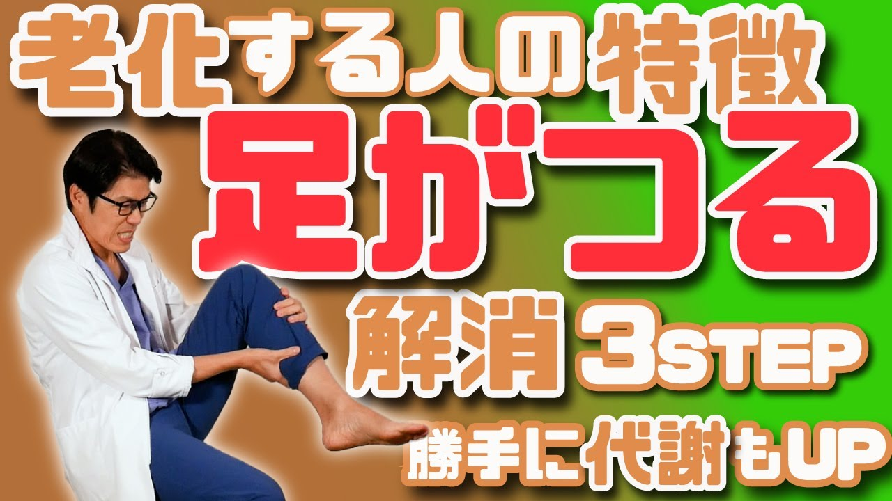 ブックマーク DL 【足がつる】根本原因&改善どころの騒ぎじゃない 老廃物ドバドバ代謝アップで若返り効果【老化のサイン】 理学療法士 パク先生【尼崎】【つながり整体院】 / 156.3万 views 公開日: 2023-01-07登録者: 31.3万 生活者向け痛み解決セルフケア重点 痛みや不調の悩みから入る生活者向けの実用訴求 生活者の痛み・セルフケア / 直近5本平均 33.3万 views
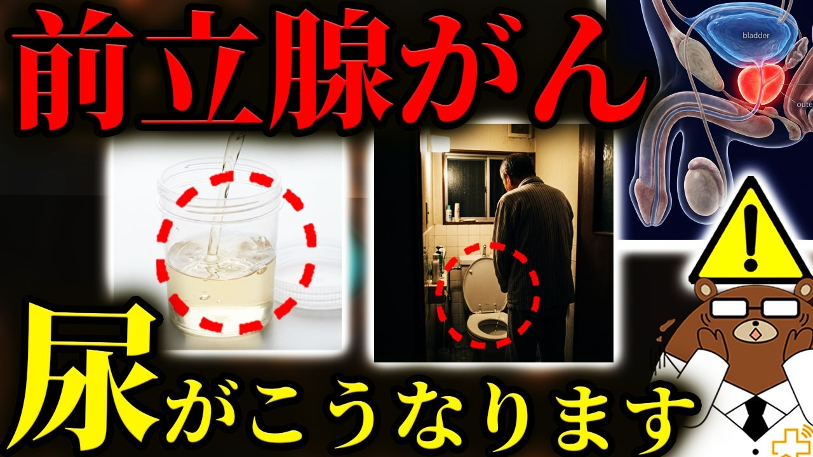 ブックマーク DL 【超意外な初期症状】放置厳禁！知らないと後悔する前立腺がん。まさかの「足」と「尿」の危険サイン。残尿感.夜間頻尿.浮腫.意外な兆候とは？日本で急増している前立腺がんの予防法とは。医師が徹底解説。 予防医学ch /医師監修 ウチカラクリニック / 75.7万 views 公開日: 2026-05-27登録者: 107万 生活者向け痛み解決セルフケア重点 痛みや不調の悩みから入る生活者向けの実用訴求 生活者の痛み・セルフケア / 直近5本平均 52万 views
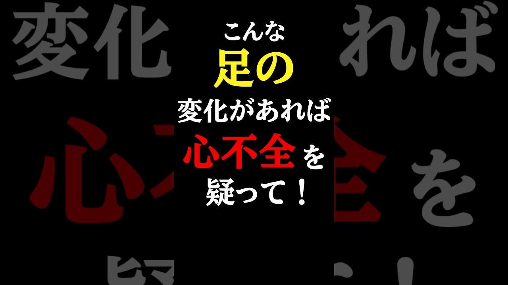 ブックマーク DL 【超意外な初期症状】放置厳禁！この「足」の変化は心不全の疑い。絶対見逃さないで#心不全初期症状#予防医学チャンネル#心不全 予防医学ch /医師監修 ウチカラクリニック / 73.7万 views 公開日: 2026-05-04登録者: 107万 生活者向け痛み解決セルフケア重点 痛みや不調の悩みから入る生活者向けの実用訴求 生活者の痛み・セルフケア / 直近5本平均 52万 views
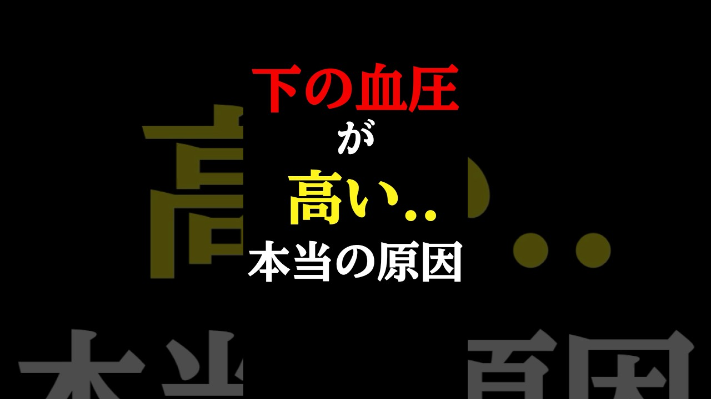 ブックマーク DL 【超意外】上の血圧との違いは？下の血圧に要注意！#高血圧 #予防医学チャンネル #医師 予防医学ch /医師監修 ウチカラクリニック / 60万 views 公開日: 2026-05-23登録者: 107万 生活者向け痛み解決セルフケア重点 痛みや不調の悩みから入る生活者向けの実用訴求 生活者の痛み・セルフケア / 直近5本平均 52万 views
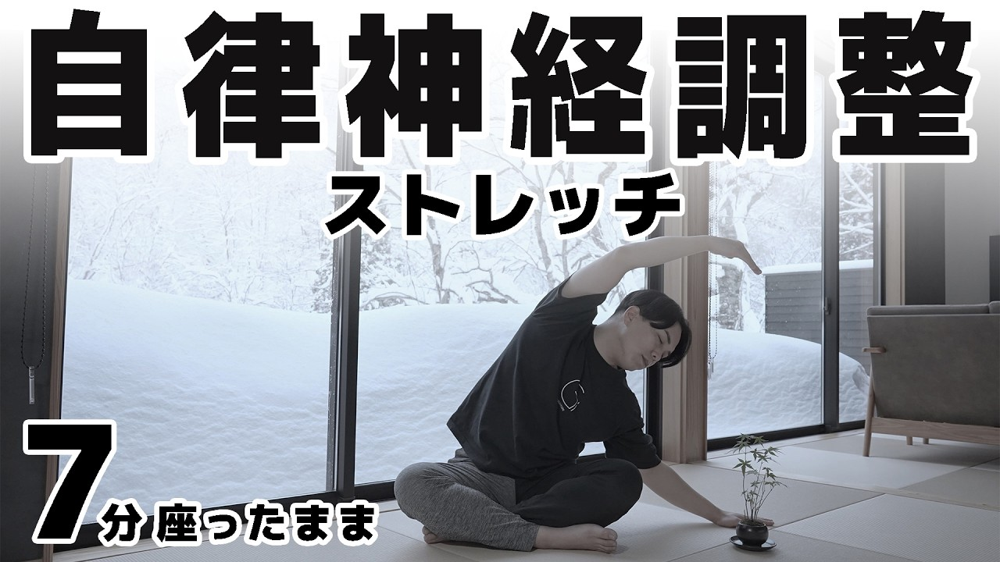 ブックマーク DL 背骨をほぐす自律神経調整7分ストレッチ【頭痛/肩こり/不眠/イライラ/生理痛/むくみ】 オガトレ / 43.4万 views 公開日: 2026-01-19登録者: 176万 生活者向け痛み解決セルフケア重点 痛みや不調の悩みから入る生活者向けの実用訴求 生活者の痛み・セルフケア / 直近5本平均 16万 views
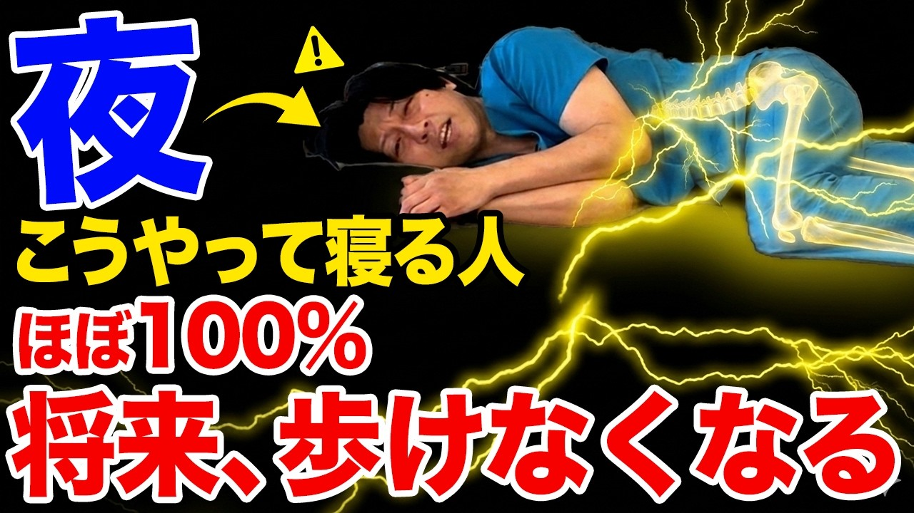 ブックマーク DL 【要注意⚠️】この寝方は今すぐやめて！寝ている間に膝痛・股関節を壊して自律神経が乱れて老けやすくなる！不眠症が驚くほど解消して一生自分の脚で歩ける究極のナイトルーティン! ストレッチ整体師とも先生 / 35.5万 views 公開日: 2026-05-30登録者: 67.2万 生活者向け痛み解決セルフケア重点 痛みや不調の悩みから入る生活者向けの実用訴求 生活者の痛み・セルフケア / 直近5本平均 11.6万 views
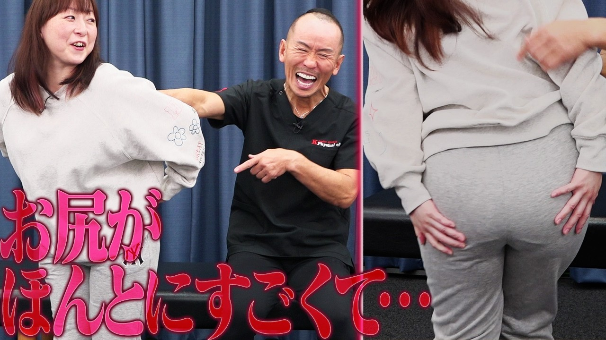 ブックマーク DL 【仙腸関節炎】「お尻が痛い」と訴え続けた10年。理解されなかった痛みを兼子ただしが劇的改善 ストレッチトレーナー / 理学療法士 兼子ただしch / 32.8万 views 公開日: 2026-05-27登録者: 32.9万 生活者向け痛み解決セルフケア重点 痛みや不調の悩みから入る生活者向けの実用訴求 生活者の痛み・セルフケア / 直近5本平均 10.8万 views
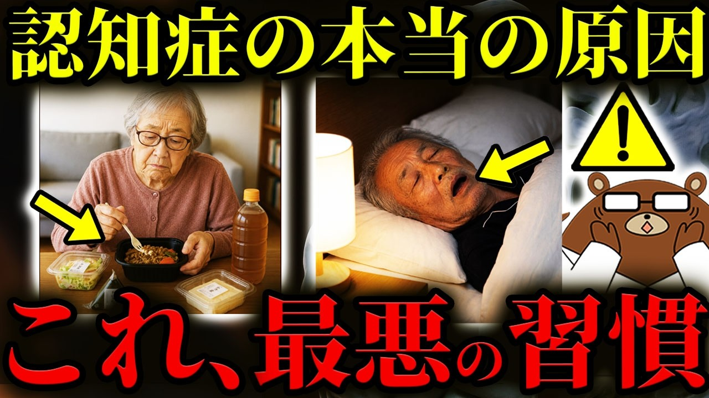 ブックマーク DL 【超意外】絶対に知らないと後悔する、認知症になる人が共通して行っている行動。脳に「ゴミ」が溜まる人の共通点。こんな人は脳の血管が傷つき、血流不足に..認知症にならない為に今からできる事は？医師が解説。 予防医学ch /医師監修 ウチカラクリニック / 28.9万 views 公開日: 2026-05-16登録者: 107万 生活者向け痛み解決セルフケア重点 痛みや不調の悩みから入る生活者向けの実用訴求 生活者の痛み・セルフケア / 直近5本平均 52万 views
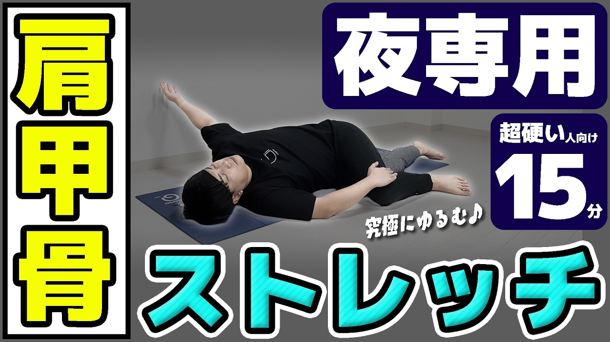 ブックマーク DL 【夜専用15分】 肩甲骨まわりをゆるめて整えるストレッチ【2300万回再生の新作】 オガトレ / 21.2万 views 公開日: 2026-05-23登録者: 176万 生活者向け痛み解決セルフケア重点 痛みや不調の悩みから入る生活者向けの実用訴求 生活者の痛み・セルフケア / 直近5本平均 16万 views
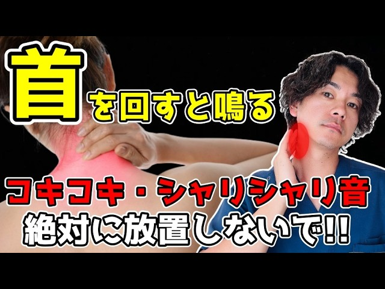 ブックマーク DL 【危険⚠️】首を回すと”シャリシャリ”聞こえる人は要注意！血管が詰まって脳梗塞のリスクが上がります！肩こり首こりを一瞬で解消して姿勢まで矯正する奇跡の若返りセルフケア かず先生の若返りセルフケア塾 / 15万 views 公開日: 2026-05-31登録者: 78.7万 生活者向け痛み解決セルフケア重点 痛みや不調の悩みから入る生活者向けの実用訴求 生活者の痛み・セルフケア / 直近5本平均 3.8万 views
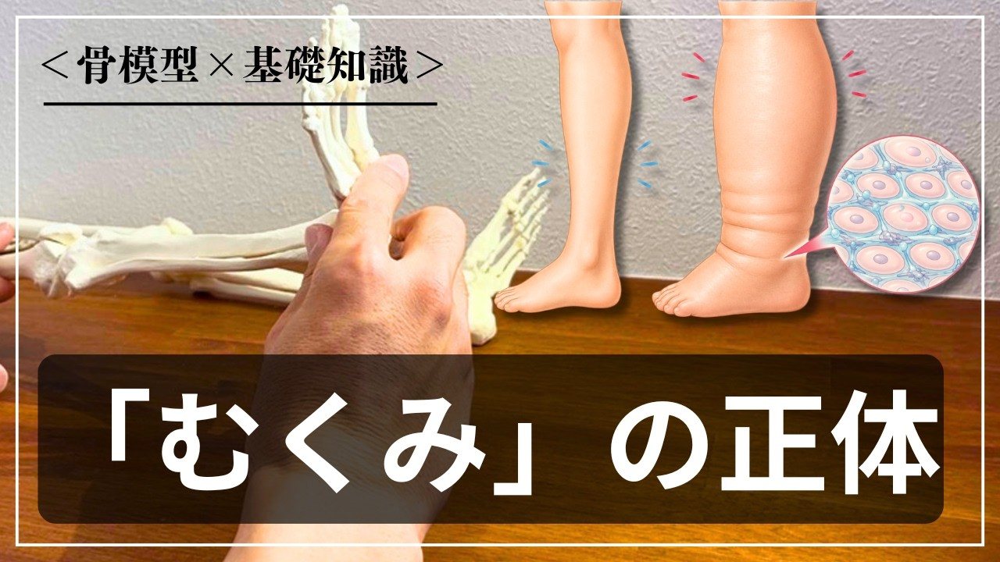 ブックマーク DL 【むくみ（浮腫）】むくんでいる状態は「何が・どこに」溜まっているの？ カラダ研究所_日本一わかりやすい解剖学チャンネル / 13万 views 公開日: 2026-05-15登録者: 9.4万 専門職向け技術学習教育重点 治療家・PT・トレーナーが学びたくなる技術/知識訴求 専門職向け学習 / 直近5本平均 6.1万 views
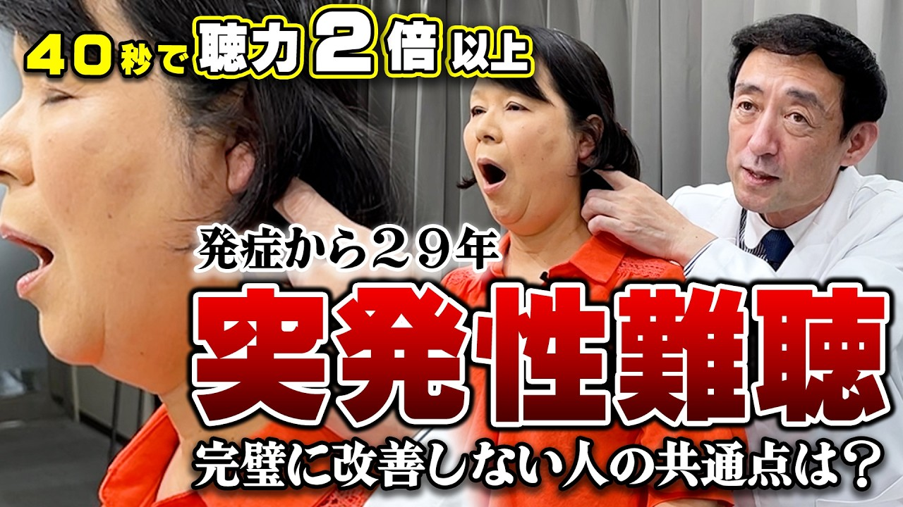 ブックマーク DL 【突発性難聴】29年前に発症した症状がなぜ改善する？治ることを諦めている方「緩消法」を試してください。 緩消法さかとチャンネル / 11.7万 views 公開日: 2026-05-16登録者: 3.7万 生活者向け痛み解決セルフケア重点 痛みや不調の悩みから入る生活者向けの実用訴求 生活者の痛み・セルフケア / 直近5本平均 4.3万 views
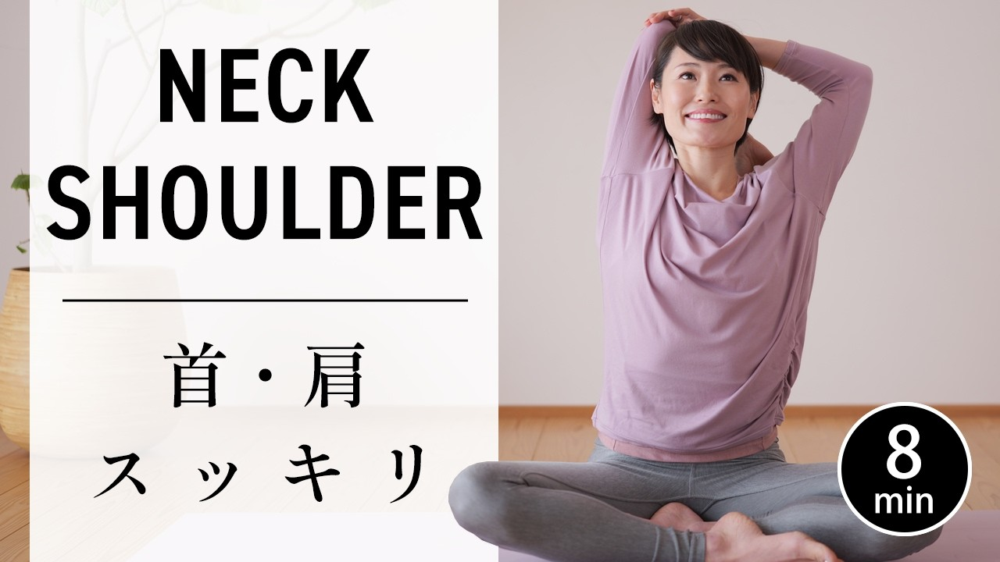 ブックマーク DL 【毎日8分】首こり肩こりがスーッと軽くなる癒しヨガ #773 B-Flow / 11.6万 views 公開日: 2026-05-13登録者: 257万 生活者向け痛み解決セルフケア広義参考 痛みや不調の悩みから入る生活者向けの実用訴求 生活者の痛み・セルフケア / 直近5本平均 6万 views
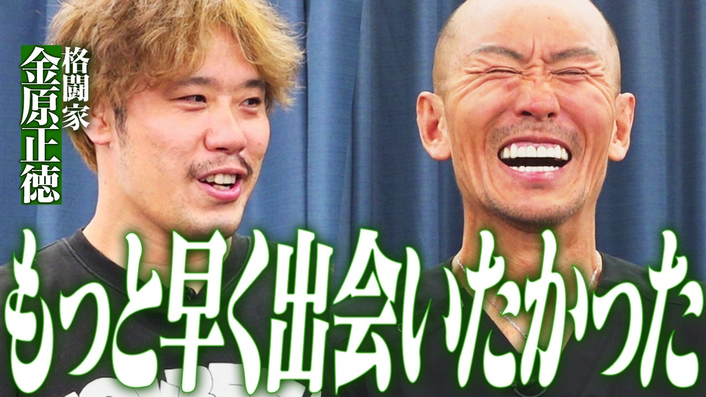 ブックマーク DL 【満身創痍の元格闘家】引退するほど痛かった身体…。限界を迎えた体が兼子ただしの神経系ストレッチで劇的変化 ストレッチトレーナー / 理学療法士 兼子ただしch / 10.8万 views 公開日: 2026-05-30登録者: 32.9万 生活者向け痛み解決セルフケア重点 痛みや不調の悩みから入る生活者向けの実用訴求 生活者の痛み・セルフケア / 直近5本平均 10.8万 views
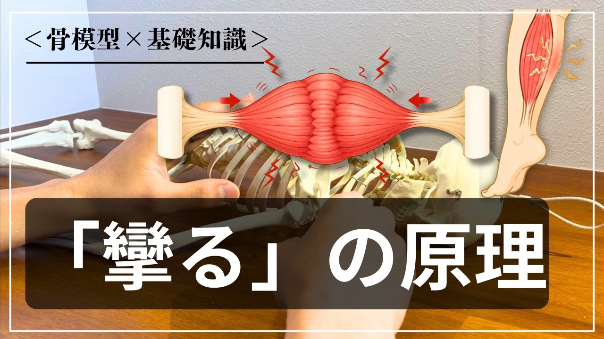 ブックマーク DL 【攣る（つる）原理】足が"つる"のはどうして？メカニズムと対処法 カラダ研究所_日本一わかりやすい解剖学チャンネル / 10.5万 views 公開日: 2026-05-08登録者: 9.4万 専門職向け技術学習教育重点 治療家・PT・トレーナーが学びたくなる技術/知識訴求 専門職向け学習 / 直近5本平均 6.1万 views
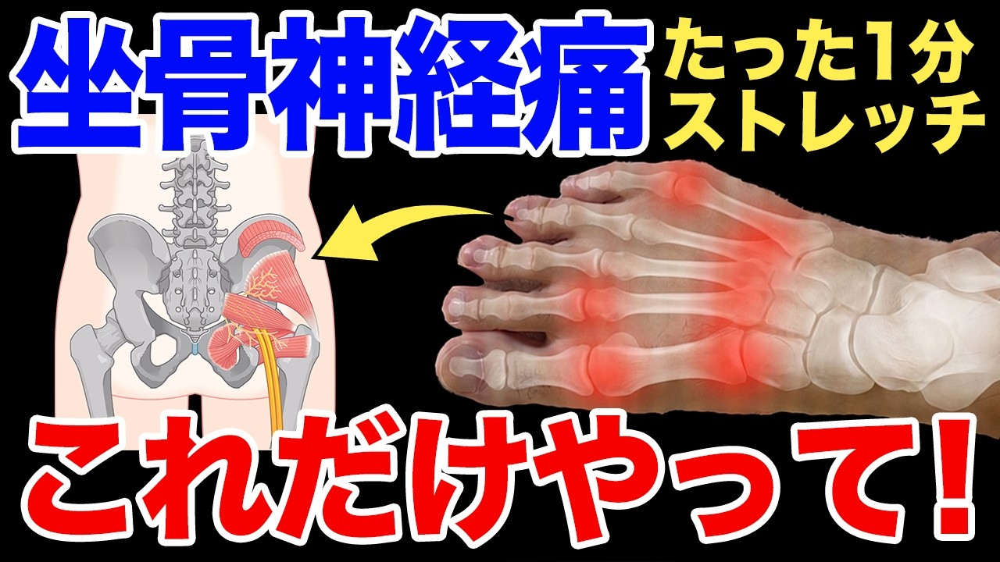 ブックマーク DL 【坐骨神経痛1分で消える】 「足」を整えると、９割の坐骨神経痛は魔法のように消し去る。お尻の痛みや違和感も自分で治す7日間セルフケア!【腰痛改善】 ストレッチ整体師とも先生 / 10.5万 views 公開日: 2026-05-16登録者: 67.2万 生活者向け痛み解決セルフケア重点 痛みや不調の悩みから入る生活者向けの実用訴求 生活者の痛み・セルフケア / 直近5本平均 11.6万 views
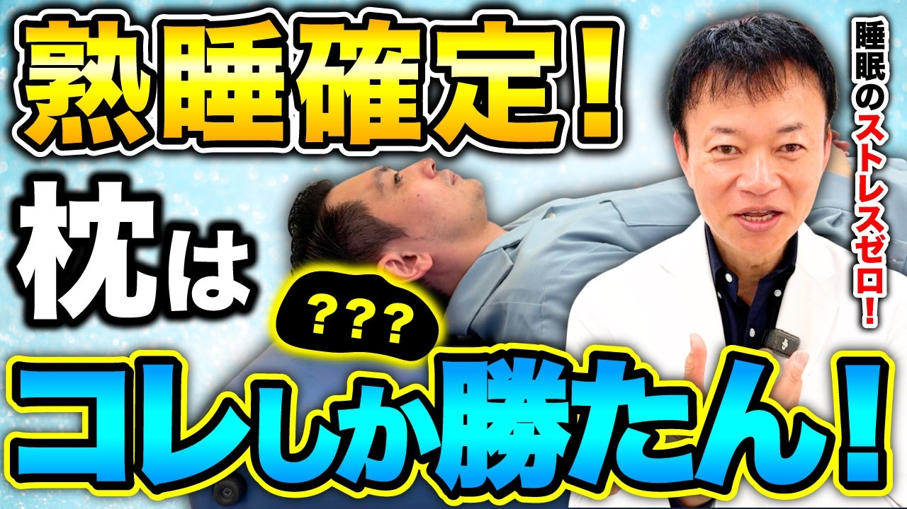 ブックマーク DL 【警告】この枕で寝ている人…脳卒中のリスクが爆上がりするから今すぐ捨てて！山内が世界一オススメする究極の爆睡枕の作り方（動脈硬化、無呼吸症候群） 腰痛・肩こり駆け込み寺【山内義弘】 / 9.9万 views 公開日: 2026-06-02登録者: 156万 スポーツ整形症状解説専門性重点 症状・競技・治療理解を入口にした専門性訴求 スポーツ整形/スポーツ障害 / 直近5本平均 4.5万 views
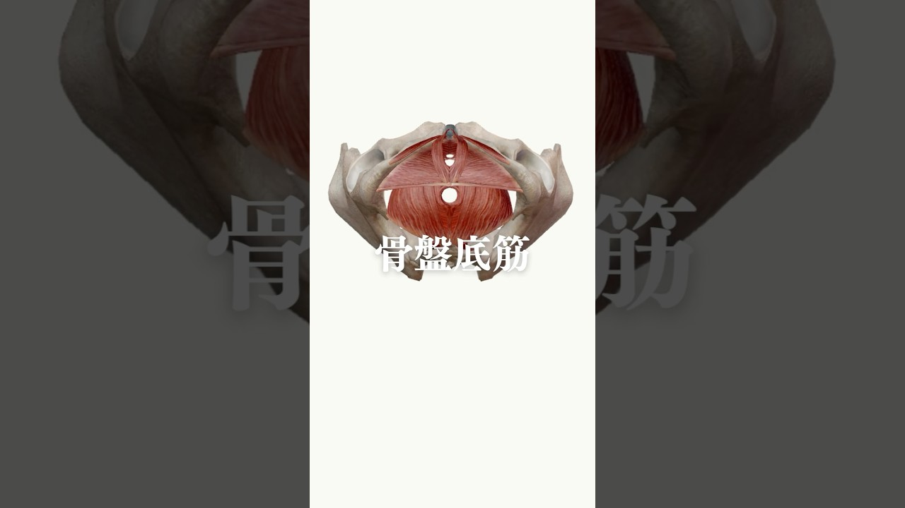 ブックマーク DL 骨盤底筋に張りを出す！内転筋エクササイズ！ 吉田直輔 / 9.2万 views 公開日: 2025-08-19登録者: 29.7万 生活者向け痛み解決セルフケア重点 痛みや不調の悩みから入る生活者向けの実用訴求 生活者の痛み・セルフケア / 直近5本平均 7.1万 views
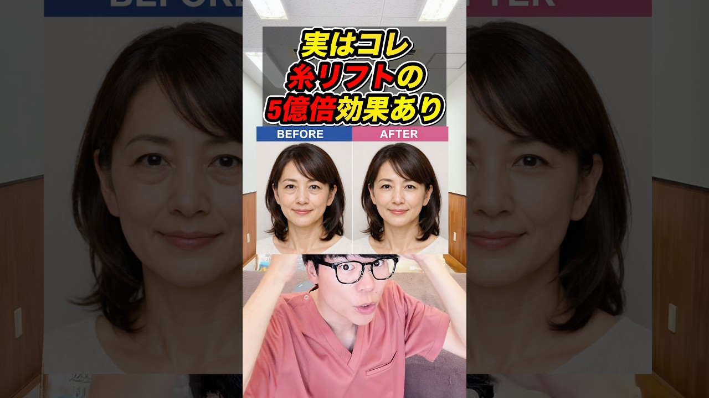 ブックマーク DL 【糸リフト級】ほうれい線、目の下のたるみが解消する骨のタッピング術 ゆう先生の美容整体塾【京都の整体院悠】 / 8.8万 views 公開日: 2026-05-31登録者: 175万 生活者向け痛み解決セルフケア重点 痛みや不調の悩みから入る生活者向けの実用訴求 生活者の痛み・セルフケア / 直近5本平均 4.5万 views
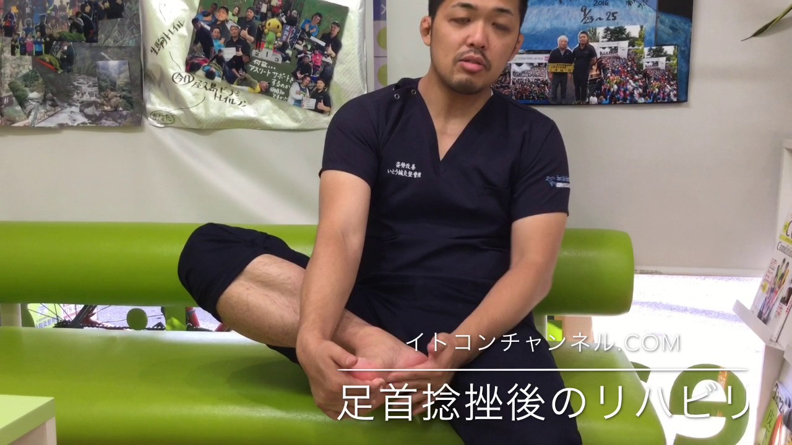 ブックマーク DL 一生歩ける土台をつくる！足首捻挫後のリハビリ いとう鍼灸整骨院 / 8.7万 views 公開日: 2017-06-13登録者: 373 スポーツ整形症状解説専門性重点 症状・競技・治療理解を入口にした専門性訴求 スポーツ整形/スポーツ障害 / 直近5本平均 1.9万 views
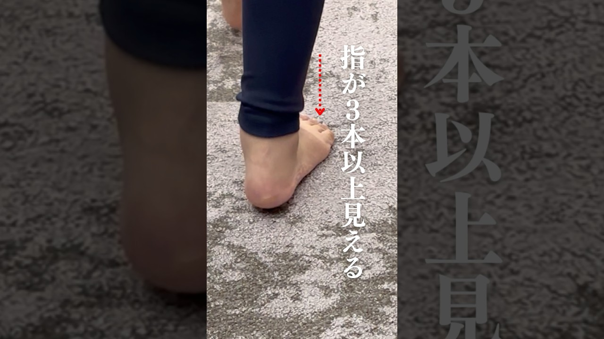 ブックマーク DL 指が3本以上見える、それは股関節のインナーマッスルが弱いから、まじで効くクラムシェル 吉田直輔 / 8.3万 views 公開日: 2025-09-02登録者: 29.7万 生活者向け痛み解決セルフケア重点 痛みや不調の悩みから入る生活者向けの実用訴求 生活者の痛み・セルフケア / 直近5本平均 7.1万 views
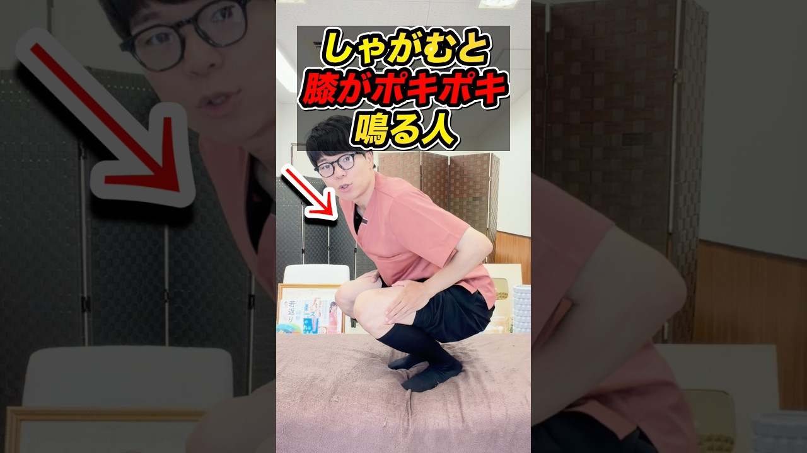 ブックマーク DL 【膝の痛み】膝がポキポキ鳴る人、絶対に放置しないで。姿勢矯正して股関節痛も解消 ゆう先生の美容整体塾【京都の整体院悠】 / 8万 views 公開日: 2026-06-02登録者: 175万 生活者向け痛み解決セルフケア重点 痛みや不調の悩みから入る生活者向けの実用訴求 生活者の痛み・セルフケア / 直近5本平均 4.5万 views
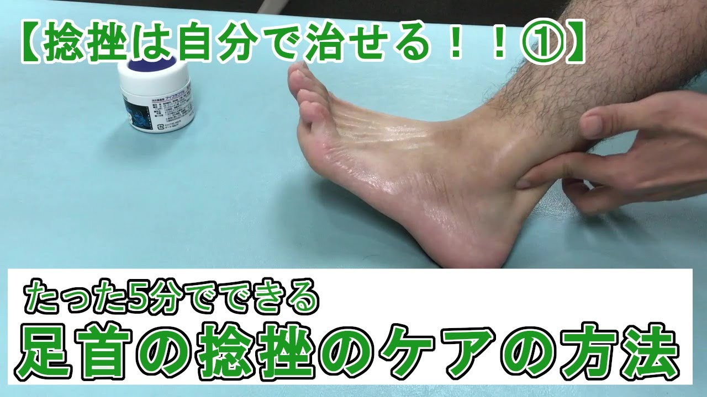 ブックマーク DL 【自分で出来る！】足首の捻挫のケアの方法 大府の猫背改善専門ホクセイ整体院大府 / 7.8万 views 公開日: 2020-10-06登録者: 603 スポーツ整形症状解説専門性重点 症状・競技・治療理解を入口にした専門性訴求 スポーツ整形/スポーツ障害 / 直近5本平均 1.6万 views
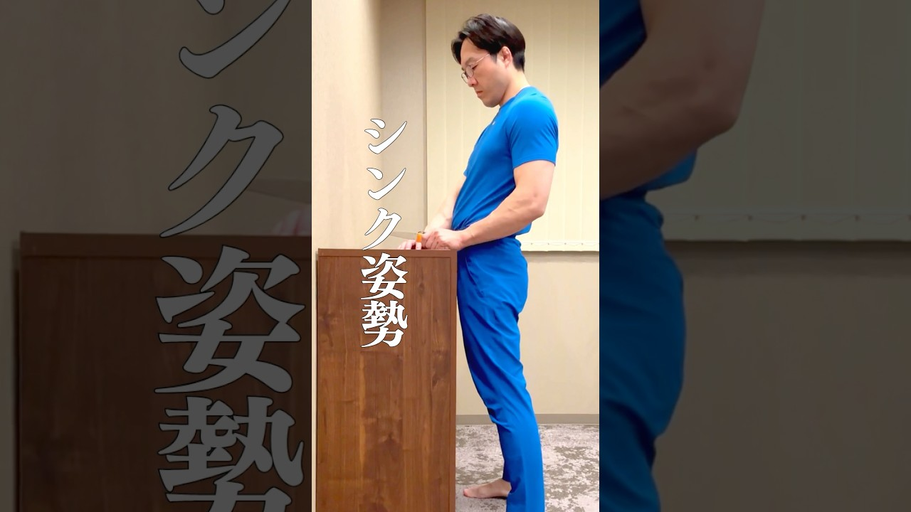 ブックマーク DL シンク姿勢は腹圧が原因。腹圧を高めるエクササイズ！ 吉田直輔 / 7.4万 views 公開日: 2026-05-26登録者: 29.7万 生活者向け痛み解決セルフケア重点 痛みや不調の悩みから入る生活者向けの実用訴求 生活者の痛み・セルフケア / 直近5本平均 7.1万 views
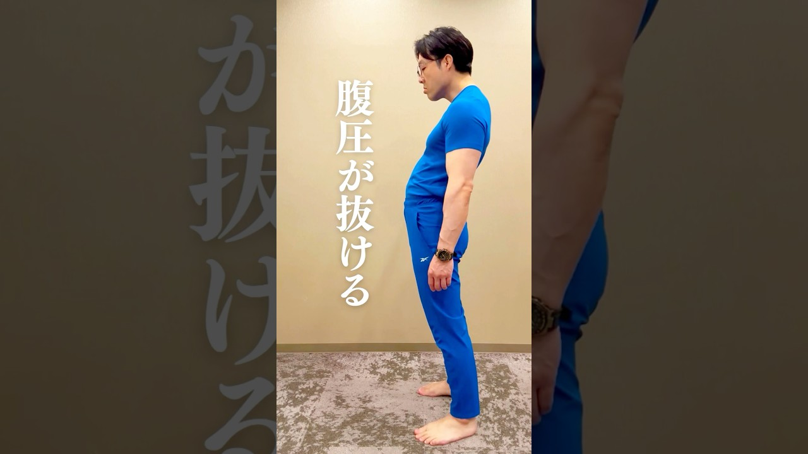 ブックマーク DL 咳やくしゃみで腹圧が抜ける、チェックしてみて！エクササイズもあるよ 吉田直輔 / 7.2万 views 公開日: 2025-06-24登録者: 29.7万 生活者向け痛み解決セルフケア重点 痛みや不調の悩みから入る生活者向けの実用訴求 生活者の痛み・セルフケア / 直近5本平均 7.1万 views
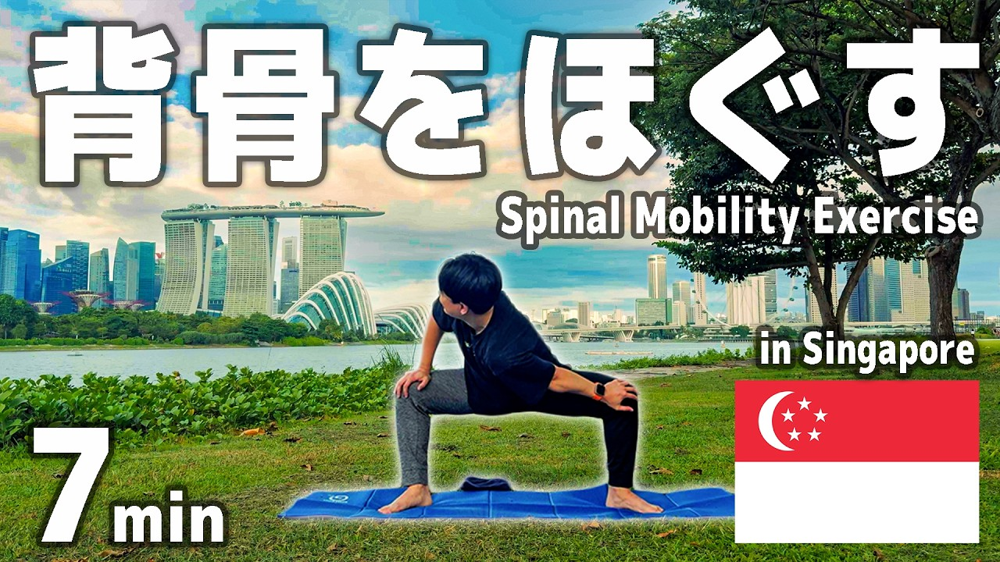 ブックマーク DL 【毎日7分】背骨をほぐすだけで体が軽くなるエクササイズ in Singapore🇸🇬 オガトレ / 7万 views 公開日: 2026-03-01登録者: 176万 生活者向け痛み解決セルフケア重点 痛みや不調の悩みから入る生活者向けの実用訴求 生活者の痛み・セルフケア / 直近5本平均 16万 views
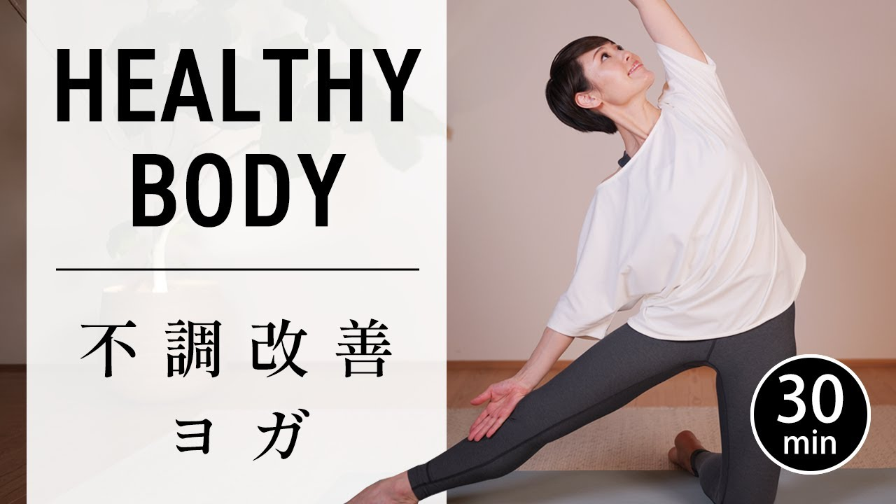 ブックマーク DL 【30分】重だるい体をスッキリ整える｜自律神経リセットヨガ #775 B-Flow / 6.9万 views 公開日: 2026-05-27登録者: 257万 生活者向け痛み解決セルフケア広義参考 痛みや不調の悩みから入る生活者向けの実用訴求 生活者の痛み・セルフケア / 直近5本平均 6万 views
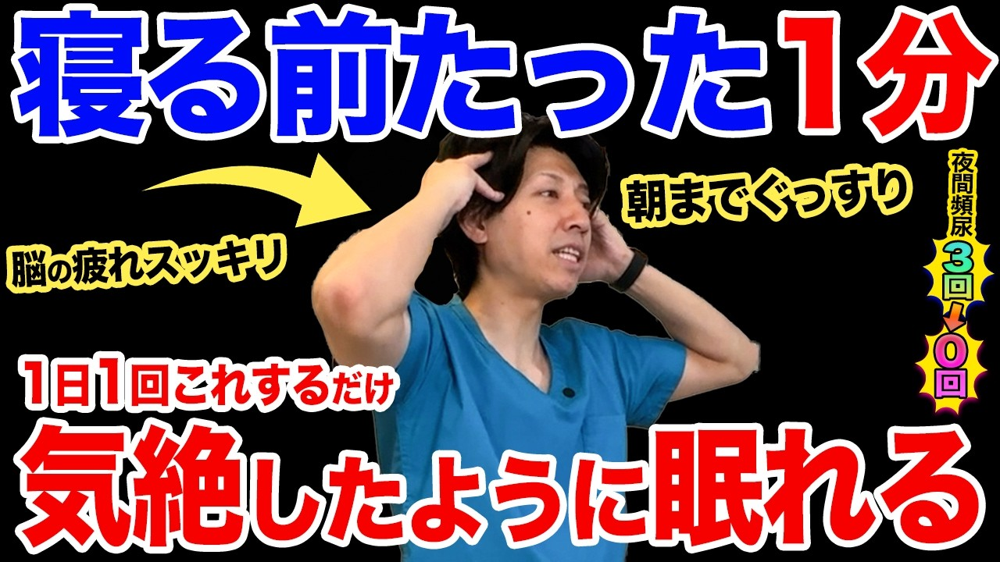 ブックマーク DL 【夜中に3回起きる人へ】脳に溜まったゴミを流して、気絶したように寝れる自律神経改善セルフケア！夜間頻尿・尿漏れをスッキリ改善して朝までぐっすり眠れるようにする方法!（中途覚醒、不眠症） ストレッチ整体師とも先生 / 6.4万 views 公開日: 2026-05-23登録者: 67.2万 生活者向け痛み解決セルフケア重点 痛みや不調の悩みから入る生活者向けの実用訴求 生活者の痛み・セルフケア / 直近5本平均 11.6万 views
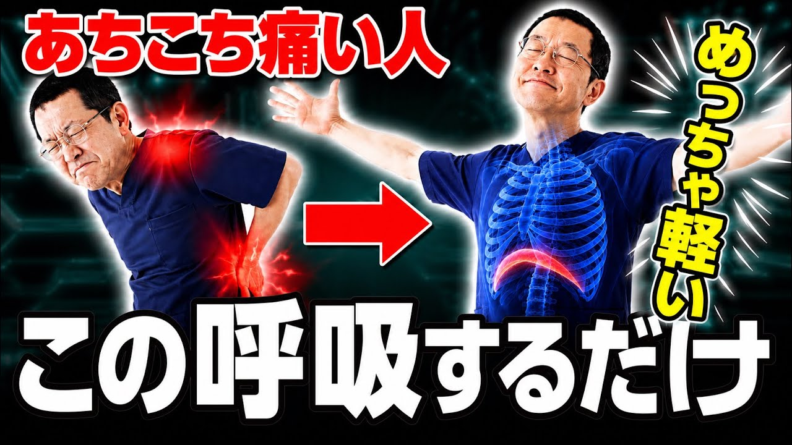 ブックマーク DL 【ストレッチはやめて】3回やるだけで痛みが楽になる呼吸法 足底筋膜炎専門ちゃんねる / 6.2万 views 公開日: 2026-05-23登録者: 52.8万 生活者向け痛み解決セルフケア重点 痛みや不調の悩みから入る生活者向けの実用訴求 生活者の痛み・セルフケア / 直近5本平均 3万 views
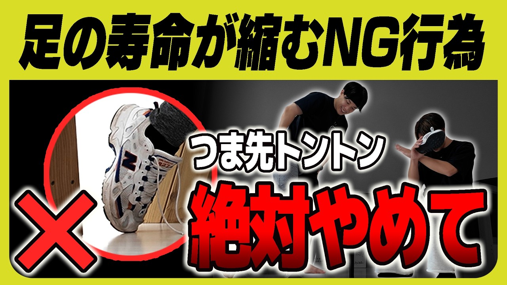 ブックマーク DL 足のトラブルは履き方が原因！今すぐ玄関で試すべき“魔法の履き方”｜浮き指・扁平足・外反母趾の悩みを解決｜カラダのプロに聞いてみた #2 武田洋（後編） オガトレ / 6万 views 公開日: 2026-02-11登録者: 176万 生活者向け痛み解決セルフケア重点 痛みや不調の悩みから入る生活者向けの実用訴求 生活者の痛み・セルフケア / 直近5本平均 16万 views
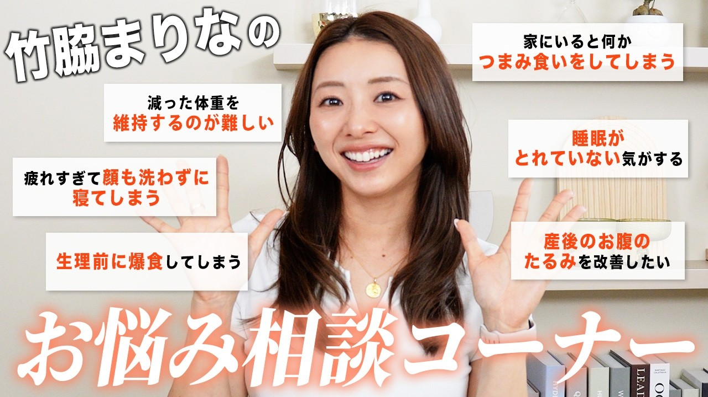 ブックマーク DL 【お悩み相談】竹脇まりなが視聴者さんのカラダのお悩みに答えます！食事・運動・睡眠・メンタル・時間の使い方など！ Marina Takewaki / 5.9万 views 公開日: 2026-05-27登録者: 440万 生活者向け痛み解決セルフケア広義参考 痛みや不調の悩みから入る生活者向けの実用訴求 生活者の痛み・セルフケア / 直近5本平均 4.9万 views
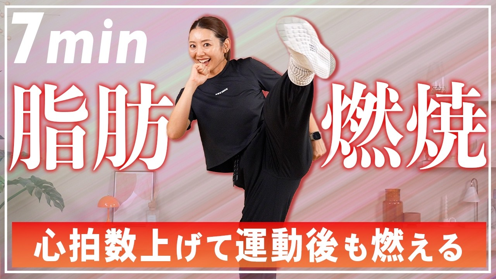 ブックマーク DL 【7分有酸素】中上級者向け短時間で全身燃焼！自宅でできる滝汗エクササイズ！アフターバーンで運動後も燃える！ Marina Takewaki / 5.8万 views 公開日: 2026-06-01登録者: 440万 生活者向け痛み解決セルフケア広義参考 痛みや不調の悩みから入る生活者向けの実用訴求 生活者の痛み・セルフケア / 直近5本平均 4.9万 views
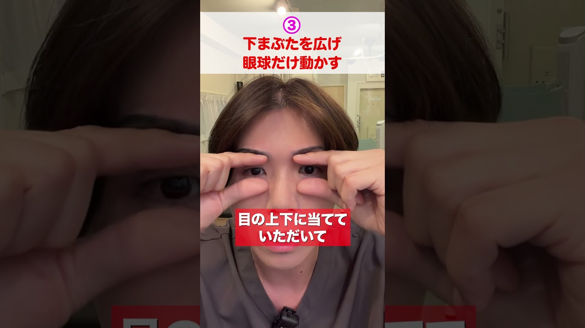 ブックマーク DL 目の下のたるみ改善は眼球が鍵、眼球とまぶたの動きを分離させて、目のシワを作らない美容整体式眼球トレーニングマッサージ 美容整体のうちやま先生。 / 5.6万 views 公開日: 2026-06-01登録者: 141万 生活者向け痛み解決セルフケア重点 痛みや不調の悩みから入る生活者向けの実用訴求 生活者の痛み・セルフケア / 直近5本平均 3万 views
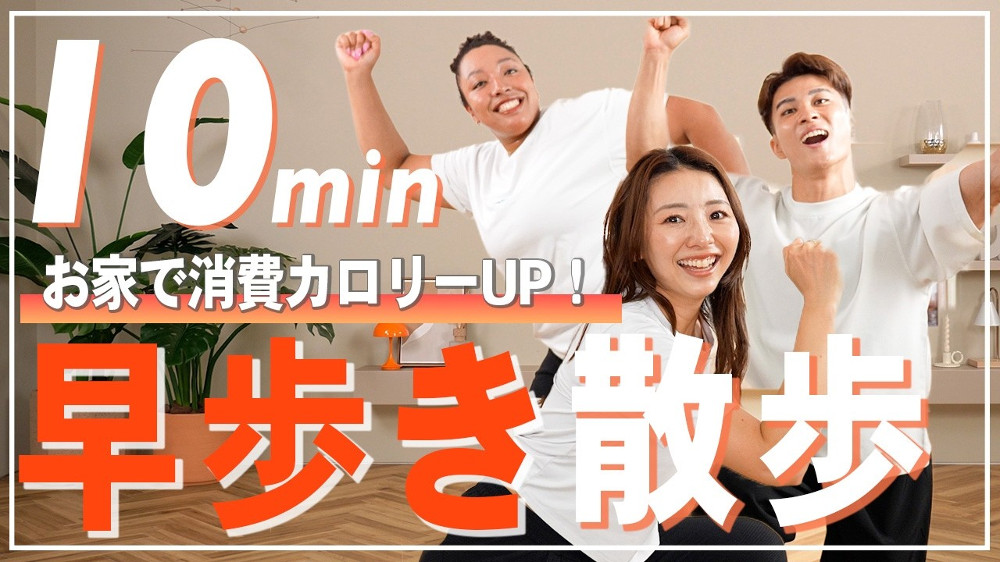 ブックマーク DL 【10分室内ウォーキング】早歩きで効率良くカロリー消費！自宅でできる有酸素運動で運動不足も解消！ Marina Takewaki / 5.6万 views 公開日: 2026-06-03登録者: 440万 生活者向け痛み解決セルフケア広義参考 痛みや不調の悩みから入る生活者向けの実用訴求 生活者の痛み・セルフケア / 直近5本平均 4.9万 views
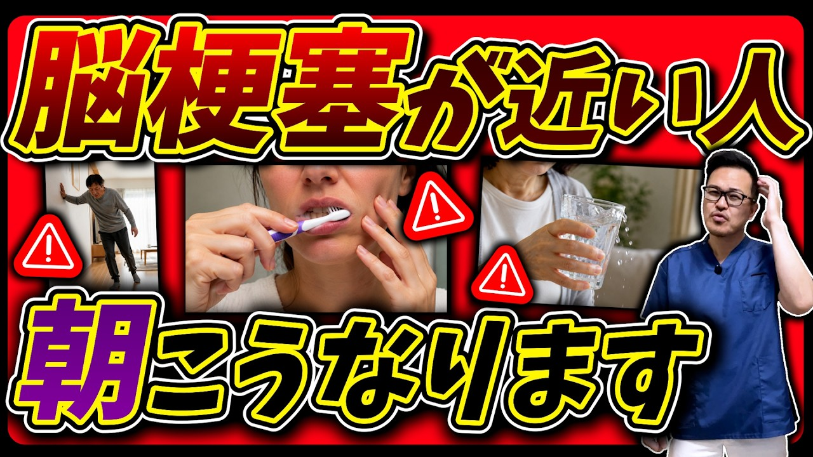 ブックマーク DL 【後悔する前に見て】脳梗塞の危険な朝のサインと脳梗塞の予防法（脳梗塞 脂質異常症） セルフケア教室 nobu先生 /格闘家整体師 / 5.4万 views 公開日: 2026-05-23登録者: 149万 生活者向け痛み解決セルフケア重点 痛みや不調の悩みから入る生活者向けの実用訴求 生活者の痛み・セルフケア / 直近5本平均 2.6万 views
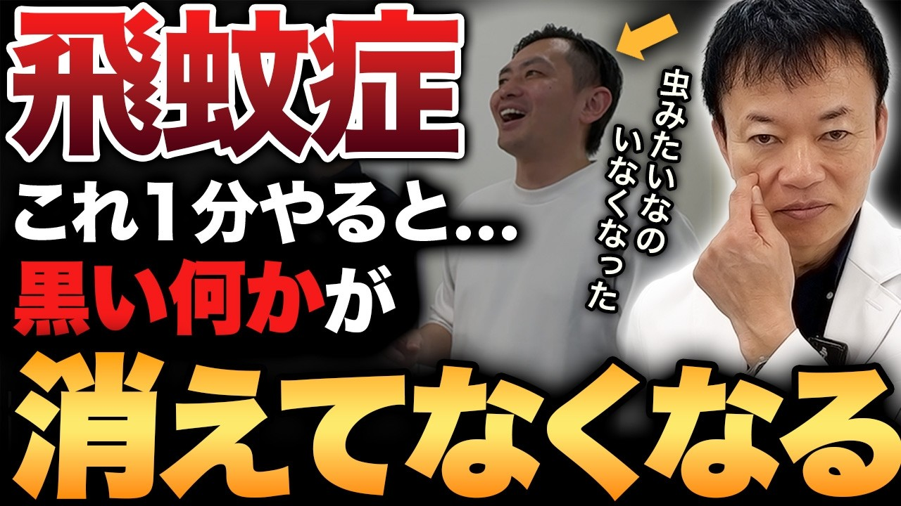 ブックマーク DL 【飛蚊症】糸くず・黒い虫が見える人...それ放置してると視力低下が加速して失明するかもしれません！今すぐ眼科を受診すべき危険な飛蚊症の初期サインを徹底解説します！ 腰痛・肩こり駆け込み寺【山内義弘】 / 5.4万 views 公開日: 2026-06-06登録者: 156万 スポーツ整形症状解説専門性重点 症状・競技・治療理解を入口にした専門性訴求 スポーツ整形/スポーツ障害 / 直近5本平均 4.5万 views
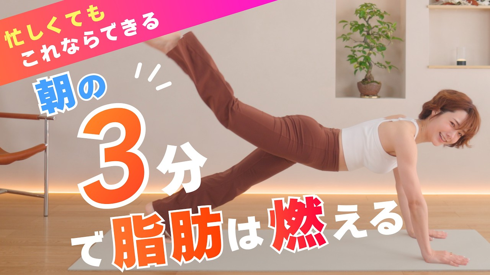 ブックマーク DL 忙しくても3分で脂肪は燃える！毎朝のルーティントレーニング のがちゃんねる/nogachannel / 4.8万 views 公開日: 2026-05-19登録者: 172万 生活者向け痛み解決セルフケア広義参考 痛みや不調の悩みから入る生活者向けの実用訴求 生活者の痛み・セルフケア / 直近5本平均 4.2万 views
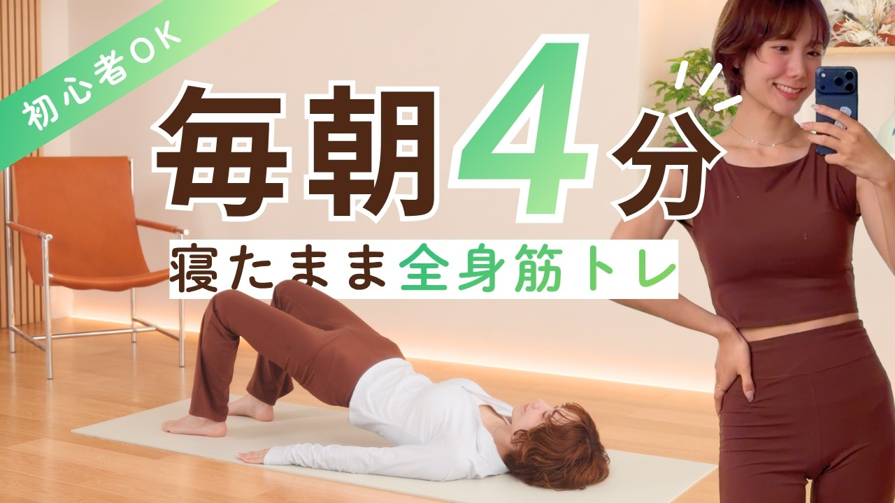 ブックマーク DL 痩せる人のモーニングルーティンを取り入れれば、全身が変わります✍️毎朝起きたら、ベットで寝たまま4分間これをする のがちゃんねる/nogachannel / 4.8万 views 公開日: 2026-05-16登録者: 172万 生活者向け痛み解決セルフケア広義参考 痛みや不調の悩みから入る生活者向けの実用訴求 生活者の痛み・セルフケア / 直近5本平均 4.2万 views
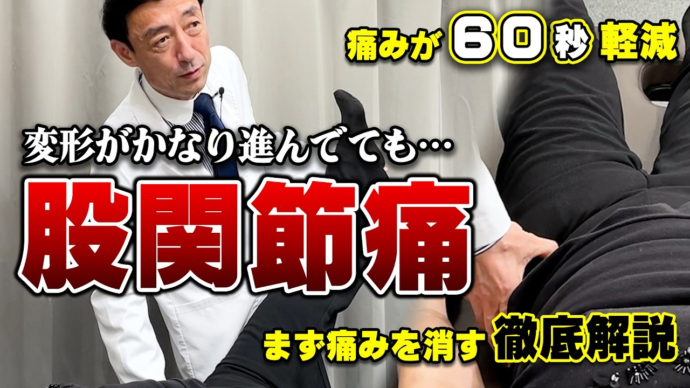 ブックマーク DL 【股関節痛】変形をこれ以上進まないようにするには？3年以上続く鼠径部の痛みを緩消法で改善 緩消法さかとチャンネル / 4.7万 views 公開日: 2026-05-27登録者: 3.7万 生活者向け痛み解決セルフケア重点 痛みや不調の悩みから入る生活者向けの実用訴求 生活者の痛み・セルフケア / 直近5本平均 4.3万 views
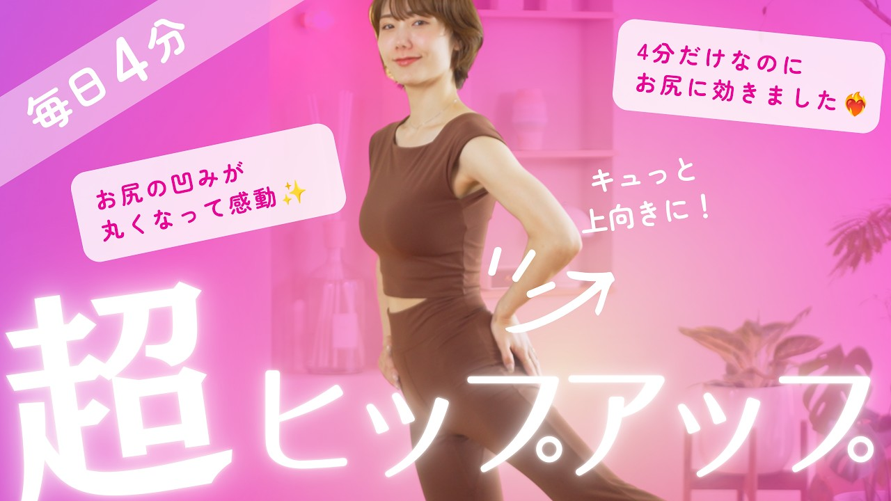 ブックマーク DL お尻を丸くしたいなら中臀筋を鍛える！立ったまま4分間でヒップアップできるトレーニング のがちゃんねる/nogachannel / 4.7万 views 公開日: 2026-05-30登録者: 172万 生活者向け痛み解決セルフケア広義参考 痛みや不調の悩みから入る生活者向けの実用訴求 生活者の痛み・セルフケア / 直近5本平均 4.2万 views
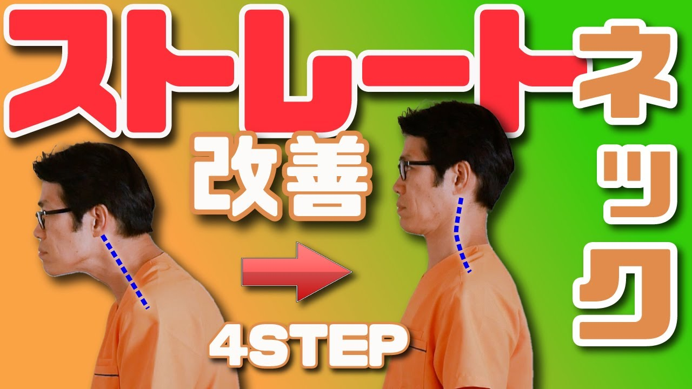 ブックマーク DL 【ストレートネック】姿勢も改善するどころの騒ぎじゃない 肩こり首こり 自律神経【スマホ首】 理学療法士 パク先生【尼崎】【つながり整体院】 / 4.4万 views 公開日: 2022-11-26登録者: 31.3万 生活者向け痛み解決セルフケア重点 痛みや不調の悩みから入る生活者向けの実用訴求 生活者の痛み・セルフケア / 直近5本平均 33.3万 views
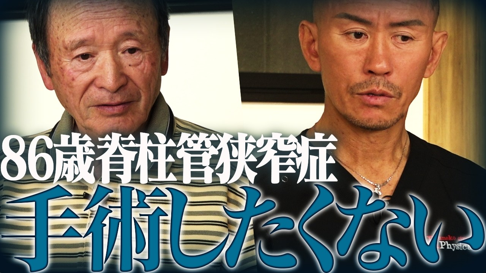 ブックマーク DL 【脊柱管狭窄症】歩けなくなるかもしれない…最後の希望をかけて兼子ただしの元へ！ ストレッチトレーナー / 理学療法士 兼子ただしch / 4.2万 views 公開日: 2026-06-03登録者: 32.9万 生活者向け痛み解決セルフケア重点 痛みや不調の悩みから入る生活者向けの実用訴求 生活者の痛み・セルフケア / 直近5本平均 10.8万 views
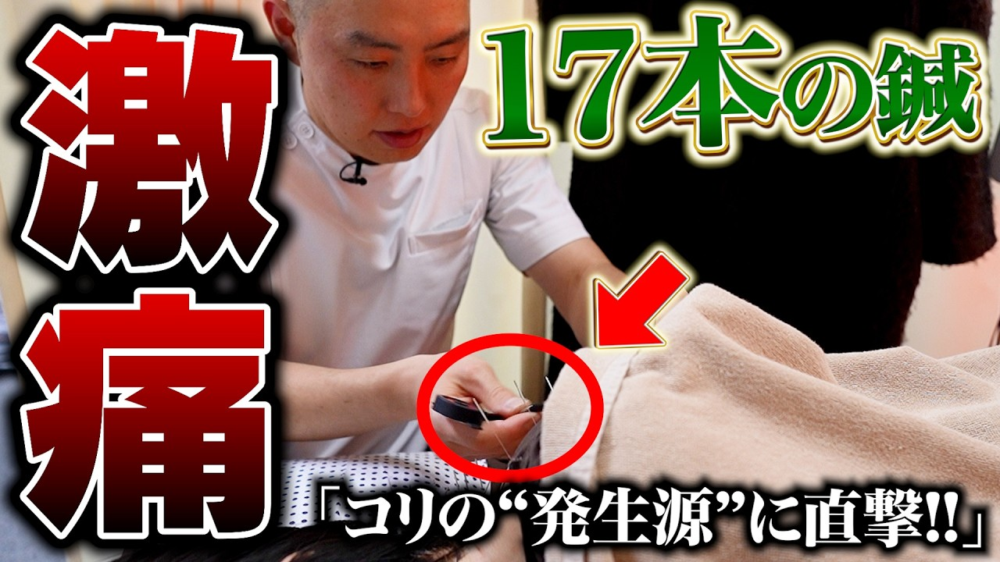 ブックマーク DL 【コリの"発生源"に直撃】首・肩のどこに行っても治らない痛み｜鍼灸治療で救済！ 薬に頼らないカラダ【銀座の鍼灸師そうぜん先生】 / 4.2万 views 公開日: 2026-05-26登録者: 4.9万 生活者向け痛み解決セルフケア重点 痛みや不調の悩みから入る生活者向けの実用訴求 生活者の痛み・セルフケア / 直近5本平均 2.3万 views
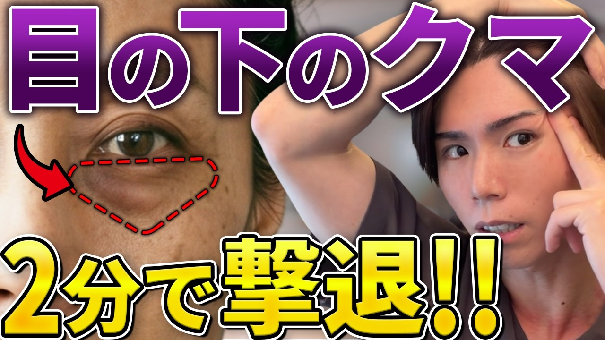 ブックマーク DL 【劇的に若返る】老けて見える"目の下のクマ"消す方法！たるみ・シワも解消するセルフケア 美容整体のうちやま先生。 / 4.1万 views 公開日: 2026-06-04登録者: 141万 生活者向け痛み解決セルフケア重点 痛みや不調の悩みから入る生活者向けの実用訴求 生活者の痛み・セルフケア / 直近5本平均 3万 views
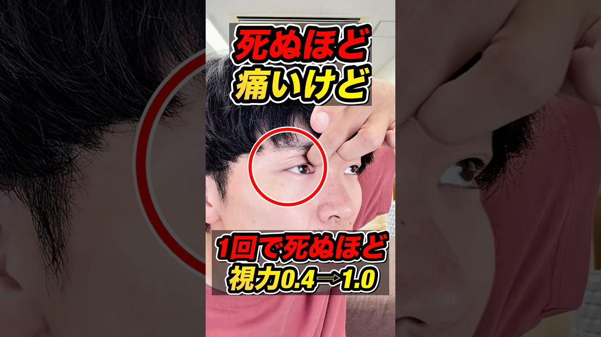 ブックマーク DL 【視力回復】目の凝りを剥がして老眼・視力回復できるエクササイズ ゆう先生の美容整体塾【京都の整体院悠】 / 4.1万 views 公開日: 2026-06-06登録者: 175万 生活者向け痛み解決セルフケア重点 痛みや不調の悩みから入る生活者向けの実用訴求 生活者の痛み・セルフケア / 直近5本平均 4.5万 views
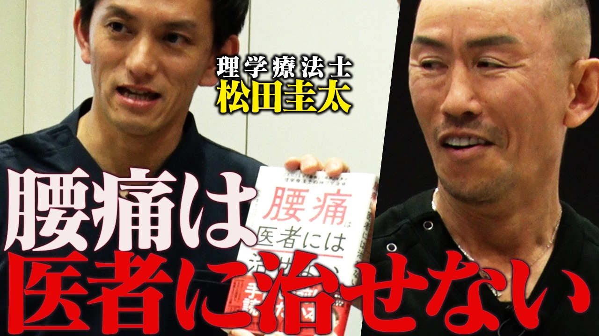 ブックマーク DL 【忖度なし】神ワザ治療学×神経系ストレッチ！治療家トップ2人が明かす「施術家」のこれから ストレッチトレーナー / 理学療法士 兼子ただしch / 4万 views 公開日: 2026-05-24登録者: 32.9万 生活者向け痛み解決セルフケア重点 痛みや不調の悩みから入る生活者向けの実用訴求 生活者の痛み・セルフケア / 直近5本平均 10.8万 views
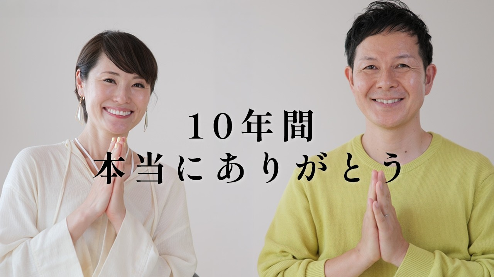 ブックマーク DL B-Flow10周年（前編）｜続けて見えたこと #771 B-Flow / 4万 views 公開日: 2026-04-29登録者: 257万 生活者向け痛み解決セルフケア広義参考 痛みや不調の悩みから入る生活者向けの実用訴求 生活者の痛み・セルフケア / 直近5本平均 6万 views
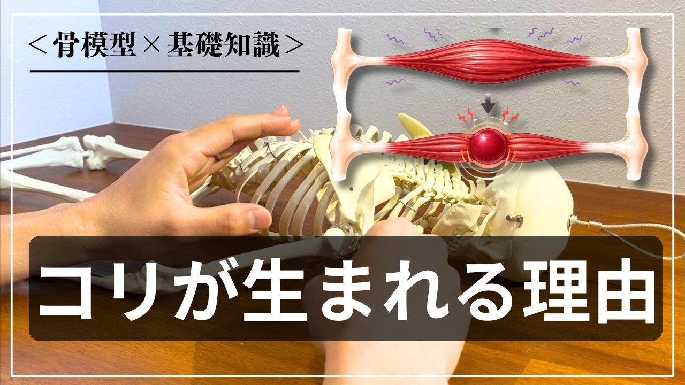 ブックマーク DL 【コリの原点】なぜコリはなかなか無くならないのか？ カラダ研究所_日本一わかりやすい解剖学チャンネル / 4万 views 公開日: 2026-05-22登録者: 9.4万 専門職向け技術学習教育重点 治療家・PT・トレーナーが学びたくなる技術/知識訴求 専門職向け学習 / 直近5本平均 6.1万 views
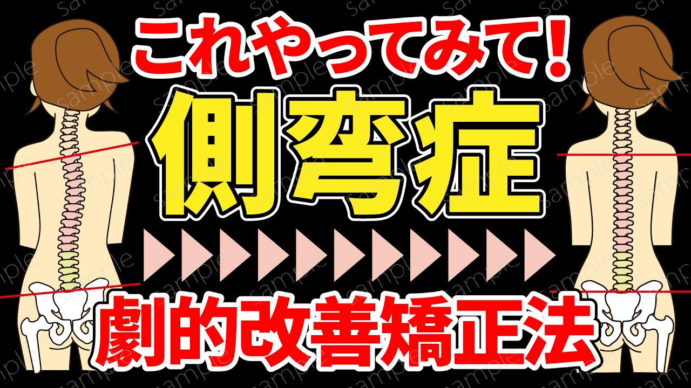 ブックマーク DL 【側弯症】9割が知らない背骨の歪みやねじれを解消する方法【治し方】 肩こり&腰痛改善のゆうちゃんねる / 3.9万 views 公開日: 2025-04-28登録者: 9.2万 スポーツ整形症状解説専門性重点 症状・競技・治療理解を入口にした専門性訴求 スポーツ整形/スポーツ障害 / 直近5本平均 1.3万 views
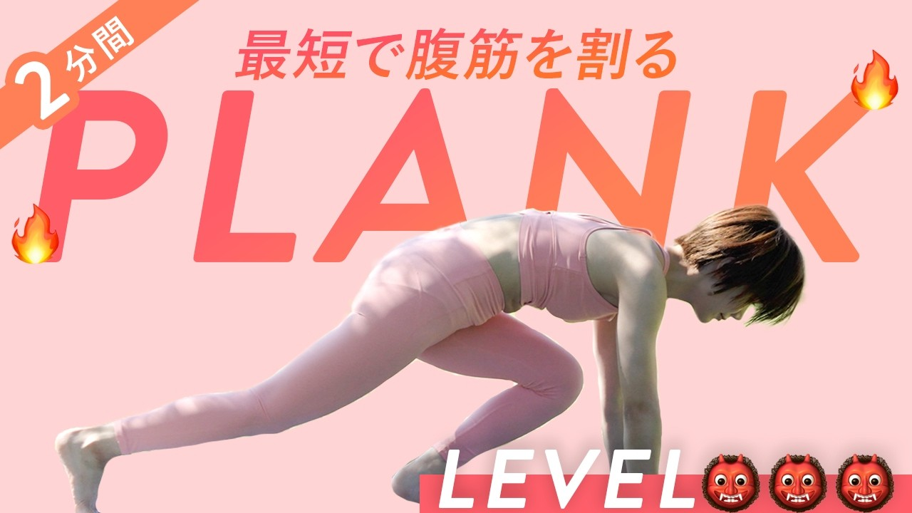 ブックマーク DL 【2分間】最短で腹筋を割る鬼のプランク のがちゃんねる/nogachannel / 3.9万 views 公開日: 2026-05-11登録者: 172万 生活者向け痛み解決セルフケア広義参考 痛みや不調の悩みから入る生活者向けの実用訴求 生活者の痛み・セルフケア / 直近5本平均 4.2万 views
ブックマーク DL 【6分ヨガ】初心者向けほぐしヨガで心も体もスッキリ！朝や運動前に！ Marina Takewaki / 3.9万 views 公開日: 2026-05-25登録者: 440万 生活者向け痛み解決セルフケア広義参考 痛みや不調の悩みから入る生活者向けの実用訴求 生活者の痛み・セルフケア / 直近5本平均 4.9万 views
ブックマーク DL 橈骨遠位端骨折を治す！基本は○○療法！｜笠井整形外科 笠井整形外科YouTubeチャンネル / 3.8万 views 公開日: 2020-08-26登録者: 3,470 スポーツ整形症状解説専門性重点 症状・競技・治療理解を入口にした専門性訴求 スポーツ整形/スポーツ障害 / 直近5本平均 2.1万 views
ブックマーク DL 【痛み止め最強ランキング】整形外科専門医が暴露する本当に効く薬と副作用の危険性 ちょいエビデンスの整形外科医YouTube Ch. | 歌島大輔 / 3.8万 views 公開日: 2026-05-22登録者: 23.5万 スポーツ整形症状解説専門性重点 症状・競技・治療理解を入口にした専門性訴求 スポーツ整形/スポーツ障害 / 直近5本平均 1.2万 views
ブックマーク DL 肩の腱板断裂の治療について整形外科医が解説 【世界基準】整形外科医星加昭太のスポーツ医学・再起の処方箋 / 3.6万 views 公開日: 2026-02-20登録者: 921 スポーツ整形症状解説専門性重点 症状・競技・治療理解を入口にした専門性訴求 スポーツ整形/スポーツ障害 / 直近5本平均 8,638 views
ブックマーク DL B-Flow10周年（後編）｜ルーティン・夫婦関係・仕事との向き合い方 #772 B-Flow / 3.6万 views 公開日: 2026-04-30登録者: 257万 生活者向け痛み解決セルフケア広義参考 痛みや不調の悩みから入る生活者向けの実用訴求 生活者の痛み・セルフケア / 直近5本平均 6万 views
ブックマーク DL 【最新版】582万回再生の腸もみが進化！毎朝の快便ルーティン【便秘解消】 整体院和み-NAGOMI-土師和也 / 3.5万 views 公開日: 2026-03-12登録者: 39.3万 生活者向け痛み解決セルフケア重点 痛みや不調の悩みから入る生活者向けの実用訴求 生活者の痛み・セルフケア / 直近5本平均 1.2万 views
ブックマーク DL 【part2膝の痛みについて：半月板損傷とは？】～できるなら、残して治そう半月板！～ Dr.ひらなかチャンネル【高槻病院】 / 3.4万 views 公開日: 2022-05-19登録者: 1万 生活者向け痛み解決セルフケア重点 痛みや不調の悩みから入る生活者向けの実用訴求 生活者の痛み・セルフケア / 直近5本平均 1.8万 views
ブックマーク DL 足腰が10歳若返る！体を痛めない筋トレ5選！ 足底筋膜炎専門ちゃんねる / 3.4万 views 公開日: 2026-05-30登録者: 52.8万 生活者向け痛み解決セルフケア重点 痛みや不調の悩みから入る生活者向けの実用訴求 生活者の痛み・セルフケア / 直近5本平均 3万 views
ブックマーク DL 【血圧175→128に下げる】高血圧・血糖値を劇的に下げる奇跡の7日間プログラム！減塩よりも老廃物ドバドバ流れて自律神経からくる首こり・肩こり・頭痛も治す方法!｜悪玉コレステロール｜高血圧｜ダイエット ストレッチ整体師とも先生 / 3.2万 views 公開日: 2026-05-02登録者: 67.2万 生活者向け痛み解決セルフケア重点 痛みや不調の悩みから入る生活者向けの実用訴求 生活者の痛み・セルフケア / 直近5本平均 11.6万 views
ブックマーク DL 【腸活の正解】この４タイプしかない！お腹を触ればあなたの性格や生き方が全部わかる山内式"腸相"占いとは（腸内環境、運勢、大殺界） 腰痛・肩こり駆け込み寺【山内義弘】 / 3.1万 views 公開日: 2026-06-04登録者: 156万 スポーツ整形症状解説専門性重点 症状・競技・治療理解を入口にした専門性訴求 スポーツ整形/スポーツ障害 / 直近5本平均 4.5万 views
ブックマーク DL 「そこぉ！ズンとくる…！」マッサージの弊害の"絶望肩こり"を鍼灸治療で救済！ 薬に頼らないカラダ【銀座の鍼灸師そうぜん先生】 / 3万 views 公開日: 2026-05-29登録者: 4.9万 生活者向け痛み解決セルフケア重点 痛みや不調の悩みから入る生活者向けの実用訴求 生活者の痛み・セルフケア / 直近5本平均 2.3万 views
ブックマーク DL 【足指が原因】膝の痛みの根本的な治し方 足底筋膜炎専門ちゃんねる / 3万 views 公開日: 2026-05-16登録者: 52.8万 生活者向け痛み解決セルフケア重点 痛みや不調の悩みから入る生活者向けの実用訴求 生活者の痛み・セルフケア / 直近5本平均 3万 views
ブックマーク DL アキレス腱断裂はこう治す「方法は様々」｜笠井整形外科 笠井整形外科YouTubeチャンネル / 2.9万 views 公開日: 2020-07-27登録者: 3,470 スポーツ整形症状解説専門性重点 症状・競技・治療理解を入口にした専門性訴求 スポーツ整形/スポーツ障害 / 直近5本平均 2.1万 views
ブックマーク DL 【膝痛】正座をするのを諦めていませんか？病院へ行っても治らなかった膝の痛みを緩消法で改善！ 緩消法さかとチャンネル / 2.8万 views 公開日: 2026-05-23登録者: 3.7万 生活者向け痛み解決セルフケア重点 痛みや不調の悩みから入る生活者向けの実用訴求 生活者の痛み・セルフケア / 直近5本平均 4.3万 views
ブックマーク DL 危険な寝方3選！この寝方を続けると自律神経が乱れ不眠症になり腰痛が悪化します…この寝方になる原因と解消できる夜のセルフケア セルフケア教室 nobu先生 /格闘家整体師 / 2.8万 views 公開日: 2026-05-30登録者: 149万 生活者向け痛み解決セルフケア重点 痛みや不調の悩みから入る生活者向けの実用訴求 生活者の痛み・セルフケア / 直近5本平均 2.6万 views
ブックマーク DL 手首が痛い！小指側が・・・TFCC損傷｜笠井整形外科 笠井整形外科YouTubeチャンネル / 2.7万 views 公開日: 2020-09-11登録者: 3,470 スポーツ整形症状解説専門性重点 症状・競技・治療理解を入口にした専門性訴求 スポーツ整形/スポーツ障害 / 直近5本平均 2.1万 views
ブックマーク DL 【徹底解説】全ての痛みに効果的な「距骨」へのアプローチ【足関節治療】 整体師コーチの神ワザ治療学 / 松田圭太 / 2.7万 views 公開日: 2026-05-27登録者: 10.9万 スポーツ整形症状解説専門性重点 症状・競技・治療理解を入口にした専門性訴求 スポーツ整形/スポーツ障害 / 直近5本平均 8,632 views
ブックマーク DL 【根本改善】何をやっても治らない『ストレートネック』にはこれ！肩こり・ほうれい線・たるみ解消 美容整体のうちやま先生。 / 2.6万 views 公開日: 2026-05-31登録者: 141万 生活者向け痛み解決セルフケア重点 痛みや不調の悩みから入る生活者向けの実用訴求 生活者の痛み・セルフケア / 直近5本平均 3万 views
ブックマーク DL スポーツトレーナーの仕事紹介 vol.2 『ラグビー 日野レッドドルフィンズ」 メディスポ / 2.5万 views 公開日: 2019-09-25登録者: 128 専門職向け技術学習教育重点 治療家・PT・トレーナーが学びたくなる技術/知識訴求 専門職向け学習 / 直近5本平均 9,442 views
ブックマーク DL 【かかと上げ ３０秒！73kg→56kg】1時間ジム・ウォーキングより、実は〇〇になります→（骨密度・血管若返り・内臓/中性脂肪・足腰老化・自律神経） セルフケア教室 nobu先生 /格闘家整体師 / 2.5万 views 公開日: 2026-05-16登録者: 149万 生活者向け痛み解決セルフケア重点 痛みや不調の悩みから入る生活者向けの実用訴求 生活者の痛み・セルフケア / 直近5本平均 2.6万 views
ブックマーク DL 【頭のコリ】他院で改善できなかったコリが一撃で！？開きづらい"目の悩み"も解決【鍼灸】 薬に頼らないカラダ【銀座の鍼灸師そうぜん先生】 / 2.5万 views 公開日: 2026-05-22登録者: 4.9万 生活者向け痛み解決セルフケア重点 痛みや不調の悩みから入る生活者向けの実用訴求 生活者の痛み・セルフケア / 直近5本平均 2.3万 views
ブックマーク DL 【自炊に疲れた方へ】コンビニで買えるこの食材で理想の栄養補給が叶う！さらに痩せ体質まで手に入るから今すぐ食べて（ダイエット、血糖値） 腰痛・肩こり駆け込み寺【山内義弘】 / 2.4万 views 公開日: 2026-06-05登録者: 156万 スポーツ整形症状解説専門性重点 症状・競技・治療理解を入口にした専門性訴求 スポーツ整形/スポーツ障害 / 直近5本平均 4.5万 views
ブックマーク DL 【筋肉痛】運動後に起こる「筋肉痛」のメカニズムと対処法 カラダ研究所_日本一わかりやすい解剖学チャンネル / 2.4万 views 公開日: 2026-05-29登録者: 9.4万 専門職向け技術学習教育重点 治療家・PT・トレーナーが学びたくなる技術/知識訴求 専門職向け学習 / 直近5本平均 6.1万 views
ブックマーク DL 【エラ張り】たった２分！スッキリ小顔どころじゃない【セルフケア】 理学療法士 パク先生【尼崎】【つながり整体院】 / 2.4万 views 公開日: 2022-11-12登録者: 31.3万 生活者向け痛み解決セルフケア重点 痛みや不調の悩みから入る生活者向けの実用訴求 生活者の痛み・セルフケア / 直近5本平均 33.3万 views
ブックマーク DL 猫背になれない腰部脊柱管狭窄症① Dr.ドウヤの腰痛チャンネル / 2.3万 views 公開日: 2022-07-30登録者: 5.1万 生活者向け痛み解決セルフケア重点 痛みや不調の悩みから入る生活者向けの実用訴求 生活者の痛み・セルフケア / 直近5本平均 1.7万 views
ブックマーク DL 【突発性難聴】5日前に退院して…病院では治らなかった難聴の症状。発症から1週間経っても緩消法で改善できます。 緩消法さかとチャンネル / 2.3万 views 公開日: 2026-05-30登録者: 3.7万 生活者向け痛み解決セルフケア重点 痛みや不調の悩みから入る生活者向けの実用訴求 生活者の痛み・セルフケア / 直近5本平均 4.3万 views
ブックマーク DL だるさとしびれ～腰部脊柱管狭窄症で取り切れない症状～ Dr.ドウヤの腰痛チャンネル / 2.2万 views 公開日: 2022-08-06登録者: 5.1万 生活者向け痛み解決セルフケア重点 痛みや不調の悩みから入る生活者向けの実用訴求 生活者の痛み・セルフケア / 直近5本平均 1.7万 views
ブックマーク DL 【完全保存版】捻挫の早期回復法～セルフケア編 中スポ！ケガの治療チャンネル / 2.2万 views 公開日: 2022-02-04登録者: 9,340 スポーツ整形症状解説専門性重点 症状・競技・治療理解を入口にした専門性訴求 スポーツ整形/スポーツ障害 / 直近5本平均 7,274 views
ブックマーク DL 【脊柱管狭窄症】痛み・シビレもまとめて改善どころの騒ぎじゃない【坐骨神経痛】 理学療法士 パク先生【尼崎】【つながり整体院】 / 2.1万 views 公開日: 2022-12-10登録者: 31.3万 生活者向け痛み解決セルフケア重点 痛みや不調の悩みから入る生活者向けの実用訴求 生活者の痛み・セルフケア / 直近5本平均 33.3万 views
ブックマーク DL 【part1 膝の痛みについて：骨壊死とは？】～その痛み、ちょっと待って！骨壊死かも？～ Dr.ひらなかチャンネル【高槻病院】 / 2.1万 views 公開日: 2022-05-17登録者: 1万 生活者向け痛み解決セルフケア重点 痛みや不調の悩みから入る生活者向けの実用訴求 生活者の痛み・セルフケア / 直近5本平均 1.8万 views
ブックマーク DL ラットプルダウンは胸を張るな【背中トレーニング】 タロー・トレーニング強化書 / 2.1万 views 公開日: 2026-03-04登録者: 9.7万 専門職向け技術学習教育重点 治療家・PT・トレーナーが学びたくなる技術/知識訴求 専門職向け学習 / 直近5本平均 8,675 views
ブックマーク DL 【70代から要注意】寝たきりになる人がやってる習慣5選 医師 中山潤一「整形外科・消化器内科」 / 兵庫県明石市の中山クリニック / 2.1万 views 公開日: 2026-05-29登録者: 12.7万 スポーツ整形症状解説専門性重点 症状・競技・治療理解を入口にした専門性訴求 スポーツ整形/スポーツ障害 / 直近5本平均 5,923 views
ブックマーク DL この深呼吸をすると老ける！全身に空気が行き渡る肩こり、スマホ首、ストレートネック、頭痛解消美容整体セルフマッサージ 美容整体のうちやま先生。 / 2万 views 公開日: 2026-06-05登録者: 141万 生活者向け痛み解決セルフケア重点 痛みや不調の悩みから入る生活者向けの実用訴求 生活者の痛み・セルフケア / 直近5本平均 3万 views
ブックマーク DL 人工関節は10年しかもたない？若いうちは手術できない？教えて先生！ Dr.ひらなかチャンネル【高槻病院】 / 1.9万 views 公開日: 2022-09-28登録者: 1万 生活者向け痛み解決セルフケア重点 痛みや不調の悩みから入る生活者向けの実用訴求 生活者の痛み・セルフケア / 直近5本平均 1.8万 views
ブックマーク DL 手術後の腰痛～固定術後の腰部脊柱管狭窄症～② Dr.ドウヤの腰痛チャンネル / 1.8万 views 公開日: 2022-07-23登録者: 5.1万 生活者向け痛み解決セルフケア重点 痛みや不調の悩みから入る生活者向けの実用訴求 生活者の痛み・セルフケア / 直近5本平均 1.7万 views
ブックマーク DL 【脂肪肝】何をやっても痩せない本当の原因。みるみる数値が正常化する秘密のセルフケア セルフケア教室 nobu先生 /格闘家整体師 / 1.8万 views 公開日: 2026-05-09登録者: 149万 生活者向け痛み解決セルフケア重点 痛みや不調の悩みから入る生活者向けの実用訴求 生活者の痛み・セルフケア / 直近5本平均 2.6万 views
ブックマーク DL 【脊柱管狭窄症・すべり症】仰向けと横向きどっちが正解？その寝方、実は危険です！正しい寝方を徹底解説 【脊柱管狭窄症・すべり症の専門家】てんどう先生 / 1.7万 views 公開日: 2026-05-30登録者: 17万 スポーツ整形症状解説専門性重点 症状・競技・治療理解を入口にした専門性訴求 スポーツ整形/スポーツ障害 / 直近5本平均 4,541 views
ブックマーク DL 【警告】「意地でも止まらない距離走」は危険。連続走と分割走の使い分け方 【タカヤマラソン】チャンネル / 1.7万 views 公開日: 2026-05-29登録者: 11.3万 スポーツ整形症状解説専門性重点 症状・競技・治療理解を入口にした専門性訴求 スポーツ整形/スポーツ障害 / 直近5本平均 1.1万 views
ブックマーク DL 【マッサージガン 使い方】腰痛・肩こり・首こり解消！柔道整復師がおすすめする使い方！ 整体院和み-NAGOMI-土師和也 / 1.6万 views 公開日: 2025-12-20登録者: 39.3万 生活者向け痛み解決セルフケア重点 痛みや不調の悩みから入る生活者向けの実用訴求 生活者の痛み・セルフケア / 直近5本平均 1.2万 views
ブックマーク DL 脊柱管狭窄症の手術は絶対に必要？リアルな確率と成功率を専門医がデータで徹底解説 ちょいエビデンスの整形外科医YouTube Ch. | 歌島大輔 / 1.6万 views 公開日: 2026-05-26登録者: 23.5万 スポーツ整形症状解説専門性重点 症状・競技・治療理解を入口にした専門性訴求 スポーツ整形/スポーツ障害 / 直近5本平均 1.2万 views
ブックマーク DL 【股関節つまり】股関節がつまってしゃがめない！#整体 #スポーツ整体 #股関節 #ストレッチ #セルフケア #今福鶴見 #selfcare セルフケアの詳細はInstagram「くぼた先生」で検索！ くぼた先生の股関節セルフケア / 1.6万 views 公開日: 2026-01-20登録者: 2.4万 生活者向け痛み解決セルフケア重点 痛みや不調の悩みから入る生活者向けの実用訴求 生活者の痛み・セルフケア / 直近5本平均 8,081 views
ブックマーク DL 寝た時につま先が外に開く人は将来膝や股関節壊します。#整骨院#整体#池袋 rebornチャンネル / 1.5万 views 公開日: 2026-06-03登録者: 1.5万 専門職向け技術学習教育重点 治療家・PT・トレーナーが学びたくなる技術/知識訴求 専門職向け学習 / 直近5本平均 8,962 views
ブックマーク DL 【外反母趾】9割の人が知らない外反母趾矯正の方法！親指の痛み、巻き爪に悩まないための対策【偏平足の治し方】 肩こり&腰痛改善のゆうちゃんねる / 1.4万 views 公開日: 2025-02-24登録者: 9.2万 スポーツ整形症状解説専門性重点 症状・競技・治療理解を入口にした専門性訴求 スポーツ整形/スポーツ障害 / 直近5本平均 1.3万 views
ブックマーク DL 階段で膝が痛い！③ Dr.ドウヤの腰痛チャンネル / 1.4万 views 公開日: 2023-05-05登録者: 5.1万 生活者向け痛み解決セルフケア重点 痛みや不調の悩みから入る生活者向けの実用訴求 生活者の痛み・セルフケア / 直近5本平均 1.7万 views
ブックマーク DL スポーツトレーナーの仕事紹介 vol.1 『サッカー カターレ富山』 メディスポ / 1.4万 views 公開日: 2019-09-25登録者: 128 専門職向け技術学習教育重点 治療家・PT・トレーナーが学びたくなる技術/知識訴求 専門職向け学習 / 直近5本平均 9,442 views
ブックマーク DL 【変形性膝関節症】医者に行かずに、自宅で膝の痛みを消す唯一の方法 関節トレーニング 笹川ひろひで / 1.4万 views 公開日: 2026-05-16登録者: 33.5万 生活者向け痛み解決セルフケア重点 痛みや不調の悩みから入る生活者向けの実用訴求 生活者の痛み・セルフケア / 直近5本平均 5,553 views
ブックマーク DL 【１日３分】もう注射に通わなくていい！階段も楽々登れる膝痛改善法 足底筋膜炎専門ちゃんねる / 1.4万 views 公開日: 2026-05-09登録者: 52.8万 生活者向け痛み解決セルフケア重点 痛みや不調の悩みから入る生活者向けの実用訴求 生活者の痛み・セルフケア / 直近5本平均 3万 views
ブックマーク DL 【超有料級】怪我から完全復帰するためのロードマップ！正しい復帰のステップとは？ 【タカヤマラソン】チャンネル / 1.4万 views 公開日: 2026-05-23登録者: 11.3万 スポーツ整形症状解説専門性重点 症状・競技・治療理解を入口にした専門性訴求 スポーツ整形/スポーツ障害 / 直近5本平均 1.1万 views
ブックマーク DL 【首肩こり・頭痛】実は"腰の硬さ"が関係していた！？鍼治療で根本救済！！ 薬に頼らないカラダ【銀座の鍼灸師そうぜん先生】 / 1.4万 views 公開日: 2026-06-05登録者: 4.9万 生活者向け痛み解決セルフケア重点 痛みや不調の悩みから入る生活者向けの実用訴求 生活者の痛み・セルフケア / 直近5本平均 2.3万 views
ブックマーク DL 【死ぬほど痛い！】ある筋肉を緩めるだけで”ほうれい線・マリオネットライン・顔のたるみ”が消える！脳への血流もアップし、認知症予防・眼精疲労も消える胸鎖乳突筋はがしエクササイズ かず先生の若返りセルフケア塾 / 1.3万 views 公開日: 2026-05-20登録者: 78.7万 生活者向け痛み解決セルフケア重点 痛みや不調の悩みから入る生活者向けの実用訴求 生活者の痛み・セルフケア / 直近5本平均 3.8万 views
ブックマーク DL 指が痛い！もしかして…リウマチ！？【整形外科まめ知識】 もりっくチャンネル / 1.3万 views 公開日: 2024-08-18登録者: 1.5万 スポーツ整形症状解説専門性重点 症状・競技・治療理解を入口にした専門性訴求 スポーツ整形/スポーツ障害 / 直近5本平均 4,197 views
ブックマーク DL 【腰椎すべり症】腰椎すべり症の痛みを根本から解消するストレッチと筋トレ【毎日6分】 アシストユー整体院 / 1.2万 views 公開日: 2025-07-17登録者: 1.5万 スポーツ整形症状解説専門性重点 症状・競技・治療理解を入口にした専門性訴求 スポーツ整形/スポーツ障害 / 直近5本平均 3,950 views
ブックマーク DL ランナー膝のテーピング方法 やわらチャンネル / 1.2万 views 公開日: 2025-02-18登録者: 1.4万 スポーツ整形症状解説専門性重点 症状・競技・治療理解を入口にした専門性訴求 スポーツ整形/スポーツ障害 / 直近5本平均 5,638 views
ブックマーク DL 【危険⚠️】この寝方は今すぐやめて！”疲れが取れない”のは自律神経が原因です。老化を防止出来る正しい寝方についてご紹介 かず先生の若返りセルフケア塾 / 1.1万 views 公開日: 2026-05-27登録者: 78.7万 生活者向け痛み解決セルフケア重点 痛みや不調の悩みから入る生活者向けの実用訴求 生活者の痛み・セルフケア / 直近5本平均 3.8万 views
ブックマーク DL 開脚ができるようになりたい人はこれをやれ！ #整骨院 #池袋 #整体 rebornチャンネル / 1.1万 views 公開日: 2026-05-28登録者: 1.5万 専門職向け技術学習教育重点 治療家・PT・トレーナーが学びたくなる技術/知識訴求 専門職向け学習 / 直近5本平均 8,962 views
ブックマーク DL なぜ股関節を使った走りこそ最適なフォームに繋がるのか？ 【タカヤマラソン】チャンネル / 1.1万 views 公開日: 2026-05-30登録者: 11.3万 スポーツ整形症状解説専門性重点 症状・競技・治療理解を入口にした専門性訴求 スポーツ整形/スポーツ障害 / 直近5本平均 1.1万 views
ブックマーク DL 【足の痺れ】治せなかった痺れを再挑戦しました。 Ken Yamamoto / 1万 views 公開日: 2026-06-04登録者: 12.2万 生活者向け痛み解決セルフケア参考 痛みや不調の悩みから入る生活者向けの実用訴求 生活者の痛み・セルフケア / 直近5本平均 5,585 views
ブックマーク DL 加齢黄斑変性 帝京大学医学部附属病院 Teikyo University Hospital / 1万 views 公開日: 2024-12-17登録者: 1.5万 スポーツ整形症状解説専門性重点 症状・競技・治療理解を入口にした専門性訴求 スポーツ整形/スポーツ障害 / 直近5本平均 2,986 views
ブックマーク DL 腰椎分離症【原因・治療】「すべり症への進行」｜笠井整形外科 笠井整形外科YouTubeチャンネル / 1万 views 公開日: 2020-07-30登録者: 3,470 スポーツ整形症状解説専門性重点 症状・競技・治療理解を入口にした専門性訴求 スポーツ整形/スポーツ障害 / 直近5本平均 2.1万 views
ブックマーク DL 【夜間頻尿・尿漏れ】簡単3分！尿の膀胱タンクを洗浄して夜間頻尿、尿もれを解消する骨盤底筋エクササイズ！ ゆう先生の美容整体塾【京都の整体院悠】 / 1万 views 公開日: 2026-06-03登録者: 175万 生活者向け痛み解決セルフケア重点 痛みや不調の悩みから入る生活者向けの実用訴求 生活者の痛み・セルフケア / 直近5本平均 4.5万 views
ブックマーク DL 【速攻治す】打撲の痛み腫れを最速で改善させるセルフケア３選【打撲・打ち身】 カラダの痛い・つらいを解決する 専門学校 誠春 / 9,997 views 公開日: 2025-04-14登録者: 2.5万 スポーツ整形症状解説専門性重点 症状・競技・治療理解を入口にした専門性訴求 スポーツ整形/スポーツ障害 / 直近5本平均 4,582 views
ブックマーク DL 【アキレス腱の痛み】セルフケアで治す方法教えます‼ 中スポ！ケガの治療チャンネル / 9,725 views 公開日: 2024-01-30登録者: 9,340 スポーツ整形症状解説専門性重点 症状・競技・治療理解を入口にした専門性訴求 スポーツ整形/スポーツ障害 / 直近5本平均 7,274 views
ブックマーク DL 【梅雨-夏】6月に走力を上げるために必要なトレーニングとは。 【タカヤマラソン】チャンネル / 9,675 views 公開日: 2026-06-05登録者: 11.3万 スポーツ整形症状解説専門性重点 症状・競技・治療理解を入口にした専門性訴求 スポーツ整形/スポーツ障害 / 直近5本平均 1.1万 views
ブックマーク DL 【膝痛】膝が痛くてしゃがめない！#整体 #スポーツ整体 #股関節 #ストレッチ #セルフケア #今福鶴見 #selfcare セルフケアの詳細はInstagram「くぼた先生」で検索！ くぼた先生の股関節セルフケア / 9,171 views 公開日: 2025-11-20登録者: 2.4万 生活者向け痛み解決セルフケア重点 痛みや不調の悩みから入る生活者向けの実用訴求 生活者の痛み・セルフケア / 直近5本平均 8,081 views
ブックマーク DL 膝を出さないようにするスクワットはむしろ逆効果#整骨院#池袋 rebornチャンネル / 9,113 views 公開日: 2026-05-23登録者: 1.5万 専門職向け技術学習教育重点 治療家・PT・トレーナーが学びたくなる技術/知識訴求 専門職向け学習 / 直近5本平均 8,962 views
ブックマーク DL 【足の内側の痛みに】内くるぶし付近の痛みを簡単に改善させるセルフケア３選択【足の痛み・足が痛い】 カラダの痛い・つらいを解決する 専門学校 誠春 / 9,086 views 公開日: 2025-03-31登録者: 2.5万 スポーツ整形症状解説専門性重点 症状・競技・治療理解を入口にした専門性訴求 スポーツ整形/スポーツ障害 / 直近5本平均 4,582 views
ブックマーク DL 【9割知らない！】コレをたった5日間続けるだけで、EMSの10倍顔が引き上がる！顔の下半分が整形級に若返る神セルフケア【顔のたるみ エクササイズ】 かず先生の若返りセルフケア塾 / 9,071 views 公開日: 2026-06-03登録者: 78.7万 生活者向け痛み解決セルフケア重点 痛みや不調の悩みから入る生活者向けの実用訴求 生活者の痛み・セルフケア / 直近5本平均 3.8万 views
ブックマーク DL 【ドクターに聞いてみた①】低侵襲手術とは？ PART1【体にやさしい手術って？】 Dr.ひらなかチャンネル【高槻病院】 / 8,987 views 公開日: 2021-10-01登録者: 1万 生活者向け痛み解決セルフケア重点 痛みや不調の悩みから入る生活者向けの実用訴求 生活者の痛み・セルフケア / 直近5本平均 1.8万 views
ブックマーク DL 骨密度が低い＝骨折しやすいは大間違い？骨粗鬆症が心配ならすぐに知るべき事10選 ドクターまさてる / 整形外科医 北城雅照 / 8,884 views 公開日: 2026-05-29登録者: 5,340 スポーツ整形症状解説専門性重点 症状・競技・治療理解を入口にした専門性訴求 スポーツ整形/スポーツ障害 / 直近5本平均 1,960 views
ブックマーク DL 【股関節痛】歩いていると股関節の前が痛い！#整体 #スポーツ整体 #股関節 #ストレッチ #セルフケア #今福鶴見 #selfcare セルフケアの詳細はInstagram「くぼた先生」で検索！ くぼた先生の股関節セルフケア / 8,496 views 公開日: 2026-01-11登録者: 2.4万 生活者向け痛み解決セルフケア重点 痛みや不調の悩みから入る生活者向けの実用訴求 生活者の痛み・セルフケア / 直近5本平均 8,081 views
ブックマーク DL 脊柱管狭窄症は手術しないで治せる？医師が教える最新運動療法【医師が解説】 ほねほね先生 YouTube病院 / 8,472 views 公開日: 2026-04-26登録者: 2.5万 スポーツ整形症状解説専門性重点 症状・競技・治療理解を入口にした専門性訴求 スポーツ整形/スポーツ障害 / 直近5本平均 2,180 views
ブックマーク DL 【ボキボキ整体】バキバキに慣れない人のリアルな反応！ビックリして一瞬息が止まる！ ボキボキ整体&肩甲骨はがし【京都西京鍼灸整骨院】 / 8,184 views 公開日: 2023-07-27登録者: 1.2万 スポーツ整形症状解説専門性重点 症状・競技・治療理解を入口にした専門性訴求 スポーツ整形/スポーツ障害 / 直近5本平均 2,745 views
ブックマーク DL アスリートを勝利に導く！レバンガ 北海道×メディスポのデータアナリスト専攻スタート！ メディスポ / 7,916 views 公開日: 2020-06-09登録者: 128 専門職向け技術学習教育重点 治療家・PT・トレーナーが学びたくなる技術/知識訴求 専門職向け学習 / 直近5本平均 9,442 views
ブックマーク DL 「膝が怖いから浅くしゃがむ」のは逆効果です【スクワット解説】 タロー・トレーニング強化書 / 7,823 views 公開日: 2026-04-17登録者: 9.7万 専門職向け技術学習教育重点 治療家・PT・トレーナーが学びたくなる技術/知識訴求 専門職向け学習 / 直近5本平均 8,675 views
ブックマーク DL 膝が痛くて歩けない人必見！間違いを減らす自分の足に合った靴の選び方 #変形性膝関節症 #膝の痛み #膝痛 柔YAWARA【長野市の整体Zen繕】 / 7,724 views 公開日: 2026-05-23登録者: 8.1万 スポーツ整形症状解説専門性重点 症状・競技・治療理解を入口にした専門性訴求 スポーツ整形/スポーツ障害 / 直近5本平均 3,862 views
ブックマーク DL 【その耳鳴り、諦めないで】寒暖差・気圧で悪化する人へ 耳鼻科専門GAKU鍼灸院〜giversこころ整体院グループ〜 / 7,636 views 公開日: 2026-05-22登録者: 52.9万 生活者向け痛み解決セルフケア重点 痛みや不調の悩みから入る生活者向けの実用訴求 生活者の痛み・セルフケア / 直近5本平均 4,864 views
ブックマーク DL 【パーキンソン病】転びやすい人はココが原因…バランスを改善する運動の3要素とは？理学療法士が教えるバランス体操 リハビリスタジオ / 7,582 views 公開日: 2026-04-18登録者: 1.8万 専門職向け技術学習教育重点 治療家・PT・トレーナーが学びたくなる技術/知識訴求 専門職向け学習 / 直近5本平均 3,951 views
ブックマーク DL 失速せずにフルマラソン完走したい方はこれ習得して下さい ランニング整体師ゆう先生 / 7,419 views 公開日: 2026-06-01登録者: 7.1万 スポーツ整形症状解説専門性重点 症状・競技・治療理解を入口にした専門性訴求 スポーツ整形/スポーツ障害 / 直近5本平均 5,235 views
ブックマーク DL 【新人必見】腰痛に対する評価と治療！ TAP UP TV / 7,067 views 公開日: 2020-10-16登録者: 1.1万 専門職向け技術学習教育重点 治療家・PT・トレーナーが学びたくなる技術/知識訴求 専門職向け学習 / 直近5本平均 2,693 views
ブックマーク DL 何年やってもベンチプレス100kgが挙がらない人の3つの共通点と改善方法 タロー・トレーニング強化書 / 6,976 views 公開日: 2026-06-05登録者: 9.7万 専門職向け技術学習教育重点 治療家・PT・トレーナーが学びたくなる技術/知識訴求 専門職向け学習 / 直近5本平均 8,675 views
ブックマーク DL 反発を活用して走ろうとすると膝を痛めるランナーの特徴 ランニング整体師ゆう先生 / 6,884 views 公開日: 2026-05-29登録者: 7.1万 スポーツ整形症状解説専門性重点 症状・競技・治療理解を入口にした専門性訴求 スポーツ整形/スポーツ障害 / 直近5本平均 5,235 views
ブックマーク DL 腹筋よりも100倍効く反り腰を改善する方法！#整骨院＃整体＃池袋 rebornチャンネル / 6,797 views 公開日: 2026-05-29登録者: 1.5万 専門職向け技術学習教育重点 治療家・PT・トレーナーが学びたくなる技術/知識訴求 専門職向け学習 / 直近5本平均 8,962 views
ブックマーク DL 難攻不落の【潜水士の症状】が酷すぎた。潜水中に骨折。に整体 Ken Yamamoto / 6,771 views 公開日: 2026-05-24登録者: 12.2万 生活者向け痛み解決セルフケア参考 痛みや不調の悩みから入る生活者向けの実用訴求 生活者の痛み・セルフケア / 直近5本平均 5,585 views
ブックマーク DL 【20秒！テニス肘の方必見！】ストレッチだけじゃダメ？肘の痛みが消える！簡単セルフケア！ 肩こり&腰痛改善のゆうちゃんねる / 6,692 views 公開日: 2025-11-18登録者: 9.2万 スポーツ整形症状解説専門性重点 症状・競技・治療理解を入口にした専門性訴求 スポーツ整形/スポーツ障害 / 直近5本平均 1.3万 views
ブックマーク DL 大腿四頭筋（前もも）の肉離れのテーピング方法 やわらチャンネル / 6,485 views 公開日: 2025-05-25登録者: 1.4万 スポーツ整形症状解説専門性重点 症状・競技・治療理解を入口にした専門性訴求 スポーツ整形/スポーツ障害 / 直近5本平均 5,638 views
ブックマーク DL アルコール性肝障害について のむら内科医院病院 野邑敏夫先生 2分で分かる医療動画辞典 ミルメディカル / 6,296 views 公開日: 2014-01-30登録者: 1.3万 スポーツ整形症状解説専門性重点 症状・競技・治療理解を入口にした専門性訴求 スポーツ整形/スポーツ障害 / 直近5本平均 2,876 views
ブックマーク DL 食道がんの症状6選 #食道がん #総合診療 #メディバリー大学病院 メディバリー大学病院 /医師監修 / 6,268 views 公開日: 2026-05-13登録者: 16.5万 スポーツ整形症状解説専門性重点 症状・競技・治療理解を入口にした専門性訴求 スポーツ整形/スポーツ障害 / 直近5本平均 3,015 views
ブックマーク DL 【膝痛】爆速で治すための新常識3選｜60代がやりがちな「逆効果」とは？ 柔YAWARA【長野市の整体Zen繕】 / 5,910 views 公開日: 2026-04-25登録者: 8.1万 スポーツ整形症状解説専門性重点 症状・競技・治療理解を入口にした専門性訴求 スポーツ整形/スポーツ障害 / 直近5本平均 3,862 views
ブックマーク DL 【構造治療】マネしてできる骨盤調整法 前野真一郎 / 5,888 views 公開日: 2019-01-25登録者: 1.8万 専門職向け技術学習教育重点 治療家・PT・トレーナーが学びたくなる技術/知識訴求 専門職向け学習 / 直近5本平均 4,827 views
ブックマーク DL 【耳鳴りで眠れない夜に】キーーン・金属音に｜8000Hzホワイトノイズ（超高音・音響療法） 耳鼻科専門GAKU鍼灸院〜giversこころ整体院グループ〜 / 5,830 views 公開日: 2026-05-18登録者: 52.9万 生活者向け痛み解決セルフケア重点 痛みや不調の悩みから入る生活者向けの実用訴求 生活者の痛み・セルフケア / 直近5本平均 4,864 views
ブックマーク DL 【対談】見逃すと危険…心臓が壊れる前兆｜デーブ大久保さんと初コラボ 【公式】ドクター小林弘幸の健康のカルテ / 5,522 views 公開日: 2026-05-31登録者: 3.3万 生活者向け痛み解決セルフケア重点 痛みや不調の悩みから入る生活者向けの実用訴求 生活者の痛み・セルフケア / 直近5本平均 2,808 views
ブックマーク DL 【首の痛み】見立てと治療戦略 前野真一郎 / 5,411 views 公開日: 2019-02-03登録者: 1.8万 専門職向け技術学習教育重点 治療家・PT・トレーナーが学びたくなる技術/知識訴求 専門職向け学習 / 直近5本平均 4,827 views
ブックマーク DL 60歳 「今さら遅い」 関節トレーニング 笹川ひろひで / 5,231 views 公開日: 2026-05-15登録者: 33.5万 生活者向け痛み解決セルフケア重点 痛みや不調の悩みから入る生活者向けの実用訴求 生活者の痛み・セルフケア / 直近5本平均 5,553 views
ブックマーク DL 変形性膝関節症はどんな人に多い？7つの特徴を専門医が解説【あなたの膝、大丈夫？】 医師 中山潤一「整形外科・消化器内科」 / 兵庫県明石市の中山クリニック / 5,197 views 公開日: 2026-05-09登録者: 12.7万 スポーツ整形症状解説専門性重点 症状・競技・治療理解を入口にした専門性訴求 スポーツ整形/スポーツ障害 / 直近5本平均 5,923 views
ブックマーク DL 脂肪肝について のむら内科医院病院 野邑敏夫先生 2分で分かる医療動画辞典 ミルメディカル / 5,024 views 公開日: 2014-01-30登録者: 1.3万 スポーツ整形症状解説専門性重点 症状・競技・治療理解を入口にした専門性訴求 スポーツ整形/スポーツ障害 / 直近5本平均 2,876 views
ブックマーク DL 【ぎっくり腰】突然のギックリ腰で動けない！#整体 #スポーツ整体 #股関節 #ストレッチ #セルフケア #今福鶴見 #selfcare セルフケアの詳細はInstagram「くぼた先生」で検索！ くぼた先生の股関節セルフケア / 5,004 views 公開日: 2025-12-05登録者: 2.4万 生活者向け痛み解決セルフケア重点 痛みや不調の悩みから入る生活者向けの実用訴求 生活者の痛み・セルフケア / 直近5本平均 8,081 views
ブックマーク DL ぎっくり腰を1分で痛みゼロに この方法しかない Ken Yamamoto / 4,983 views 公開日: 2026-06-06登録者: 12.2万 生活者向け痛み解決セルフケア参考 痛みや不調の悩みから入る生活者向けの実用訴求 生活者の痛み・セルフケア / 直近5本平均 5,585 views
ブックマーク DL 痛み止めが効かない理由TOP10！薬が効かない本当の原因とは？【整形外科医が解説】 ちょいエビデンスの整形外科医YouTube Ch. | 歌島大輔 / 4,918 views 公開日: 2026-06-02登録者: 23.5万 スポーツ整形症状解説専門性重点 症状・競技・治療理解を入口にした専門性訴求 スポーツ整形/スポーツ障害 / 直近5本平均 1.2万 views
ブックマーク DL 腱板断裂の症状について整形外科医が解説 【世界基準】整形外科医星加昭太のスポーツ医学・再起の処方箋 / 4,914 views 公開日: 2026-02-23登録者: 921 スポーツ整形症状解説専門性重点 症状・競技・治療理解を入口にした専門性訴求 スポーツ整形/スポーツ障害 / 直近5本平均 8,638 views
ブックマーク DL 【膝痛これ１本！】１時間歩くより１０分コレ！最低限やっておくべきストレッチ＆筋トレ 【ひざの痛み専門】セルフエクササイズ教室 / 4,826 views 公開日: 2026-05-02登録者: 14万 生活者向け痛み解決セルフケア重点 痛みや不調の悩みから入る生活者向けの実用訴求 生活者の痛み・セルフケア / 直近5本平均 2,555 views
ブックマーク DL 走ると膝（お皿周り）が痛いランナーはこのケアして下さい ランニング整体師ゆう先生 / 4,817 views 公開日: 2026-05-28登録者: 7.1万 スポーツ整形症状解説専門性重点 症状・競技・治療理解を入口にした専門性訴求 スポーツ整形/スポーツ障害 / 直近5本平均 5,235 views
ブックマーク DL 【今日からできる】これ知らないと「肋間筋/肋間神経」への治療はできない 整体師コーチの神ワザ治療学 / 松田圭太 / 4,705 views 公開日: 2026-05-25登録者: 10.9万 スポーツ整形症状解説専門性重点 症状・競技・治療理解を入口にした専門性訴求 スポーツ整形/スポーツ障害 / 直近5本平均 8,632 views
ブックマーク DL 内反小指のテーピング方法＋リハビリ運動 やわらチャンネル / 4,682 views 公開日: 2025-09-03登録者: 1.4万 スポーツ整形症状解説専門性重点 症状・競技・治療理解を入口にした専門性訴求 スポーツ整形/スポーツ障害 / 直近5本平均 5,638 views
ブックマーク DL 【肩の見立て】肩周りの重怠さ症状 前野真一郎 / 4,644 views 公開日: 2019-02-26登録者: 1.8万 専門職向け技術学習教育重点 治療家・PT・トレーナーが学びたくなる技術/知識訴求 専門職向け学習 / 直近5本平均 4,827 views
ブックマーク DL 【整体5,000円→0円】首こりがラクになるセルフケア2選 耳鼻科専門GAKU鍼灸院〜giversこころ整体院グループ〜 / 4,624 views 公開日: 2026-05-25登録者: 52.9万 生活者向け痛み解決セルフケア重点 痛みや不調の悩みから入る生活者向けの実用訴求 生活者の痛み・セルフケア / 直近5本平均 4,864 views
ブックマーク DL 【ガチ指導】9割の治療家が勘違い「股関節可動域制限」の極意 整体師コーチの神ワザ治療学 / 松田圭太 / 4,570 views 公開日: 2026-06-04登録者: 10.9万 スポーツ整形症状解説専門性重点 症状・競技・治療理解を入口にした専門性訴求 スポーツ整形/スポーツ障害 / 直近5本平均 8,632 views
ブックマーク DL 【徹底解剖】臀部治療でもう迷わない、治療戦略と触診術【腰痛治療】 整体師コーチの神ワザ治療学 / 松田圭太 / 4,536 views 公開日: 2026-05-30登録者: 10.9万 スポーツ整形症状解説専門性重点 症状・競技・治療理解を入口にした専門性訴求 スポーツ整形/スポーツ障害 / 直近5本平均 8,632 views
ブックマーク DL 【不定愁訴】めまいへのテクニックを公開！ 前野真一郎 / 4,456 views 公開日: 2019-02-24登録者: 1.8万 専門職向け技術学習教育重点 治療家・PT・トレーナーが学びたくなる技術/知識訴求 専門職向け学習 / 直近5本平均 4,827 views
ブックマーク DL TFCC損傷のテーピング方法 やわらチャンネル / 4,393 views 公開日: 2025-12-20登録者: 1.4万 スポーツ整形症状解説専門性重点 症状・競技・治療理解を入口にした専門性訴求 スポーツ整形/スポーツ障害 / 直近5本平均 5,638 views
ブックマーク DL 股関節が痛い40代50代女性へ｜その股関節の痛み放置しないで！手術を避けるための改善リハビリ リハビリスタジオ / 4,304 views 公開日: 2026-04-04登録者: 1.8万 専門職向け技術学習教育重点 治療家・PT・トレーナーが学びたくなる技術/知識訴求 専門職向け学習 / 直近5本平均 3,951 views
ブックマーク DL 腰の痛みや怪我の予防に！ハムストリングストレッチ【整形外科医が教える！】 もりっくチャンネル / 4,242 views 公開日: 2024-10-20登録者: 1.5万 スポーツ整形症状解説専門性重点 症状・競技・治療理解を入口にした専門性訴求 スポーツ整形/スポーツ障害 / 直近5本平均 4,197 views
ブックマーク DL 僕について話します。 大内真人（からーぼチャンネル） / 4,119 views 公開日: 2020-12-19登録者: 2.1万 専門職向け技術学習教育重点 治療家・PT・トレーナーが学びたくなる技術/知識訴求 専門職向け学習 / 直近5本平均 1,950 views
ブックマーク DL 【ガチガチふくらはぎがスッキリ！】パンパンなふくらはぎがポチっと押すだけでユルユル！【ちょい押しでふくらはぎの辛さ解消】 肩こり&腰痛改善のゆうちゃんねる / 4,035 views 公開日: 2025-10-21登録者: 9.2万 スポーツ整形症状解説専門性重点 症状・競技・治療理解を入口にした専門性訴求 スポーツ整形/スポーツ障害 / 直近5本平均 1.3万 views
ブックマーク DL 【8分】立ち上がりが楽になる筋トレ（パーキンソン病） リハビリスタジオ / 3,939 views 公開日: 2026-05-02登録者: 1.8万 専門職向け技術学習教育重点 治療家・PT・トレーナーが学びたくなる技術/知識訴求 専門職向け学習 / 直近5本平均 3,951 views
ブックマーク DL 【柔道整復師監修】絶対にやらない方がいい！腰痛を悪化させる５つの習慣！ 整体院和み-NAGOMI-土師和也 / 3,920 views 公開日: 2026-04-29登録者: 39.3万 生活者向け痛み解決セルフケア重点 痛みや不調の悩みから入る生活者向けの実用訴求 生活者の痛み・セルフケア / 直近5本平均 1.2万 views
ブックマーク DL パンプアップは筋肥大に効果ある？理論と実践をわかりやすく解説【タロ塾#51】 タロー・トレーニング強化書 / 3,865 views 公開日: 2026-03-29登録者: 9.7万 専門職向け技術学習教育重点 治療家・PT・トレーナーが学びたくなる技術/知識訴求 専門職向け学習 / 直近5本平均 8,675 views
ブックマーク DL 🏀ヒラヒガ × iQUA Hoops Championship 2026🏀ファイナルステージ 🔥 iQUA 藍整会 なか整形外科 / 3,845 views 公開日: 2026-03-23登録者: 1.4万 スポーツ整形症状解説専門性重点 症状・競技・治療理解を入口にした専門性訴求 スポーツ整形/スポーツ障害 / 直近5本平均 1,878 views
ブックマーク DL 足の血管寿命を伸ばし切断を回避する「血管の教科書」 メディバリー大学病院 /医師監修 / 3,835 views 公開日: 2026-05-16登録者: 16.5万 スポーツ整形症状解説専門性重点 症状・競技・治療理解を入口にした専門性訴求 スポーツ整形/スポーツ障害 / 直近5本平均 3,015 views
ブックマーク DL 1キロ4分台ペース20km維持する5つのコツ ランニング整体師ゆう先生 / 3,828 views 公開日: 2026-05-27登録者: 7.1万 スポーツ整形症状解説専門性重点 症状・競技・治療理解を入口にした専門性訴求 スポーツ整形/スポーツ障害 / 直近5本平均 5,235 views
ブックマーク DL 足のトラブル解消（外反母趾、扁平足）☆ いとう鍼灸整骨院 / 3,714 views 公開日: 2017-03-06登録者: 373 スポーツ整形症状解説専門性重点 症状・競技・治療理解を入口にした専門性訴求 スポーツ整形/スポーツ障害 / 直近5本平均 1.9万 views
ブックマーク DL 【新人超必見！】起始・停止を治療に活用する方法！ TAP UP TV / 3,642 views 公開日: 2020-10-23登録者: 1.1万 専門職向け技術学習教育重点 治療家・PT・トレーナーが学びたくなる技術/知識訴求 専門職向け学習 / 直近5本平均 2,693 views
ブックマーク DL 【姿勢改善】胸は張るな！まず〇〇の安定性が超重要！理学療法士が１から解説します ケンコーTV / 3,618 views 公開日: 2026-05-17登録者: 5.4万 専門職向け技術学習教育重点 治療家・PT・トレーナーが学びたくなる技術/知識訴求 専門職向け学習 / 直近5本平均 2,074 views
ブックマーク DL 【寒暖差疲労の治し方】自律神経を整える「寝る前１分ストレッチ」 体の学校:FMT整体 / 3,416 views 公開日: 2026-03-13登録者: 12万 スポーツ整形症状解説専門性重点 症状・競技・治療理解を入口にした専門性訴求 スポーツ整形/スポーツ障害 / 直近5本平均 1,602 views
ブックマーク DL 膝が痛くて歩けない時にオススメの靴｜人差し指が長い人はニューバランスがオススメ！#変形性膝関節症 #膝の痛み #膝痛 柔YAWARA【長野市の整体Zen繕】 / 3,410 views 公開日: 2026-05-30登録者: 8.1万 スポーツ整形症状解説専門性重点 症状・競技・治療理解を入口にした専門性訴求 スポーツ整形/スポーツ障害 / 直近5本平均 3,862 views
ブックマーク DL 知らないとヤバイ！痩せたのに老けた人 関節トレーニング 笹川ひろひで / 3,329 views 公開日: 2026-06-05登録者: 33.5万 生活者向け痛み解決セルフケア重点 痛みや不調の悩みから入る生活者向けの実用訴求 生活者の痛み・セルフケア / 直近5本平均 5,553 views
ブックマーク DL 脇の下ストレッチで肩こり・腰痛が同時に改善！ 理学療法士ゆうきの整体ラボ【肩こり腰痛に効く】 / 3,306 views 公開日: 2026-01-16登録者: 4万 専門職向け技術学習教育重点 治療家・PT・トレーナーが学びたくなる技術/知識訴求 専門職向け学習 / 直近5本平均 2,027 views
ブックマーク DL SNSで話題の「謎の風邪」正体は？今すぐできるセルフケア3選 耳鼻科専門GAKU鍼灸院〜giversこころ整体院グループ〜 / 3,262 views 公開日: 2026-06-02登録者: 52.9万 生活者向け痛み解決セルフケア重点 痛みや不調の悩みから入る生活者向けの実用訴求 生活者の痛み・セルフケア / 直近5本平均 4,864 views
ブックマーク DL 【デスクワーク革命】整体師が認めた”LiberNovo Omni”電動ワークチェアの「理にかなった構造」が凄すぎる… 整体院和み-NAGOMI-土師和也 / 3,204 views 公開日: 2026-02-11登録者: 39.3万 生活者向け痛み解決セルフケア重点 痛みや不調の悩みから入る生活者向けの実用訴求 生活者の痛み・セルフケア / 直近5本平均 1.2万 views
ブックマーク DL 膝の痛みを治すならやってはいけない行動3選！本当にやるべきストレッチやマッサージはこの4つだけ！ 【ひざの痛み専門】セルフエクササイズ教室 / 3,172 views 公開日: 2026-05-16登録者: 14万 生活者向け痛み解決セルフケア重点 痛みや不調の悩みから入る生活者向けの実用訴求 生活者の痛み・セルフケア / 直近5本平均 2,555 views
ブックマーク DL 【1日1回】足腰支える 内もも「内転筋」筋トレ トレーニング 関節トレーニング 笹川ひろひで / 3,138 views 公開日: 2026-06-06登録者: 33.5万 生活者向け痛み解決セルフケア重点 痛みや不調の悩みから入る生活者向けの実用訴求 生活者の痛み・セルフケア / 直近5本平均 5,553 views
ブックマーク DL 【バキバキ整体】３０代女性にゆがみ矯正したら首も背中も腰もポキポキ良い骨音がなりました♪ ボキボキ整体&肩甲骨はがし【京都西京鍼灸整骨院】 / 3,064 views 公開日: 2025-09-24登録者: 1.2万 スポーツ整形症状解説専門性重点 症状・競技・治療理解を入口にした専門性訴求 スポーツ整形/スポーツ障害 / 直近5本平均 2,745 views
ブックマーク DL 肩鎖関節脱臼で固定具がない場合、伊藤の対処法【3度目の戦い】〜サポート②〜UTMBサポート実録2019 いとう鍼灸整骨院 / 3,003 views 公開日: 2019-10-08登録者: 373 スポーツ整形症状解説専門性重点 症状・競技・治療理解を入口にした専門性訴求 スポーツ整形/スポーツ障害 / 直近5本平均 1.9万 views
ブックマーク DL 直角に曲がった圧迫骨折に整体 Ken Yamamoto / 2,998 views 公開日: 2026-05-27登録者: 12.2万 生活者向け痛み解決セルフケア参考 痛みや不調の悩みから入る生活者向けの実用訴求 生活者の痛み・セルフケア / 直近5本平均 5,585 views
ブックマーク DL 【重大発表】ついに前田、本を出します📕いつも応援してくれるみなさまへ届けたい！セルフケアの教科書ができました👏👏👏 前田のまいにちセルフケア ! by GronG / 2,907 views 公開日: 2026-05-23登録者: 43.4万 スポーツ整形症状解説専門性重点 症状・競技・治療理解を入口にした専門性訴求 スポーツ整形/スポーツ障害 / 直近5本平均 2,330 views
ブックマーク DL 【腰椎すべり症 筋力トレーニング】腰椎後方すべり症による腰痛を治す筋力トレーニング【神戸市 腰椎すべり症】【腰椎すべり症専門整体院 アシストユー整体院】 アシストユー整体院 / 2,894 views 公開日: 2025-05-14登録者: 1.5万 スポーツ整形症状解説専門性重点 症状・競技・治療理解を入口にした専門性訴求 スポーツ整形/スポーツ障害 / 直近5本平均 3,950 views
ブックマーク DL ハイロックス大阪大会！#HYROX #ハイロックス #HYROXOSAKA iQUA 藍整会 なか整形外科 / 2,881 views 公開日: 2026-02-19登録者: 1.4万 スポーツ整形症状解説専門性重点 症状・競技・治療理解を入口にした専門性訴求 スポーツ整形/スポーツ障害 / 直近5本平均 1,878 views
ブックマーク DL #13 マッサージに行っても治らない？国民的症状、肩こり対策の根本的なアプローチを考える #肩こり#猫背 #筋トレ 前田のまいにちセルフケア ! by GronG / 2,771 views 公開日: 2026-06-05登録者: 43.4万 スポーツ整形症状解説専門性重点 症状・競技・治療理解を入口にした専門性訴求 スポーツ整形/スポーツ障害 / 直近5本平均 2,330 views
ブックマーク DL #12【脂肪燃焼】空腹時の運動は本当に痩せる？ダイエット効率を最大化するためのコツと注意点 前田のまいにちセルフケア ! by GronG / 2,716 views 公開日: 2026-05-30登録者: 43.4万 スポーツ整形症状解説専門性重点 症状・競技・治療理解を入口にした専門性訴求 スポーツ整形/スポーツ障害 / 直近5本平均 2,330 views
ブックマーク DL 【腸腰筋】緩めるのが正解？それとも鍛える？９割が間違える腸腰筋の正しいアプローチを理論と実践で徹底解説！ ケンコーTV / 2,713 views 公開日: 2026-05-23登録者: 5.4万 専門職向け技術学習教育重点 治療家・PT・トレーナーが学びたくなる技術/知識訴求 専門職向け学習 / 直近5本平均 2,074 views
ブックマーク DL 【8分】姿勢が変わる体幹トレーニング （パーキンソン病） リハビリスタジオ / 2,701 views 公開日: 2026-05-16登録者: 1.8万 専門職向け技術学習教育重点 治療家・PT・トレーナーが学びたくなる技術/知識訴求 専門職向け学習 / 直近5本平均 3,951 views
ブックマーク DL 雨の日に体調が悪くなる人へ｜原因は自律神経でした 【公式】ドクター小林弘幸の健康のカルテ / 2,644 views 公開日: 2026-05-17登録者: 3.3万 生活者向け痛み解決セルフケア重点 痛みや不調の悩みから入る生活者向けの実用訴求 生活者の痛み・セルフケア / 直近5本平均 2,808 views
ブックマーク DL 腰痛予防、ケガの予防に！寝て行うハムストリングスストレッチ【見ながらトレーニング】MORCリハビリプログラム11-8 もりっくチャンネル / 2,623 views 公開日: 2024-10-21登録者: 1.5万 スポーツ整形症状解説専門性重点 症状・競技・治療理解を入口にした専門性訴求 スポーツ整形/スポーツ障害 / 直近5本平均 4,197 views
ブックマーク DL 【最新!!テニス肘チェック】早期発見がポイント!! 中スポ！ケガの治療チャンネル / 2,403 views 公開日: 2022-02-07登録者: 9,340 スポーツ整形症状解説専門性重点 症状・競技・治療理解を入口にした専門性訴求 スポーツ整形/スポーツ障害 / 直近5本平均 7,274 views
ブックマーク DL 【足の内側の痛みに】その痛み、有痛性外脛骨かも？自宅で出来るセルフケア３選【足の痛み・足が痛い】 カラダの痛い・つらいを解決する 専門学校 誠春 / 2,358 views 公開日: 2025-04-05登録者: 2.5万 スポーツ整形症状解説専門性重点 症状・競技・治療理解を入口にした専門性訴求 スポーツ整形/スポーツ障害 / 直近5本平均 4,582 views
ブックマーク DL 【腰痛 ストレッチ】1日3分の夜ストレッチでぐっすり快眠と腰痛解消【神戸市 腰痛】 アシストユー整体院 / 2,358 views 公開日: 2025-08-19登録者: 1.5万 スポーツ整形症状解説専門性重点 症状・競技・治療理解を入口にした専門性訴求 スポーツ整形/スポーツ障害 / 直近5本平均 3,950 views
ブックマーク DL 過去イチ痛い。でも“手が後ろに回る”肩ほぐし 理学療法士ゆうきの整体ラボ【肩こり腰痛に効く】 / 2,325 views 公開日: 2026-01-07登録者: 4万 専門職向け技術学習教育重点 治療家・PT・トレーナーが学びたくなる技術/知識訴求 専門職向け学習 / 直近5本平均 2,027 views
ブックマーク DL 【全身ほぐし】ガチガチのセラピストさんを45分で全身ほぐしてみた！ 【ガチガチ専門】下川太志 / 2,307 views 公開日: 2026-05-30登録者: 2.6万 専門職向け技術学習教育重点 治療家・PT・トレーナーが学びたくなる技術/知識訴求 専門職向け学習 / 直近5本平均 1,359 views
ブックマーク DL 【動画コメントへの質問回答！】首周りのストレッチは危険？／チューブでおしりに効きません／反り腰はプランクNG？／スクワットでうまくしゃがめません／股関節のポキポキ音は放置していいの？ 前田のまいにちセルフケア ! by GronG / 2,242 views 公開日: 2026-05-27登録者: 43.4万 スポーツ整形症状解説専門性重点 症状・競技・治療理解を入口にした専門性訴求 スポーツ整形/スポーツ障害 / 直近5本平均 2,330 views
ブックマーク DL 【超簡単】首が整い、頭痛が解消するストレッチを紹介します！ 理学療法士ゆうきの整体ラボ【肩こり腰痛に効く】 / 2,208 views 公開日: 2026-01-28登録者: 4万 専門職向け技術学習教育重点 治療家・PT・トレーナーが学びたくなる技術/知識訴求 専門職向け学習 / 直近5本平均 2,027 views
ブックマーク DL 【医師が推奨】コンビニで買うならコレ｜腸が変わる食物繊維 【公式】ドクター小林弘幸の健康のカルテ / 2,195 views 公開日: 2026-05-09登録者: 3.3万 生活者向け痛み解決セルフケア重点 痛みや不調の悩みから入る生活者向けの実用訴求 生活者の痛み・セルフケア / 直近5本平均 2,808 views
ブックマーク DL 肩関節周囲炎に対する運動療法、効果的に出来ていますか？ 理学療法士革命 / 2,194 views 公開日: 2026-05-26登録者: 2.7万 専門職向け技術学習教育重点 治療家・PT・トレーナーが学びたくなる技術/知識訴求 専門職向け学習 / 直近5本平均 1,147 views
ブックマーク DL イライラする人ほど見てください｜自律神経の名医が実践する「魔法のコトバ」 【公式】ドクター小林弘幸の健康のカルテ / 2,191 views 公開日: 2026-06-06登録者: 3.3万 生活者向け痛み解決セルフケア重点 痛みや不調の悩みから入る生活者向けの実用訴求 生活者の痛み・セルフケア / 直近5本平均 2,808 views
ブックマーク DL 膝の内側が痛い人、まず“ここ”をゆるめてください！ 理学療法士ゆうきの整体ラボ【肩こり腰痛に効く】 / 2,105 views 公開日: 2026-01-21登録者: 4万 専門職向け技術学習教育重点 治療家・PT・トレーナーが学びたくなる技術/知識訴求 専門職向け学習 / 直近5本平均 2,027 views
ブックマーク DL 花粉症を克服した僕がやっていた、誰でも出来る「生活習慣」 大内真人（からーぼチャンネル） / 2,015 views 公開日: 2021-03-13登録者: 2.1万 専門職向け技術学習教育重点 治療家・PT・トレーナーが学びたくなる技術/知識訴求 専門職向け学習 / 直近5本平均 1,950 views
ブックマーク DL 【坐骨神経痛】ハムストリングを伸ばせば良くなる？本当の原因と改善方法を大公開！！ ケンコーTV / 2,006 views 公開日: 2026-05-11登録者: 5.4万 専門職向け技術学習教育重点 治療家・PT・トレーナーが学びたくなる技術/知識訴求 専門職向け学習 / 直近5本平均 2,074 views
ブックマーク DL 親指の痛みのドケルバン病 #親指 #ドケルバン病 #メディバリー大学病院 メディバリー大学病院 /医師監修 / 1,990 views 公開日: 2026-05-11登録者: 16.5万 スポーツ整形症状解説専門性重点 症状・競技・治療理解を入口にした専門性訴求 スポーツ整形/スポーツ障害 / 直近5本平均 3,015 views
ブックマーク DL これだけは絶対にやるな！膝の痛みが長引く問題行動 柔YAWARA【長野市の整体Zen繕】 / 1,898 views 公開日: 2026-05-09登録者: 8.1万 スポーツ整形症状解説専門性重点 症状・競技・治療理解を入口にした専門性訴求 スポーツ整形/スポーツ障害 / 直近5本平均 3,862 views
ブックマーク DL #91 【間違うと逆効果】五十肩と腱板断裂の違いと治し方｜夜に痛い/腕が上がらないはどっち？ 【世界基準】整形外科医星加昭太のスポーツ医学・再起の処方箋 / 1,865 views 公開日: 2026-04-11登録者: 921 スポーツ整形症状解説専門性重点 症状・競技・治療理解を入口にした専門性訴求 スポーツ整形/スポーツ障害 / 直近5本平均 8,638 views
ブックマーク DL 知っておきたい高齢出産のリスクと向き合い方 #高齢出産 #総合診療 #メディバリー大学病院 メディバリー大学病院 /医師監修 / 1,865 views 公開日: 2026-05-14登録者: 16.5万 スポーツ整形症状解説専門性重点 症状・競技・治療理解を入口にした専門性訴求 スポーツ整形/スポーツ障害 / 直近5本平均 3,015 views
ブックマーク DL 【実践】お家で簡単セルフケア～ヒップリフト～ 大府の猫背改善専門ホクセイ整体院大府 / 1,804 views 公開日: 2020-12-15登録者: 603 スポーツ整形症状解説専門性重点 症状・競技・治療理解を入口にした専門性訴求 スポーツ整形/スポーツ障害 / 直近5本平均 1.6万 views
ブックマーク DL 【20分で早期回復!!】正しいアイシング方法!! 中スポ！ケガの治療チャンネル / 1,804 views 公開日: 2022-02-20登録者: 9,340 スポーツ整形症状解説専門性重点 症状・競技・治療理解を入口にした専門性訴求 スポーツ整形/スポーツ障害 / 直近5本平均 7,274 views
ブックマーク DL 膝が痛い原因はお皿の『サビつき』だった｜膝蓋上嚢を今すぐほぐせ 【ひざの痛み専門】セルフエクササイズ教室 / 1,781 views 公開日: 2026-06-06登録者: 14万 生活者向け痛み解決セルフケア重点 痛みや不調の悩みから入る生活者向けの実用訴求 生活者の痛み・セルフケア / 直近5本平均 2,555 views
ブックマーク DL 【怒肩ほぐし】無意識に力むガチガチ肩をほぐす方法 【ガチガチ専門】下川太志 / 1,765 views 公開日: 2026-05-31登録者: 2.6万 専門職向け技術学習教育重点 治療家・PT・トレーナーが学びたくなる技術/知識訴求 専門職向け学習 / 直近5本平均 1,359 views
ブックマーク DL 【骨盤の歪みを治す方法】腰痛や坐骨神経痛に効果絶大！寝ながらたった3分で簡単に骨盤矯正する方法！ アシストユー整体院 / 1,759 views 公開日: 2025-06-18登録者: 1.5万 スポーツ整形症状解説専門性重点 症状・競技・治療理解を入口にした専門性訴求 スポーツ整形/スポーツ障害 / 直近5本平均 3,950 views
ブックマーク DL 動かして守る！ロコモを減らそう！ iQUA 藍整会 なか整形外科 / 1,727 views 公開日: 2026-01-26登録者: 1.4万 スポーツ整形症状解説専門性重点 症状・競技・治療理解を入口にした専門性訴求 スポーツ整形/スポーツ障害 / 直近5本平均 1,878 views
ブックマーク DL 警告! 絶対に食べるな! 骨が豆腐になる食べ物3選 医師 中山潤一「整形外科・消化器内科」 / 兵庫県明石市の中山クリニック / 1,640 views 公開日: 2026-06-05登録者: 12.7万 スポーツ整形症状解説専門性重点 症状・競技・治療理解を入口にした専門性訴求 スポーツ整形/スポーツ障害 / 直近5本平均 5,923 views
ブックマーク DL 【膝裏の痛み】膝裏の腫れの原因「ベーカー腫瘍」とは？膝の裏の痛みはこう治す！たった4分の膝痛改善ストレッチ 【ひざの痛み専門】セルフエクササイズ教室 / 1,633 views 公開日: 2026-05-23登録者: 14万 生活者向け痛み解決セルフケア重点 痛みや不調の悩みから入る生活者向けの実用訴求 生活者の痛み・セルフケア / 直近5本平均 2,555 views
ブックマーク DL 【PLT×NAORUコラボ②】首こりは問診で決まる!正しい見方でその場で軽くなる!【切り抜き】#short #問診 #問診票 #YURUMU ＃只野拓也 #PLT協会 PLT協会 / 1,633 views 公開日: 2026-05-29登録者: 4.7万 専門職向け技術学習教育重点 治療家・PT・トレーナーが学びたくなる技術/知識訴求 専門職向け学習 / 直近5本平均 1,053 views
ブックマーク DL 大腸や小腸の病気 帝京大学医学部附属病院 Teikyo University Hospital / 1,629 views 公開日: 2024-11-12登録者: 1.5万 スポーツ整形症状解説専門性重点 症状・競技・治療理解を入口にした専門性訴求 スポーツ整形/スポーツ障害 / 直近5本平均 2,986 views
ブックマーク DL プール熱について のむら内科医院病院 野邑敏夫先生 2分で分かる医療動画辞典 ミルメディカル / 1,613 views 公開日: 2014-01-30登録者: 1.3万 スポーツ整形症状解説専門性重点 症状・競技・治療理解を入口にした専門性訴求 スポーツ整形/スポーツ障害 / 直近5本平均 2,876 views
ブックマーク DL 第5話 できる事、やりたい事、もとめられる事を考える・第6話 若手のうちにやっておく事 TAP UP TV / 1,577 views 公開日: 2020-10-10登録者: 1.1万 専門職向け技術学習教育重点 治療家・PT・トレーナーが学びたくなる技術/知識訴求 専門職向け学習 / 直近5本平均 2,693 views
ブックマーク DL 【肩こり】人差し指を押すだけで一瞬で楽になる！整体師が発見した誰も教えてくれない本当の原因と解消法 【脊柱管狭窄症・すべり症の専門家】てんどう先生 / 1,561 views 公開日: 2026-05-23登録者: 17万 スポーツ整形症状解説専門性重点 症状・競技・治療理解を入口にした専門性訴求 スポーツ整形/スポーツ障害 / 直近5本平均 4,541 views
ブックマーク DL 【症例】朝起きると30分はスッと動けない！脊柱管狭窄症・坐骨神経痛が鍼灸整体で改善した60代女性の記録 【脊柱管狭窄症・すべり症の専門家】てんどう先生 / 1,522 views 公開日: 2026-05-27登録者: 17万 スポーツ整形症状解説専門性重点 症状・競技・治療理解を入口にした専門性訴求 スポーツ整形/スポーツ障害 / 直近5本平均 4,541 views
ブックマーク DL 【半月板損傷】 片膝が痛い人がやってはいけない動作3選 医師 中山潤一「整形外科・消化器内科」 / 兵庫県明石市の中山クリニック / 1,441 views 公開日: 2026-05-22登録者: 12.7万 スポーツ整形症状解説専門性重点 症状・競技・治療理解を入口にした専門性訴求 スポーツ整形/スポーツ障害 / 直近5本平均 5,923 views
ブックマーク DL 【肩の痛みの原因は？】腕の痛みやしびれを引き起こす危険な病気30選を専門医が徹底解説！ ちょいエビデンスの整形外科医YouTube Ch. | 歌島大輔 / 1,423 views 公開日: 2026-05-29登録者: 23.5万 スポーツ整形症状解説専門性重点 症状・競技・治療理解を入口にした専門性訴求 スポーツ整形/スポーツ障害 / 直近5本平均 1.2万 views
ブックマーク DL #スネ#すね#脛が痛い#名古屋整体 サリー整体 / 1,413 views 公開日: 2026-06-04登録者: 4.1万 専門職向け技術学習教育重点 治療家・PT・トレーナーが学びたくなる技術/知識訴求 専門職向け学習 / 直近5本平均 800 views
ブックマーク DL 【危険サイン】あなたの首に出ていませんか？プロが教える解消法 大内真人（からーぼチャンネル） / 1,376 views 公開日: 2020-12-26登録者: 2.1万 専門職向け技術学習教育重点 治療家・PT・トレーナーが学びたくなる技術/知識訴求 専門職向け学習 / 直近5本平均 1,950 views
ブックマーク DL 脊柱管狭窄症 手術しなくていい？セルフケアと危険な症状を解説【医師が解説】 ほねほね先生 YouTube病院 / 1,357 views 公開日: 2026-04-14登録者: 2.5万 スポーツ整形症状解説専門性重点 症状・競技・治療理解を入口にした専門性訴求 スポーツ整形/スポーツ障害 / 直近5本平均 2,180 views
ブックマーク DL 【ほうれい線解消】え！？こんな簡単に変わっちゃうの！？ 大内真人（からーぼチャンネル） / 1,325 views 公開日: 2021-02-13登録者: 2.1万 専門職向け技術学習教育重点 治療家・PT・トレーナーが学びたくなる技術/知識訴求 専門職向け学習 / 直近5本平均 1,950 views
ブックマーク DL 皮膚がん 帝京大学医学部附属病院 Teikyo University Hospital / 1,301 views 公開日: 2025-09-18登録者: 1.5万 スポーツ整形症状解説専門性重点 症状・競技・治療理解を入口にした専門性訴求 スポーツ整形/スポーツ障害 / 直近5本平均 2,986 views
ブックマーク DL 【PLT×NAORUコラボ③】頭痛は頭のつけ根を検査すると動きが一気にラクに【切り抜き】#short #自律神経 #頭蓋 #頭痛 ＃只野拓也 #PLT協会 PLT協会 / 1,286 views 公開日: 2026-06-01登録者: 4.7万 専門職向け技術学習教育重点 治療家・PT・トレーナーが学びたくなる技術/知識訴求 専門職向け学習 / 直近5本平均 1,053 views
ブックマーク DL 若手PTが年収を上げるために最低限やるべきこと 理学療法士革命 / 1,248 views 公開日: 2026-05-29登録者: 2.7万 専門職向け技術学習教育重点 治療家・PT・トレーナーが学びたくなる技術/知識訴求 専門職向け学習 / 直近5本平均 1,147 views
ブックマーク DL アルツハイマーの新薬 帝京大学医学部附属病院 Teikyo University Hospital / 1,206 views 公開日: 2025-04-30登録者: 1.5万 スポーツ整形症状解説専門性重点 症状・競技・治療理解を入口にした専門性訴求 スポーツ整形/スポーツ障害 / 直近5本平均 2,986 views
ブックマーク DL 【脊柱管狭窄症・すべり症】その選び方NG！腰を悪化させないマットレスの正しい選び方 【脊柱管狭窄症・すべり症の専門家】てんどう先生 / 1,195 views 公開日: 2026-06-06登録者: 17万 スポーツ整形症状解説専門性重点 症状・競技・治療理解を入口にした専門性訴求 スポーツ整形/スポーツ障害 / 直近5本平均 4,541 views
ブックマーク DL 【ジャンプ力】ジャンプ力上げたいなら飛ぶ前に足首鍛えろ！アンクルスティフネスの重要性を徹底解説！！ ケンコーTV / 1,194 views 公開日: 2026-05-30登録者: 5.4万 専門職向け技術学習教育重点 治療家・PT・トレーナーが学びたくなる技術/知識訴求 専門職向け学習 / 直近5本平均 2,074 views
ブックマーク DL 【新年】西京鍼灸整骨院京都店から新年のご挨拶！ボキボキ整体、肩甲骨はがし、交通事故対応を強化していきます！ ボキボキ整体&肩甲骨はがし【京都西京鍼灸整骨院】 / 1,159 views 公開日: 2024-01-02登録者: 1.2万 スポーツ整形症状解説専門性重点 症状・競技・治療理解を入口にした専門性訴求 スポーツ整形/スポーツ障害 / 直近5本平均 2,745 views
ブックマーク DL 【克服】「もっと強く押して」言われ続けるセラピストが見る動画 【ガチガチ専門】下川太志 / 1,157 views 公開日: 2026-05-23登録者: 2.6万 専門職向け技術学習教育重点 治療家・PT・トレーナーが学びたくなる技術/知識訴求 専門職向け学習 / 直近5本平均 1,359 views
ブックマーク DL 腰痛予防、ケガの予防に！座って行うハムストリングスストレッチ【見ながらトレーニング】MORCリハビリプログラム11-7 もりっくチャンネル / 1,066 views 公開日: 2024-10-20登録者: 1.5万 スポーツ整形症状解説専門性重点 症状・競技・治療理解を入口にした専門性訴求 スポーツ整形/スポーツ障害 / 直近5本平均 4,197 views
ブックマーク DL 【意外とできていない】足のねじれを評価して改善するエクササイズ3選!! 理学療法士革命 / 1,042 views 公開日: 2026-06-01登録者: 2.7万 専門職向け技術学習教育重点 治療家・PT・トレーナーが学びたくなる技術/知識訴求 専門職向け学習 / 直近5本平均 1,147 views
ブックマーク DL 【足裏の痛みに】足底筋膜炎を自宅で簡単に改善させるセルフケア３選択【足の痛み・足が痛い】 カラダの痛い・つらいを解決する 専門学校 誠春 / 942 views 公開日: 2025-03-22登録者: 2.5万 スポーツ整形症状解説専門性重点 症状・競技・治療理解を入口にした専門性訴求 スポーツ整形/スポーツ障害 / 直近5本平均 4,582 views
ブックマーク DL 貧血について のむら内科医院病院 野邑敏夫先生 2分で分かる医療動画辞典 ミルメディカル / 906 views 公開日: 2014-01-06登録者: 1.3万 スポーツ整形症状解説専門性重点 症状・競技・治療理解を入口にした専門性訴求 スポーツ整形/スポーツ障害 / 直近5本平均 2,876 views
ブックマーク DL #膝痛#膝#足が痛い#名古屋整体 サリー整体 / 835 views 公開日: 2026-06-02登録者: 4.1万 専門職向け技術学習教育重点 治療家・PT・トレーナーが学びたくなる技術/知識訴求 専門職向け学習 / 直近5本平均 800 views
ブックマーク DL 【再現性の本質】解剖と触診を一致させる方法 PLT協会 / 831 views 公開日: 2026-05-31登録者: 4.7万 専門職向け技術学習教育重点 治療家・PT・トレーナーが学びたくなる技術/知識訴求 専門職向け学習 / 直近5本平均 1,053 views
ブックマーク DL 今年で4回目！企業対抗駅伝に参加しました🏃♂️ #駅伝 iQUA 藍整会 なか整形外科 / 828 views 公開日: 2026-06-02登録者: 1.4万 スポーツ整形症状解説専門性重点 症状・競技・治療理解を入口にした専門性訴求 スポーツ整形/スポーツ障害 / 直近5本平均 1,878 views
ブックマーク DL 【尻だる！腰おも！股関節つまり！】股関節の芯をほぐして足腰スッキリ！ 【ガチガチ専門】下川太志 / 818 views 公開日: 2026-06-05登録者: 2.6万 専門職向け技術学習教育重点 治療家・PT・トレーナーが学びたくなる技術/知識訴求 専門職向け学習 / 直近5本平均 1,359 views
ブックマーク DL 【腰痛テクニック】腰ではなく膝裏を狙う理由 PLT協会 / 782 views 公開日: 2026-06-05登録者: 4.7万 専門職向け技術学習教育重点 治療家・PT・トレーナーが学びたくなる技術/知識訴求 専門職向け学習 / 直近5本平均 1,053 views
ブックマーク DL 【現場の医者は語らない】頚部痛、どうやって改善すればいい？ 理学療法士革命 / 743 views 公開日: 2026-05-23登録者: 2.7万 専門職向け技術学習教育重点 治療家・PT・トレーナーが学びたくなる技術/知識訴求 専門職向け学習 / 直近5本平均 1,147 views
ブックマーク DL 【バキバキ整体】長年の首、背中、腰の苦しさから解放！ゆがみ矯正で景色が変わった！ ボキボキ整体&肩甲骨はがし【京都西京鍼灸整骨院】 / 717 views 公開日: 2026-02-08登録者: 1.2万 スポーツ整形症状解説専門性重点 症状・競技・治療理解を入口にした専門性訴求 スポーツ整形/スポーツ障害 / 直近5本平均 2,745 views
ブックマーク DL #肩甲骨#肩痛#腕が上がらない#名古屋整体 サリー整体 / 704 views 公開日: 2026-06-04登録者: 4.1万 専門職向け技術学習教育重点 治療家・PT・トレーナーが学びたくなる技術/知識訴求 専門職向け学習 / 直近5本平均 800 views
ブックマーク DL 第4話リハビリテーション分野の可能性を知る〜概論、方法論〜 TAP UP TV / 665 views 公開日: 2020-10-03登録者: 1.1万 専門職向け技術学習教育重点 治療家・PT・トレーナーが学びたくなる技術/知識訴求 専門職向け学習 / 直近5本平均 2,693 views
ブックマーク DL 【実践】お家で簡単セルフケア～フロントランジ～ 大府の猫背改善専門ホクセイ整体院大府 / 618 views 公開日: 2020-12-16登録者: 603 スポーツ整形症状解説専門性重点 症状・競技・治療理解を入口にした専門性訴求 スポーツ整形/スポーツ障害 / 直近5本平均 1.6万 views
ブックマーク DL 手術しない選択肢も！椎間板ヘルニア最新治療「ヘルニコア」とは？ 【医師が解説】 ほねほね先生 YouTube病院 / 503 views 公開日: 2026-05-19登録者: 2.5万 スポーツ整形症状解説専門性重点 症状・競技・治療理解を入口にした専門性訴求 スポーツ整形/スポーツ障害 / 直近5本平均 2,180 views
ブックマーク DL 【実践】お家で簡単セルフケア～ボール挟みスクワット～ 大府の猫背改善専門ホクセイ整体院大府 / 484 views 公開日: 2020-12-18登録者: 603 スポーツ整形症状解説専門性重点 症状・競技・治療理解を入口にした専門性訴求 スポーツ整形/スポーツ障害 / 直近5本平均 1.6万 views
ブックマーク DL UTMB2019コンディショニングサポート《飯野航Wataru Ino》 いとう鍼灸整骨院 / 428 views 公開日: 2019-10-12登録者: 373 スポーツ整形症状解説専門性重点 症状・競技・治療理解を入口にした専門性訴求 スポーツ整形/スポーツ障害 / 直近5本平均 1.9万 views
ブックマーク DL 脊柱管狭窄症手術を避けたい方へ しびれ改善の運動療法 【医師が解説】 ほねほね先生 YouTube病院 / 331 views 公開日: 2026-06-02登録者: 2.5万 スポーツ整形症状解説専門性重点 症状・競技・治療理解を入口にした専門性訴求 スポーツ整形/スポーツ障害 / 直近5本平均 2,180 views
ブックマーク DL 現役整形外科医に質問！裏側を大公開！ ドクターまさてる / 整形外科医 北城雅照 / 303 views 公開日: 2026-05-22登録者: 5,340 スポーツ整形症状解説専門性重点 症状・競技・治療理解を入口にした専門性訴求 スポーツ整形/スポーツ障害 / 直近5本平均 1,960 views
ブックマーク DL 【警告】ぎっくり腰を放置すると将来歩けなくなります。絶対にやってはいけないNG行動とは？ ドクターまさてる / 整形外科医 北城雅照 / 277 views 公開日: 2026-05-15登録者: 5,340 スポーツ整形症状解説専門性重点 症状・競技・治療理解を入口にした専門性訴求 スポーツ整形/スポーツ障害 / 直近5本平均 1,960 views
ブックマーク DL 「反り腰」なんてこの世に存在しません。【整形外科医が教える】 ドクターまさてる / 整形外科医 北城雅照 / 268 views 公開日: 2026-05-08登録者: 5,340 スポーツ整形症状解説専門性重点 症状・競技・治療理解を入口にした専門性訴求 スポーツ整形/スポーツ障害 / 直近5本平均 1,960 views
ブックマーク DL 【柔道整復師学科】オンライン授業準備編 メディスポ / 232 views 公開日: 2020-04-30登録者: 128 専門職向け技術学習教育重点 治療家・PT・トレーナーが学びたくなる技術/知識訴求 専門職向け学習 / 直近5本平均 9,442 views
ブックマーク DL #92 整形外科医が徹底解説！ 腱板断裂の手術治療 【世界基準】整形外科医星加昭太のスポーツ医学・再起の処方箋 / 169 views 公開日: 2026-05-25登録者: 921 スポーツ整形症状解説専門性重点 症状・競技・治療理解を入口にした専門性訴求 スポーツ整形/スポーツ障害 / 直近5本平均 8,638 views
ブックマーク DL 【うつ病の一歩手前】「半うつ」状態になるとできないこと５選!【精神科医が徹底解説】 睡眠専門医渥美正彦 / 47.9万 views 公開日: 2026-05-20登録者: 19.4万 予防/健康生活習慣啓発隣接 日常習慣、予防、健康意識を広げる啓発訴求 予防/健康リテラシー / 直近5本平均 14.9万 views
ブックマーク DL 【本当にヤバいのは〇〇】日本の食品基準は海外より甘い？現役医師が徹底的に調べて解説します。 Dr.こうへいの予防医療通信 / 34.2万 views 公開日: 2026-05-07登録者: 1.9万 予防/健康生活習慣啓発隣接 日常習慣、予防、健康意識を広げる啓発訴求 予防/健康リテラシー / 直近5本平均 8.1万 views
ブックマーク DL 【悪習慣】がんになる人が無意識にやっている、寿命を削る四毒。 ドクターハッシー/内科医 橋本将吉 / 14万 views 公開日: 2026-05-20登録者: 86.4万 予防/健康生活習慣啓発隣接 日常習慣、予防、健康意識を広げる啓発訴求 予防/健康リテラシー / 直近5本平均 8.3万 views
ブックマーク DL 【医師解説】お肉や遺伝だけじゃない！ 日本の若者にも急増する「大腸がん」の意外な 2 陰山Dr お腹の先生 / 12.9万 views 公開日: 2026-05-29登録者: 11万 予防/健康生活習慣啓発隣接 日常習慣、予防、健康意識を広げる啓発訴求 予防/健康リテラシー / 直近5本平均 2.7万 views
ブックマーク DL うつ病の人にありがちな行動変化７選【精神科医が徹底解説】 睡眠専門医渥美正彦 / 12.1万 views 公開日: 2026-05-24登録者: 19.4万 予防/健康生活習慣啓発隣接 日常習慣、予防、健康意識を広げる啓発訴求 予防/健康リテラシー / 直近5本平均 14.9万 views
ブックマーク DL 60代女性の「誰にも相談できない心と体の悩み5つ」それ、７割の人が悩んでいます。 ドクターハッシー/内科医 橋本将吉 / 11.4万 views 公開日: 2026-05-30登録者: 86.4万 予防/健康生活習慣啓発隣接 日常習慣、予防、健康意識を広げる啓発訴求 予防/健康リテラシー / 直近5本平均 8.3万 views
ブックマーク DL 【整体師も悶絶】首コリが劇的に緩む乳様突起。ストレッチでは取れない慢性首痛の原因を徹底施術した結果…｜悶絶整体 悶絶整体で本格整体『骨盤先生のカラダメンテ』チャンネル / 11.2万 views 公開日: 2026-05-29登録者: 34.7万 商品隣接睡眠/栄養/運動販売接続隣接 睡眠、寝具、栄養、運動商材に接続しやすい周辺訴求 商品隣接 / 直近5本平均 6万 views
ブックマーク DL 【食前一杯】薬に頼らず最速でドロドロ血液・中性脂肪を改善する裏ワザ【現役糖尿病内科医】 血糖おじさんのセルフ治療 / 10.8万 views 公開日: 2026-05-23登録者: 45.6万 予防/健康生活習慣啓発隣接 日常習慣、予防、健康意識を広げる啓発訴求 予防/健康リテラシー / 直近5本平均 5.9万 views
ブックマーク DL 【革命的腸内改善】コレで血液・血管が若返る!?糖尿病・脂質異常症が同時に良くなる魔法の食べ物【現役糖尿病内科医】 血糖おじさんのセルフ治療 / 9.6万 views 公開日: 2026-05-30登録者: 45.6万 予防/健康生活習慣啓発隣接 日常習慣、予防、健康意識を広げる啓発訴求 予防/健康リテラシー / 直近5本平均 5.9万 views
ブックマーク DL 優しいのに疲れる人、なぜか落ち着く人｜脳が感じる“危険”の正体 Dr.スズキの若返り革命ch / 9.5万 views 公開日: 2026-05-30登録者: 7.2万 予防/健康生活習慣啓発隣接 日常習慣、予防、健康意識を広げる啓発訴求 予防/健康リテラシー / 直近5本平均 4.2万 views
ブックマーク DL 【新卒採用】目黒外科の医療事務で働く魅力とは？先輩スタッフが解説！ 目黒外科｜下肢静脈瘤専門クリニック / 9.5万 views 公開日: 2025-02-15登録者: 10.9万 商品隣接睡眠/栄養/運動販売接続隣接 睡眠、寝具、栄養、運動商材に接続しやすい周辺訴求 商品隣接 / 直近5本平均 2.2万 views
ブックマーク DL 【知らないと損】リンゴ酢に〇〇を足したらぽっこりお腹が消えた…体脂肪をごっそり落とす最強食材TOP5と正しい飲み方【便秘 血糖値 りんご酢ダイエット】 たくみ先生のダイエット教室 / 8.4万 views 公開日: 2026-05-03登録者: 18万 予防/健康生活習慣啓発隣接 日常習慣、予防、健康意識を広げる啓発訴求 予防/健康リテラシー / 直近5本平均 4.3万 views
ブックマーク DL 診療報酬改定2026 病院機能の大変革時代スタート？！ 初心者にもわかりやすく解説 ヘルスケアヒーローズ byウェルタクトグループ / 8万 views 公開日: 2026-03-13登録者: 2,330 思想/現場医療経営信頼形成参考 人物・現場・組織思想を見せる信頼形成訴求 思想/医療経営/現場 / 直近5本平均 1.8万 views
ブックマーク DL 同い年なのに老けて見える人！実は顔に“◯◯履歴”が残っています Dr.スズキの若返り革命ch / 7.6万 views 公開日: 2026-06-03登録者: 7.2万 予防/健康生活習慣啓発隣接 日常習慣、予防、健康意識を広げる啓発訴求 予防/健康リテラシー / 直近5本平均 4.2万 views
ブックマーク DL 【最新研究】今、この四毒を意識しないと、更年期が急激に悪化します。 ドクターハッシー/内科医 橋本将吉 / 7.5万 views 公開日: 2026-05-27登録者: 86.4万 予防/健康生活習慣啓発隣接 日常習慣、予防、健康意識を広げる啓発訴求 予防/健康リテラシー / 直近5本平均 8.3万 views
ブックマーク DL 四毒について異論があるので解説します｜よしりん｜吉野敏明｜砂糖｜植物油｜小麦｜乳製品 マインドフル睡眠チャンネル / 6.7万 views 公開日: 2025-06-14登録者: 12.2万 予防/健康生活習慣啓発隣接 日常習慣、予防、健康意識を広げる啓発訴求 予防/健康リテラシー / 直近5本平均 2.2万 views
ブックマーク DL 【吐き気するレベルの肩こり】ロキソニンで誤魔化し続けた身体。レントゲン撮るほど辛い肩コリを根こそぎ剥がした結果…｜悶絶整体 悶絶整体で本格整体『骨盤先生のカラダメンテ』チャンネル / 6.6万 views 公開日: 2026-05-22登録者: 34.7万 商品隣接睡眠/栄養/運動販売接続隣接 睡眠、寝具、栄養、運動商材に接続しやすい周辺訴求 商品隣接 / 直近5本平均 6万 views
ブックマーク DL 【頚椎症】診断された人へ「知らないと悪化します」 【頚椎専門】かどわき先生 / 6.4万 views 公開日: 2026-05-14登録者: 8.3万 商品隣接睡眠/栄養/運動販売接続隣接 睡眠、寝具、栄養、運動商材に接続しやすい周辺訴求 商品隣接 / 直近5本平均 1.9万 views
ブックマーク DL 【リピ有りだけ🙆♀️】皮膚科医友利新が使い切った大好きドラコス5つを紹介します！ 友利新公式チャンネル(内科・皮膚科医) / 6.4万 views 公開日: 2026-06-03登録者: 165万 予防/健康生活習慣啓発隣接 日常習慣、予防、健康意識を広げる啓発訴求 予防/健康リテラシー / 直近5本平均 2.7万 views
ブックマーク DL 【朝たった1口】これを食べる人だけが1日中"勝手に"脂肪が落ち続けます｜朝専用痩せる食材TOP5※第1位はどこの家にもあるアレ【ダイエット】 たくみ先生のダイエット教室 / 6万 views 公開日: 2026-04-11登録者: 18万 予防/健康生活習慣啓発隣接 日常習慣、予防、健康意識を広げる啓発訴求 予防/健康リテラシー / 直近5本平均 4.3万 views
ブックマーク DL 経験者しか知らない！うつ病のリアルすぎる特徴8選!【精神科医が徹底解説】 睡眠専門医渥美正彦 / 6万 views 公開日: 2026-05-31登録者: 19.4万 予防/健康生活習慣啓発隣接 日常習慣、予防、健康意識を広げる啓発訴求 予防/健康リテラシー / 直近5本平均 14.9万 views
ブックマーク DL 【1年間整体通いをサボった結果】頭痛が治って放置してたら、「また出てきました...」復活する頭痛の元を根こそぎ潰していくと…｜悶絶整体 悶絶整体で本格整体『骨盤先生のカラダメンテ』チャンネル / 5.9万 views 公開日: 2026-05-15登録者: 34.7万 商品隣接睡眠/栄養/運動販売接続隣接 睡眠、寝具、栄養、運動商材に接続しやすい周辺訴求 商品隣接 / 直近5本平均 6万 views
ブックマーク DL 糖尿病の悪化を防ぐには、この初期症状に気付くかどうかが重要です。 ドクターハッシー/内科医 橋本将吉 / 5.7万 views 公開日: 2026-06-03登録者: 86.4万 予防/健康生活習慣啓発隣接 日常習慣、予防、健康意識を広げる啓発訴求 予防/健康リテラシー / 直近5本平均 8.3万 views
ブックマーク DL 経験者しかわからない！とんでもなくメンタルが壊れている人ができないこと６選！【精神科医が徹底解説】 睡眠専門医渥美正彦 / 5.6万 views 公開日: 2026-06-03登録者: 19.4万 予防/健康生活習慣啓発隣接 日常習慣、予防、健康意識を広げる啓発訴求 予防/健康リテラシー / 直近5本平均 14.9万 views
ブックマーク DL 【医師が暴露】実は逆効果？食品・サプリの”嘘”とは｜白湯・コラーゲン・水素水…本当に効くのは？ Dr.こうへいの予防医療通信 / 4.5万 views 公開日: 2026-05-21登録者: 1.9万 予防/健康生活習慣啓発隣接 日常習慣、予防、健康意識を広げる啓発訴求 予防/健康リテラシー / 直近5本平均 8.1万 views
ブックマーク DL 【健診でコレステロール・中性脂肪に引っかかった人へ】運動しても下がらなかった人が薬なしで改善した食材TOP5【脂質異常症・LDLコレステロール・40代50代・動脈硬化予防】 たくみ先生のダイエット教室 / 4.3万 views 公開日: 2026-03-29登録者: 18万 予防/健康生活習慣啓発隣接 日常習慣、予防、健康意識を広げる啓発訴求 予防/健康リテラシー / 直近5本平均 4.3万 views
ブックマーク DL 【20代で突然始まった頭痛】「亀の甲羅じゃねえかコレ…」院長も驚くガチガチの背中。しかし根本の原因は意外なところに…｜悶絶整体 悶絶整体で本格整体『骨盤先生のカラダメンテ』チャンネル / 4.3万 views 公開日: 2026-06-05登録者: 34.7万 商品隣接睡眠/栄養/運動販売接続隣接 睡眠、寝具、栄養、運動商材に接続しやすい周辺訴求 商品隣接 / 直近5本平均 6万 views
ブックマーク DL 風呂キャン動画が反響 もりちゃんねる。 / 4.2万 views 公開日: 2026-06-02登録者: 16.4万 商品隣接睡眠/栄養/運動販売接続隣接 睡眠、寝具、栄養、運動商材に接続しやすい周辺訴求 商品隣接 / 直近5本平均 2.6万 views
ブックマーク DL 【シミ・シワ・抜け毛防ぐ】赤ワインの10倍の抗酸化力で老けない体が手に入る!?奇跡の飲み物を今すぐ飲んでください【現役糖尿病内科医】 血糖おじさんのセルフ治療 / 4.1万 views 公開日: 2026-06-06登録者: 45.6万 予防/健康生活習慣啓発隣接 日常習慣、予防、健康意識を広げる啓発訴求 予防/健康リテラシー / 直近5本平均 5.9万 views
ブックマーク DL ニコパフ知ってますか？今流行ってます もりちゃんねる。 / 3.5万 views 公開日: 2026-06-04登録者: 16.4万 商品隣接睡眠/栄養/運動販売接続隣接 睡眠、寝具、栄養、運動商材に接続しやすい周辺訴求 商品隣接 / 直近5本平均 2.6万 views
ブックマーク DL 【革命的腸内改善】コレで血液・血管が若返る!?糖尿病・脂質異常症が同時に良くなる魔法の食べ物【現役糖尿病内科医】 血糖おじさんのセルフ治療 / 3.5万 views 公開日: 2026-05-30登録者: 45.6万 予防/健康生活習慣啓発隣接 日常習慣、予防、健康意識を広げる啓発訴求 予防/健康リテラシー / 直近5本平均 5.9万 views
ブックマーク DL 【2026年新たに保険適用！】ひざの痛みに「自家培養軟骨ジャック®」、整形外科専門医が徹底解説 おしえて‼︎ ありぺい先生【整形外科専門医がカラダの悩みを解決‼︎】 / 3万 views 公開日: 2026-04-24登録者: 6,640 予防/健康生活習慣啓発隣接 日常習慣、予防、健康意識を広げる啓発訴求 予防/健康リテラシー / 直近5本平均 1.1万 views
ブックマーク DL 【なぜ報道されない？】絶対に食べてはだめ！脂質異常症になる食べ物、脂質異常症を予防する食べ物（コレステロール 中性脂肪） やさしい予防医学チャンネル【医師解説】 / 2.7万 views 公開日: 2026-06-01登録者: 40.4万 予防/健康生活習慣啓発隣接 日常習慣、予防、健康意識を広げる啓発訴求 予防/健康リテラシー / 直近5本平均 1.9万 views
ブックマーク DL 若い彼氏をもつ高齢女性 もりちゃんねる。 / 2.6万 views 公開日: 2026-06-01登録者: 16.4万 商品隣接睡眠/栄養/運動販売接続隣接 睡眠、寝具、栄養、運動商材に接続しやすい周辺訴求 商品隣接 / 直近5本平均 2.6万 views
ブックマーク DL 【続けるだけで痩せた人続出🔥】運動よりも先に整えるべき「ダイエット中の一人前の食事とバランス」｜更年期ダイエット｜我慢なし｜食べて痩せる 40代からのダイエット専門家【管理栄養士もぐみ】 / 2.4万 views 公開日: 2026-05-23登録者: 2.7万 予防/健康生活習慣啓発隣接 日常習慣、予防、健康意識を広げる啓発訴求 予防/健康リテラシー / 直近5本平均 1.6万 views
ブックマーク DL 【日焼けしたくない勢集合🔥】皮膚科医友利新の紫外線絶対防御アイテム 友利新公式チャンネル(内科・皮膚科医) / 2.4万 views 公開日: 2026-05-29登録者: 165万 予防/健康生活習慣啓発隣接 日常習慣、予防、健康意識を広げる啓発訴求 予防/健康リテラシー / 直近5本平均 2.7万 views
ブックマーク DL 【総集編】水不足で太る!? 更年期の脂肪を燃えやすくする 「痩せる水の飲み方」の新常識 【更年期ダイエット】 40代からのダイエット専門家【管理栄養士もぐみ】 / 2.3万 views 公開日: 2026-05-30登録者: 2.7万 予防/健康生活習慣啓発隣接 日常習慣、予防、健康意識を広げる啓発訴求 予防/健康リテラシー / 直近5本平均 1.6万 views
ブックマーク DL 【ズボラ・食べて痩せる】私がいつも食べてる痩せる食事と栄養バランスの整え方｜更年期ダイエット｜時短｜プロテイン・タンパク質重視 40代からのダイエット専門家【管理栄養士もぐみ】 / 2.1万 views 公開日: 2026-05-26登録者: 2.7万 予防/健康生活習慣啓発隣接 日常習慣、予防、健康意識を広げる啓発訴求 予防/健康リテラシー / 直近5本平均 1.6万 views
ブックマーク DL 【さいたま静脈瘤クリニック】弾性ストッキングの履き方【むくみで悩んでいませんか？】 さいたま静脈瘤クリニック / 2万 views 公開日: 2023-01-19登録者: 491 商品隣接睡眠/栄養/運動販売接続隣接 睡眠、寝具、栄養、運動商材に接続しやすい周辺訴求 商品隣接 / 直近5本平均 1.1万 views
ブックマーク DL 【放置厳禁】絶対知っておいてほしい！血管が詰まる寸前の人に起こる「体の異変」について解説 やさしい予防医学チャンネル【医師解説】 / 1.9万 views 公開日: 2026-05-27登録者: 40.4万 予防/健康生活習慣啓発隣接 日常習慣、予防、健康意識を広げる啓発訴求 予防/健康リテラシー / 直近5本平均 1.9万 views
ブックマーク DL 【夜これ食べて！】全身の炎症がみるみる消える！避けた方が良い食べ物、おすすめの食べ物を紹介（慢性炎症 コレステロール） やさしい予防医学チャンネル【医師解説】 / 1.9万 views 公開日: 2026-05-29登録者: 40.4万 予防/健康生活習慣啓発隣接 日常習慣、予防、健康意識を広げる啓発訴求 予防/健康リテラシー / 直近5本平均 1.9万 views
ブックマーク DL 【国が動き出した】日本のコスメが世界と戦えるようになるかもしれません。友利新がJ-Beautyの未来を語り尽くします。 友利新公式チャンネル(内科・皮膚科医) / 1.9万 views 公開日: 2026-06-01登録者: 165万 予防/健康生活習慣啓発隣接 日常習慣、予防、健康意識を広げる啓発訴求 予防/健康リテラシー / 直近5本平均 2.7万 views
ブックマーク DL 【医師解説】首を動かしたときの「ふわっとするめまい」―それは首が原因かもしれません ドクター朴澤 統合医療チャンネル / 1.8万 views 公開日: 2026-05-21登録者: 3.1万 予防/健康生活習慣啓発隣接 日常習慣、予防、健康意識を広げる啓発訴求 予防/健康リテラシー / 直近5本平均 4,479 views
ブックマーク DL 【人工関節は最後の切り札！】焦って手術を受けちゃダメ！手術前にするべき治療 おしえて‼︎ ありぺい先生【整形外科専門医がカラダの悩みを解決‼︎】 / 1.8万 views 公開日: 2026-02-27登録者: 6,640 予防/健康生活習慣啓発隣接 日常習慣、予防、健康意識を広げる啓発訴求 予防/健康リテラシー / 直近5本平均 1.1万 views
ブックマーク DL 【3ヶ月で-8kg】体脂肪30%越え女性のお腹がスルスル落ちる「最初の一手」 たくみ先生のダイエット教室 / 1.8万 views 公開日: 2026-06-01登録者: 18万 予防/健康生活習慣啓発隣接 日常習慣、予防、健康意識を広げる啓発訴求 予防/健康リテラシー / 直近5本平均 4.3万 views
ブックマーク DL 【さいたま静脈瘤クリニック】下肢静脈瘤の血管内焼灼術【実際の治療動画あり】 さいたま静脈瘤クリニック / 1.8万 views 公開日: 2022-10-07登録者: 491 商品隣接睡眠/栄養/運動販売接続隣接 睡眠、寝具、栄養、運動商材に接続しやすい周辺訴求 商品隣接 / 直近5本平均 1.1万 views
ブックマーク DL 【No.1クレンジング】皮膚科医友利新、大絶賛しました【友利新切り抜き】#ベスコス #美容 #友利新 友利新公式チャンネル(内科・皮膚科医) / 1.7万 views 公開日: 2026-05-31登録者: 165万 予防/健康生活習慣啓発隣接 日常習慣、予防、健康意識を広げる啓発訴求 予防/健康リテラシー / 直近5本平均 2.7万 views
ブックマーク DL 【医師解説】血管をキレイに保つ魔法の食材を紹介 やさしい予防医学チャンネル【医師解説】 / 1.7万 views 公開日: 2026-06-03登録者: 40.4万 予防/健康生活習慣啓発隣接 日常習慣、予防、健康意識を広げる啓発訴求 予防/健康リテラシー / 直近5本平均 1.9万 views
ブックマーク DL 脳の老化は食事で変わる｜医師が勧める50代からの脳にいい食べ物 Dr.スズキの若返り革命ch / 1.7万 views 公開日: 2026-05-27登録者: 7.2万 予防/健康生活習慣啓発隣接 日常習慣、予防、健康意識を広げる啓発訴求 予防/健康リテラシー / 直近5本平均 4.2万 views
ブックマーク DL 60歳からの筋肉の衰えを防ぐ最強のタンパク質5選！ マインドフル睡眠チャンネル / 1.6万 views 公開日: 2025-07-05登録者: 12.2万 予防/健康生活習慣啓発隣接 日常習慣、予防、健康意識を広げる啓発訴求 予防/健康リテラシー / 直近5本平均 2.2万 views
ブックマーク DL 男性編 尿失禁について もりちゃんねる。 / 1.5万 views 公開日: 2026-06-05登録者: 16.4万 商品隣接睡眠/栄養/運動販売接続隣接 睡眠、寝具、栄養、運動商材に接続しやすい周辺訴求 商品隣接 / 直近5本平均 2.6万 views
ブックマーク DL ケアマネが刺殺 訪問介護が消える。親を家で看取れない時代が来る 病院グループ総帥 中田総院長 / 1.5万 views 公開日: 2026-06-03登録者: 4.5万 思想/現場医療経営信頼形成参考 人物・現場・組織思想を見せる信頼形成訴求 思想/医療経営/現場 / 直近5本平均 6,384 views
ブックマーク DL 【医師絶賛】これさえ食べればガン予防バッチリできる最強の食材3選！ マインドフル睡眠チャンネル / 1.4万 views 公開日: 2025-07-12登録者: 12.2万 予防/健康生活習慣啓発隣接 日常習慣、予防、健康意識を広げる啓発訴求 予防/健康リテラシー / 直近5本平均 2.2万 views
ブックマーク DL 形成外科専門医が明かす！頰のたるみ・ほうれい線を消す方法について正直に話します【骨ケア】 Dr.スズキの若返り革命ch / 1.3万 views 公開日: 2026-06-06登録者: 7.2万 予防/健康生活習慣啓発隣接 日常習慣、予防、健康意識を広げる啓発訴求 予防/健康リテラシー / 直近5本平均 4.2万 views
ブックマーク DL 【永久保存版】頚椎症・ヘルニアの科学的に根拠のある最強セルフケア5選 【頚椎専門】かどわき先生 / 1.2万 views 公開日: 2026-03-03登録者: 8.3万 商品隣接睡眠/栄養/運動販売接続隣接 睡眠、寝具、栄養、運動商材に接続しやすい周辺訴求 商品隣接 / 直近5本平均 1.9万 views
ブックマーク DL 【心不全】一度悪化すると戻らない！？循環器専門医が教える初期サインと薬を絶対にやめてはいけない理由 ドクターすぎおかのスーパー健康サポートTV @ すぎおかクリニック千葉県船橋市 / 1.2万 views 公開日: 2026-06-02登録者: 17.9万 予防/健康生活習慣啓発隣接 日常習慣、予防、健康意識を広げる啓発訴求 予防/健康リテラシー / 直近5本平均 7,186 views
ブックマーク DL 【知らないと損】あなたの中にある“最強遺伝子”を目覚めさせる方法（生命力遺伝子・DNA・若返り・AMPK・がん予防・ナグモクリニック・予防医療） 【南雲吉則】Dr.ナグモの命の食事 / 1.1万 views 公開日: 2026-06-03登録者: 18.4万 予防/健康生活習慣啓発隣接 日常習慣、予防、健康意識を広げる啓発訴求 予防/健康リテラシー / 直近5本平均 4,228 views
ブックマーク DL 【50代・60代必見】頚椎症の9割は“巻き肩”が原因 【頚椎専門】かどわき先生 / 1万 views 公開日: 2025-12-26登録者: 8.3万 商品隣接睡眠/栄養/運動販売接続隣接 睡眠、寝具、栄養、運動商材に接続しやすい周辺訴求 商品隣接 / 直近5本平均 1.9万 views
ブックマーク DL 【医師が警告】認知症リスクを上げる朝食ワースト5｜毎朝食べてるかも？知らないと怖い最新エビデンス Dr.こうへいの予防医療通信 / 9,873 views 公開日: 2026-06-04登録者: 1.9万 予防/健康生活習慣啓発隣接 日常習慣、予防、健康意識を広げる啓発訴求 予防/健康リテラシー / 直近5本平均 8.1万 views
ブックマーク DL 【速報】腎臓を回復させる食事が判明！〇〇は絶対食べないで！【現役医師解説】 キャスティングドクター / 9,860 views 公開日: 2026-05-30登録者: 1.2万 予防/健康生活習慣啓発隣接 日常習慣、予防、健康意識を広げる啓発訴求 予防/健康リテラシー / 直近5本平均 3,635 views
ブックマーク DL 頸動脈プラークLDLコレステロールの目標値どうすればいいの？ ドクターすぎおかのスーパー健康サポートTV @ すぎおかクリニック千葉県船橋市 / 9,596 views 公開日: 2026-06-04登録者: 17.9万 予防/健康生活習慣啓発隣接 日常習慣、予防、健康意識を広げる啓発訴求 予防/健康リテラシー / 直近5本平均 7,186 views
ブックマーク DL 眠れない日本人を蝕む『炎症の火種』 ― 最強の抗炎症メンテナンス メタ健康医療チャンネル / 9,375 views 公開日: 2026-05-23登録者: 2.3万 予防/健康生活習慣啓発隣接 日常習慣、予防、健康意識を広げる啓発訴求 予防/健康リテラシー / 直近5本平均 6,386 views
ブックマーク DL 【医師が毎日やってる】超悪玉LDLコレステロールを抑えるコーヒーの凄い飲み方教えます マインドフル睡眠チャンネル / 9,353 views 公開日: 2025-06-28登録者: 12.2万 予防/健康生活習慣啓発隣接 日常習慣、予防、健康意識を広げる啓発訴求 予防/健康リテラシー / 直近5本平均 2.2万 views
ブックマーク DL 四毒抜きとメンタル疾患【総論編】― うつは「脳の炎症」だった メタ健康医療チャンネル / 9,006 views 公開日: 2026-05-30登録者: 2.3万 予防/健康生活習慣啓発隣接 日常習慣、予防、健康意識を広げる啓発訴求 予防/健康リテラシー / 直近5本平均 6,386 views
ブックマーク DL 第12回医療安全学会学術総会 新事業インシデントレポート『ゼロハーム』医療安全学会で最優秀評価を獲得 ヘルスケアヒーローズ byウェルタクトグループ / 8,955 views 公開日: 2026-04-27登録者: 2,330 思想/現場医療経営信頼形成参考 人物・現場・組織思想を見せる信頼形成訴求 思想/医療経営/現場 / 直近5本平均 1.8万 views
ブックマーク DL 「がんの原因は人間ドック」発言の裏。泌尿器科専門医が暴く、高須院長がガンになった本当の理由。 ひかつ先生 / メディカルウォッチメン / 8,202 views 公開日: 2026-05-29登録者: 4.3万 思想/現場医療経営信頼形成参考 人物・現場・組織思想を見せる信頼形成訴求 思想/医療経営/現場 / 直近5本平均 4,317 views
ブックマーク DL 【三つ折りマットレスおすすめ5選】西川・コアラ・エアウィーヴを寝具のプロが徹底比較！ みうち先生 眠りの相談所 / 8,000 views 公開日: 2026-05-21登録者: 7,370 商品隣接睡眠/栄養/運動販売接続隣接 睡眠、寝具、栄養、運動商材に接続しやすい周辺訴求 商品隣接 / 直近5本平均 3,339 views
ブックマーク DL 【2026年最新】頚椎症・頚椎ヘルニア根本改善【全32種類のセルフケア】 【頚椎専門】かどわき先生 / 7,273 views 公開日: 2026-04-29登録者: 8.3万 商品隣接睡眠/栄養/運動販売接続隣接 睡眠、寝具、栄養、運動商材に接続しやすい周辺訴求 商品隣接 / 直近5本平均 1.9万 views
ブックマーク DL 網の目・くもの巣静脈瘤 インタビュー さいたま静脈瘤クリニック / 7,134 views 公開日: 2023-04-06登録者: 491 商品隣接睡眠/栄養/運動販売接続隣接 睡眠、寝具、栄養、運動商材に接続しやすい周辺訴求 商品隣接 / 直近5本平均 1.1万 views
ブックマーク DL アンクルバンドは足部アーチを形成させる目的で開発した姿勢矯正グッズです。足部アーチが形成させると全身的にも姿勢が改善されて、不調は起きにくくなります。 たけし先生（柔道整復師） / 7,052 views 公開日: 2025-10-25登録者: 8万 商品隣接睡眠/栄養/運動販売接続隣接 睡眠、寝具、栄養、運動商材に接続しやすい周辺訴求 商品隣接 / 直近5本平均 3,540 views
ブックマーク DL 【切らずに治る!?】PRP療法の効果と実態を正直に解説！人工関節にする前に見てください おしえて‼︎ ありぺい先生【整形外科専門医がカラダの悩みを解決‼︎】 / 6,913 views 公開日: 2026-03-13登録者: 6,640 予防/健康生活習慣啓発隣接 日常習慣、予防、健康意識を広げる啓発訴求 予防/健康リテラシー / 直近5本平均 1.1万 views
ブックマーク DL 【期外収縮で薬を使う時】動悸がとにかく無くならないんです ドクターすぎおかのスーパー健康サポートTV @ すぎおかクリニック千葉県船橋市 / 6,877 views 公開日: 2026-06-03登録者: 17.9万 予防/健康生活習慣啓発隣接 日常習慣、予防、健康意識を広げる啓発訴求 予防/健康リテラシー / 直近5本平均 7,186 views
ブックマーク DL 病院で下肢静脈瘤の手術を受けるメリットとデメリット 目黒外科｜下肢静脈瘤専門クリニック / 6,710 views 公開日: 2024-10-21登録者: 10.9万 商品隣接睡眠/栄養/運動販売接続隣接 睡眠、寝具、栄養、運動商材に接続しやすい周辺訴求 商品隣接 / 直近5本平均 2.2万 views
ブックマーク DL 【総集編】痩せたいならコレ食べて！食べて痩せる神食材を紹介｜更年期ダイエット｜管理栄養士が厳選 40代からのダイエット専門家【管理栄養士もぐみ】 / 6,405 views 公開日: 2026-06-03登録者: 2.7万 予防/健康生活習慣啓発隣接 日常習慣、予防、健康意識を広げる啓発訴求 予防/健康リテラシー / 直近5本平均 1.6万 views
ブックマーク DL 【さいたま静脈瘤クリニック】下肢静脈瘤のグルー治療【実際の治療動画あり】 さいたま静脈瘤クリニック / 6,360 views 公開日: 2022-10-13登録者: 491 商品隣接睡眠/栄養/運動販売接続隣接 睡眠、寝具、栄養、運動商材に接続しやすい周辺訴求 商品隣接 / 直近5本平均 1.1万 views
ブックマーク DL 【変形性膝関節症】膝のお皿の下の痛みを引き起こす原因５選｜なぜ改善しないのか？ 膝が楽になる暮らし / 6,109 views 公開日: 2026-01-21登録者: 3,630 商品隣接睡眠/栄養/運動販売接続隣接 睡眠、寝具、栄養、運動商材に接続しやすい周辺訴求 商品隣接 / 直近5本平均 2,898 views
ブックマーク DL 【ゆいぴす炎上】キャバ嬢マンジャロ案件が大炎上。誰が主犯なのか？医療広告ガイドラインの本当の問題 病院グループ総帥 中田総院長 / 5,660 views 公開日: 2026-05-29登録者: 4.5万 思想/現場医療経営信頼形成参考 人物・現場・組織思想を見せる信頼形成訴求 思想/医療経営/現場 / 直近5本平均 6,384 views
ブックマーク DL 【20分凝縮版】人間関係という抗炎症薬 ― ストレスで病気になる本当の理由 メタ健康医療チャンネル / 5,613 views 公開日: 2026-05-10登録者: 2.3万 予防/健康生活習慣啓発隣接 日常習慣、予防、健康意識を広げる啓発訴求 予防/健康リテラシー / 直近5本平均 6,386 views
ブックマーク DL 【春バテ】毎年春の体調不良 ―『めぐり』の悪さが炙り出される メタ健康医療チャンネル / 5,580 views 公開日: 2026-05-16登録者: 2.3万 予防/健康生活習慣啓発隣接 日常習慣、予防、健康意識を広げる啓発訴求 予防/健康リテラシー / 直近5本平均 6,386 views
ブックマーク DL 【暴露】「〇〇しましょう」は危険なサイン！？大病院に潜むヤバい医者の特徴3選！ ひかつ先生 / メディカルウォッチメン / 5,536 views 公開日: 2026-06-02登録者: 4.3万 思想/現場医療経営信頼形成参考 人物・現場・組織思想を見せる信頼形成訴求 思想/医療経営/現場 / 直近5本平均 4,317 views
ブックマーク DL 【糖尿病】三大合併症だけじゃない？気をつけないといけない併発症とは？【名医が明かす 糖尿病のホントの話】を著した医師が徹底解説します！ 玉谷クリニック / 5,355 views 公開日: 2023-10-27登録者: 2,660 思想/現場医療経営信頼形成参考 人物・現場・組織思想を見せる信頼形成訴求 思想/医療経営/現場 / 直近5本平均 1,852 views
ブックマーク DL 【パーキンソン病】症状、原因、最新治療など、最新情報の全貌を総まとめ【総集編】 ドクターうっちー論!【脳神経内科医】 / 5,067 views 公開日: 2026-05-15登録者: 1.9万 予防/健康生活習慣啓発隣接 日常習慣、予防、健康意識を広げる啓発訴求 予防/健康リテラシー / 直近5本平均 2,878 views
ブックマーク DL 【後悔する前に】膝が痛いときにウォーキングはしない方がいい？歩いていい人・ダメな人の見分け方 膝が楽になる暮らし / 4,993 views 公開日: 2026-01-29登録者: 3,630 商品隣接睡眠/栄養/運動販売接続隣接 睡眠、寝具、栄養、運動商材に接続しやすい周辺訴求 商品隣接 / 直近5本平均 2,898 views
ブックマーク DL 財務省が描く“削減される医療”の全貌 財務省：持続可能な社会保障制度の構築4月28日資料より 1489NET(株式会社医歯薬ネット) / 4,921 views 公開日: 2026-05-14登録者: 1万 思想/現場医療経営信頼形成参考 人物・現場・組織思想を見せる信頼形成訴求 思想/医療経営/現場 / 直近5本平均 2,905 views
ブックマーク DL 【サルコペニア】放置するとフレイル寝たきりリスク？筋力低下を防ぐ3つの習慣を医師が解説 ドクターすぎおかのスーパー健康サポートTV @ すぎおかクリニック千葉県船橋市 / 4,643 views 公開日: 2026-06-05登録者: 17.9万 予防/健康生活習慣啓発隣接 日常習慣、予防、健康意識を広げる啓発訴求 予防/健康リテラシー / 直近5本平均 7,186 views
ブックマーク DL ニトリNスリープマットレスの種類の違い＆おすすめ【硬さ比較表付き】 みんかつ【マットレス・枕レビューちゃんねる】 / 4,414 views 公開日: 2026-04-25登録者: 1.3万 商品隣接睡眠/栄養/運動販売接続隣接 睡眠、寝具、栄養、運動商材に接続しやすい周辺訴求 商品隣接 / 直近5本平均 1,857 views
ブックマーク DL 【節税】開業医の税務調査で一番危ない経費対策を全部明かす 病院グループ総帥 中田総院長 / 4,401 views 公開日: 2026-06-01登録者: 4.5万 思想/現場医療経営信頼形成参考 人物・現場・組織思想を見せる信頼形成訴求 思想/医療経営/現場 / 直近5本平均 6,384 views
ブックマーク DL （南雲吉則・予防医療・がんにならないために・ナグモクリニック・命の食事） 〈日よう朝さんぽ〉 【南雲吉則】Dr.ナグモの命の食事 / 4,090 views 公開日: 2026-05-30登録者: 18.4万 予防/健康生活習慣啓発隣接 日常習慣、予防、健康意識を広げる啓発訴求 予防/健康リテラシー / 直近5本平均 4,228 views
ブックマーク DL 【たった30秒】腸腰筋のほぐし方 コンディション・ラボ / 健寿ライフ / 4,085 views 公開日: 2026-05-17登録者: 5.9万 商品隣接睡眠/栄養/運動販売接続隣接 睡眠、寝具、栄養、運動商材に接続しやすい周辺訴求 商品隣接 / 直近5本平均 2,276 views
ブックマーク DL 入院患者が◯◯で窒息…「病院の過失」と言い切れる決定的な理由を解説します。 ひかつ先生 / メディカルウォッチメン / 4,068 views 公開日: 2026-05-26登録者: 4.3万 思想/現場医療経営信頼形成参考 人物・現場・組織思想を見せる信頼形成訴求 思想/医療経営/現場 / 直近5本平均 4,317 views
ブックマーク DL 【驚愕】毎日ブルーベリー＋〇〇を食べるだけで腎臓が若返る？【現役医師解説】 キャスティングドクター / 3,924 views 公開日: 2026-05-23登録者: 1.2万 予防/健康生活習慣啓発隣接 日常習慣、予防、健康意識を広げる啓発訴求 予防/健康リテラシー / 直近5本平均 3,635 views
ブックマーク DL 【医師が暴露】エビデンスがない自費診療とは…｜高額治療の真実を論文で徹底検証 Dr.こうへいの予防医療通信 / 3,912 views 公開日: 2026-05-28登録者: 1.9万 予防/健康生活習慣啓発隣接 日常習慣、予防、健康意識を広げる啓発訴求 予防/健康リテラシー / 直近5本平均 8.1万 views
ブックマーク DL マンジャロ密売で書類送検。痩せ薬ブームの裏で薬がSNSで売られる異常事態 病院グループ総帥 中田総院長 / 3,890 views 公開日: 2026-06-02登録者: 4.5万 思想/現場医療経営信頼形成参考 人物・現場・組織思想を見せる信頼形成訴求 思想/医療経営/現場 / 直近5本平均 6,384 views
ブックマーク DL 【要注意】前立腺がんでPSAの数値が下がったのに安心できない3つの理由とは？ 命をつなぐ予防医療ー所沢いそのクリニック公式YouTubeー / 3,462 views 公開日: 2026-06-02登録者: 9.6万 予防/健康生活習慣啓発隣接 日常習慣、予防、健康意識を広げる啓発訴求 予防/健康リテラシー / 直近5本平均 2,617 views
ブックマーク DL 【下肢静脈瘤レーザー手術件数5年連続日本一】目黒外科が選ばれる理由 目黒外科｜下肢静脈瘤専門クリニック / 3,426 views 公開日: 2025-01-18登録者: 10.9万 商品隣接睡眠/栄養/運動販売接続隣接 睡眠、寝具、栄養、運動商材に接続しやすい周辺訴求 商品隣接 / 直近5本平均 2.2万 views
ブックマーク DL 【ついに来た！】パーキンソン病のiPS細胞治療「アムシェプリ」保険適用で何が変わる？ ドクターうっちー論!【脳神経内科医】 / 3,421 views 公開日: 2026-05-29登録者: 1.9万 予防/健康生活習慣啓発隣接 日常習慣、予防、健康意識を広げる啓発訴求 予防/健康リテラシー / 直近5本平均 2,878 views
ブックマーク DL 「買ったのに体が痛い…」を避けるための失敗しない高反発マットレスの選び方 みうち先生 眠りの相談所 / 3,398 views 公開日: 2026-06-01登録者: 7,370 商品隣接睡眠/栄養/運動販売接続隣接 睡眠、寝具、栄養、運動商材に接続しやすい周辺訴求 商品隣接 / 直近5本平均 3,339 views
ブックマーク DL 【医師警告】便秘薬「酸化マグネシウム」の恐ろしい副作用4選！ 一緒に飲むと危険な薬 陰山Dr お腹の先生 / 3,276 views 公開日: 2026-05-21登録者: 11万 予防/健康生活習慣啓発隣接 日常習慣、予防、健康意識を広げる啓発訴求 予防/健康リテラシー / 直近5本平均 2.7万 views
ブックマーク DL 【緊急】アンクルバンドの模倣品で被害が出ています。 #aband #アンクルバンド たけし先生（柔道整復師） / 3,190 views 公開日: 2026-01-26登録者: 8万 商品隣接睡眠/栄養/運動販売接続隣接 睡眠、寝具、栄養、運動商材に接続しやすい周辺訴求 商品隣接 / 直近5本平均 3,540 views
ブックマーク DL 腰を反ると痛い人の9割が知らない「椎間関節」の治し方【園部俊晴】 【簡単セルフケア3選】 コンディション・ラボ / 健寿ライフ / 3,159 views 公開日: 2026-05-16登録者: 5.9万 商品隣接睡眠/栄養/運動販売接続隣接 睡眠、寝具、栄養、運動商材に接続しやすい周辺訴求 商品隣接 / 直近5本平均 2,276 views
ブックマーク DL 【暴露】手術中に麻酔科医が自分に注射して爆睡！？同情の声が上がる事件の「ヤバすぎる真相」を解説します。 ひかつ先生 / メディカルウォッチメン / 2,944 views 公開日: 2026-05-23登録者: 4.3万 思想/現場医療経営信頼形成参考 人物・現場・組織思想を見せる信頼形成訴求 思想/医療経営/現場 / 直近5本平均 4,317 views
ブックマーク DL 美魔女にアンクルバンドを体験していただきました！ #aband #アンクルバンド #小顔 たけし先生（柔道整復師） / 2,934 views 公開日: 2025-08-16登録者: 8万 商品隣接睡眠/栄養/運動販売接続隣接 睡眠、寝具、栄養、運動商材に接続しやすい周辺訴求 商品隣接 / 直近5本平均 3,540 views
ブックマーク DL 両足に静脈瘤がある場合、両足同時に手術すべきか？それとも片足ずつが良いのか？ 目黒外科｜下肢静脈瘤専門クリニック / 2,885 views 公開日: 2024-10-27登録者: 10.9万 商品隣接睡眠/栄養/運動販売接続隣接 睡眠、寝具、栄養、運動商材に接続しやすい周辺訴求 商品隣接 / 直近5本平均 2.2万 views
ブックマーク DL 【半月板損傷】手術をしない新しい治療法！ひざ再生医療【2026年最新版】 ひざ治療なら東京神田整形外科クリニック【ひざの再生医療・エクソソーム治療】 / 2,779 views 公開日: 2025-11-22登録者: 1.3万 商品隣接睡眠/栄養/運動販売接続隣接 睡眠、寝具、栄養、運動商材に接続しやすい周辺訴求 商品隣接 / 直近5本平均 1,253 views
ブックマーク DL 【医師警告】前立腺がんの治療法で後遺症は違う？手術・放射線・様子見を比較解説 命をつなぐ予防医療ー所沢いそのクリニック公式YouTubeー / 2,703 views 公開日: 2026-05-26登録者: 9.6万 予防/健康生活習慣啓発隣接 日常習慣、予防、健康意識を広げる啓発訴求 予防/健康リテラシー / 直近5本平均 2,617 views
ブックマーク DL NELLマットレススイートを正直レビュー【20万円の睡眠投資】 みんかつ【マットレス・枕レビューちゃんねる】 / 2,668 views 公開日: 2026-02-17登録者: 1.3万 商品隣接睡眠/栄養/運動販売接続隣接 睡眠、寝具、栄養、運動商材に接続しやすい周辺訴求 商品隣接 / 直近5本平均 1,857 views
ブックマーク DL 自治体病院赤字の本質 地域医療はどこまで維持できるのか 1489NET(株式会社医歯薬ネット) / 2,635 views 公開日: 2026-05-28登録者: 1万 思想/現場医療経営信頼形成参考 人物・現場・組織思想を見せる信頼形成訴求 思想/医療経営/現場 / 直近5本平均 2,905 views
ブックマーク DL 【前立腺がん】治療後に体重増加・疲れる…太らないための食事と運動術！ 命をつなぐ予防医療ー所沢いそのクリニック公式YouTubeー / 2,520 views 公開日: 2026-05-29登録者: 9.6万 予防/健康生活習慣啓発隣接 日常習慣、予防、健康意識を広げる啓発訴求 予防/健康リテラシー / 直近5本平均 2,617 views
ブックマーク DL 軽症疾患を保険から外す時代が始まる 保険適用の縮小は不可避か？ 1489NET(株式会社医歯薬ネット) / 2,467 views 公開日: 2026-06-05登録者: 1万 思想/現場医療経営信頼形成参考 人物・現場・組織思想を見せる信頼形成訴求 思想/医療経営/現場 / 直近5本平均 2,905 views
ブックマーク DL アンクルバンドは足部アーチを形成させる目的で開発した姿勢矯正グッズです。足部アーチが形成させると全身的にも姿勢が改善されて、不調は起きにくくなります。#膝痛 #体幹 たけし先生（柔道整復師） / 2,454 views 公開日: 2025-10-26登録者: 8万 商品隣接睡眠/栄養/運動販売接続隣接 睡眠、寝具、栄養、運動商材に接続しやすい周辺訴求 商品隣接 / 直近5本平均 3,540 views
ブックマーク DL 【衝撃】血圧を爆上げする危険なおやつTOP3。腎臓病や高血圧が悪化します【現役医師解説】 キャスティングドクター / 2,425 views 公開日: 2026-05-16登録者: 1.2万 予防/健康生活習慣啓発隣接 日常習慣、予防、健康意識を広げる啓発訴求 予防/健康リテラシー / 直近5本平均 3,635 views
ブックマーク DL 【ワンポイントクリニック開業情報】 ㉕医療モール事業の大幅な縮小とこれからのクリニック開業 1489NET(株式会社医歯薬ネット) / 2,409 views 公開日: 2026-05-12登録者: 1万 思想/現場医療経営信頼形成参考 人物・現場・組織思想を見せる信頼形成訴求 思想/医療経営/現場 / 直近5本平均 2,905 views
ブックマーク DL 【Dr.ナグモの命の食事アカデミー】 がんと難病を救う漢方免疫診療所 特別公開 #健康 #漢方 漢方 #南雲吉則 #がん予防 #予防医学 #ヘルスケア #命の食事 【南雲吉則】Dr.ナグモの命の食事 / 2,400 views 公開日: 2026-06-02登録者: 18.4万 予防/健康生活習慣啓発隣接 日常習慣、予防、健康意識を広げる啓発訴求 予防/健康リテラシー / 直近5本平均 4,228 views
ブックマーク DL 【妊娠中の方必見！】妊娠糖尿病になりやすい人と、おなかの赤ちゃんへの影響 玉谷クリニック / 2,385 views 公開日: 2023-11-03登録者: 2,660 思想/現場医療経営信頼形成参考 人物・現場・組織思想を見せる信頼形成訴求 思想/医療経営/現場 / 直近5本平均 1,852 views
ブックマーク DL 【警告】パーキンソン病と腎機能低下の意外な関係とは？ ドクターうっちー論!【脳神経内科医】 / 2,330 views 公開日: 2026-05-22登録者: 1.9万 予防/健康生活習慣啓発隣接 日常習慣、予防、健康意識を広げる啓発訴求 予防/健康リテラシー / 直近5本平均 2,878 views
ブックマーク DL 【最新研究】パーキンソン病の歩行障害、筋力や固さだけが原因だけではなかった！！ ドクターうっちー論!【脳神経内科医】 / 2,304 views 公開日: 2026-06-05登録者: 1.9万 予防/健康生活習慣啓発隣接 日常習慣、予防、健康意識を広げる啓発訴求 予防/健康リテラシー / 直近5本平均 2,878 views
ブックマーク DL あなたの足、どっちのタイプ？靴選びの秘訣 コンディション・ラボ / 健寿ライフ / 2,297 views 公開日: 2026-05-28登録者: 5.9万 商品隣接睡眠/栄養/運動販売接続隣接 睡眠、寝具、栄養、運動商材に接続しやすい周辺訴求 商品隣接 / 直近5本平均 2,276 views
ブックマーク DL 【HIIT】ケトルベルを持ってたら絶対にやるべき6種目のド定番トレーニング シュウジ【自宅にフィットネスを】 / 2,263 views 公開日: 2026-05-04登録者: 7.5万 商品隣接睡眠/栄養/運動販売接続隣接 睡眠、寝具、栄養、運動商材に接続しやすい周辺訴求 商品隣接 / 直近5本平均 1,477 views
ブックマーク DL 【医師解説】タバコを吸わない人も要注意！ 肺がんが発している「意外すぎる危険サイン」と命を救うセルフチェック 陰山Dr お腹の先生 / 1,894 views 公開日: 2026-05-27登録者: 11万 予防/健康生活習慣啓発隣接 日常習慣、予防、健康意識を広げる啓発訴求 予防/健康リテラシー / 直近5本平均 2.7万 views
ブックマーク DL 【警告】高すぎる枕は命に関わる？首を壊し睡眠の質を下げる「NGな枕」の見分け方 みうち先生 眠りの相談所 / 1,839 views 公開日: 2026-05-25登録者: 7,370 商品隣接睡眠/栄養/運動販売接続隣接 睡眠、寝具、栄養、運動商材に接続しやすい周辺訴求 商品隣接 / 直近5本平均 3,339 views
ブックマーク DL （南雲吉則・予防医療・がんにならないために・ナグモクリニック・命の食事） 【南雲吉則】Dr.ナグモの命の食事 / 1,836 views 公開日: 2026-06-06登録者: 18.4万 予防/健康生活習慣啓発隣接 日常習慣、予防、健康意識を広げる啓発訴求 予防/健康リテラシー / 直近5本平均 4,228 views
ブックマーク DL 【ほぼ100%】翌日絶対に筋肉痛を感じる部位別の筋力トレーニング シュウジ【自宅にフィットネスを】 / 1,827 views 公開日: 2026-05-25登録者: 7.5万 商品隣接睡眠/栄養/運動販売接続隣接 睡眠、寝具、栄養、運動商材に接続しやすい周辺訴求 商品隣接 / 直近5本平均 1,477 views
ブックマーク DL 【コアラ・NELL・西川エアー】本当に合うマットレスの選び方を業界26年のプロが解説 みうち先生 眠りの相談所 / 1,793 views 公開日: 2026-05-28登録者: 7,370 商品隣接睡眠/栄養/運動販売接続隣接 睡眠、寝具、栄養、運動商材に接続しやすい周辺訴求 商品隣接 / 直近5本平均 3,339 views
ブックマーク DL ブルガリアンスクワットで脚をバキバキに追い込む10分間のサーキットトレーニング シュウジ【自宅にフィットネスを】 / 1,774 views 公開日: 2026-05-18登録者: 7.5万 商品隣接睡眠/栄養/運動販売接続隣接 睡眠、寝具、栄養、運動商材に接続しやすい周辺訴求 商品隣接 / 直近5本平均 1,477 views
ブックマーク DL 【医師解説】風邪のときに起こる「回復睡眠」とは？ ドクター朴澤 統合医療チャンネル / 1,665 views 公開日: 2026-03-23登録者: 3.1万 予防/健康生活習慣啓発隣接 日常習慣、予防、健康意識を広げる啓発訴求 予防/健康リテラシー / 直近5本平均 4,479 views
ブックマーク DL 【みんなの疑問にお答え！】コメント欄の質問に答えてみた！第２弾【半月板損傷】【骨粗鬆症】 おしえて‼︎ ありぺい先生【整形外科専門医がカラダの悩みを解決‼︎】 / 1,664 views 公開日: 2026-03-27登録者: 6,640 予防/健康生活習慣啓発隣接 日常習慣、予防、健康意識を広げる啓発訴求 予防/健康リテラシー / 直近5本平均 1.1万 views
ブックマーク DL 【意外と知らない】膝サポーターの効果5選！メリット・デメリットを完全解説！ 膝が楽になる暮らし / 1,611 views 公開日: 2026-02-07登録者: 3,630 商品隣接睡眠/栄養/運動販売接続隣接 睡眠、寝具、栄養、運動商材に接続しやすい周辺訴求 商品隣接 / 直近5本平均 2,898 views
ブックマーク DL 【医師解説】加齢によるふらつき・めまいは改善できる ― 平衡感覚を鍛えるリハビリテーション ― ドクター朴澤 統合医療チャンネル / 1,441 views 公開日: 2026-04-14登録者: 3.1万 予防/健康生活習慣啓発隣接 日常習慣、予防、健康意識を広げる啓発訴求 予防/健康リテラシー / 直近5本平均 4,479 views
ブックマーク DL 【1日5分でOK】カチカチの血管がしなやかに！現役医師が教える最強の「血管若返り術」 キャスティングドクター / 1,343 views 公開日: 2026-05-09登録者: 1.2万 予防/健康生活習慣啓発隣接 日常習慣、予防、健康意識を広げる啓発訴求 予防/健康リテラシー / 直近5本平均 3,635 views
ブックマーク DL 「お酒は飲まないから大丈夫」は命取り!? 3人に1人が発症する『脂肪肝』の本当の原因と、肝臓の脂肪をごっそり落とす最強の習慣 陰山Dr お腹の先生 / 1,306 views 公開日: 2026-05-17登録者: 11万 予防/健康生活習慣啓発隣接 日常習慣、予防、健康意識を広げる啓発訴求 予防/健康リテラシー / 直近5本平均 2.7万 views
ブックマーク DL レスポタリティグランプリ 開催説明会 ～緊急対応時の接遇を学ぶ特別勉強会～ ヘルスケアヒーローズ byウェルタクトグループ / 1,281 views 公開日: 2025-09-12登録者: 2,330 思想/現場医療経営信頼形成参考 人物・現場・組織思想を見せる信頼形成訴求 思想/医療経営/現場 / 直近5本平均 1.8万 views
ブックマーク DL 膝が痛くて正座ができない「本当の原因」と痛みを緩和して正座を取り戻す3ステップ解説 膝が楽になる暮らし / 1,208 views 公開日: 2026-05-02登録者: 3,630 商品隣接睡眠/栄養/運動販売接続隣接 睡眠、寝具、栄養、運動商材に接続しやすい周辺訴求 商品隣接 / 直近5本平均 2,898 views
ブックマーク DL 【玉谷クリニック】スタッフ採用動画（2023年12月撮影） 玉谷クリニック / 1,163 views 公開日: 2024-01-17登録者: 2,660 思想/現場医療経営信頼形成参考 人物・現場・組織思想を見せる信頼形成訴求 思想/医療経営/現場 / 直近5本平均 1,852 views
ブックマーク DL 雲のやすらぎプレミアム モデル3Rを正直レビュー【腰痛対策になる？】 みんかつ【マットレス・枕レビューちゃんねる】 / 1,138 views 公開日: 2026-02-15登録者: 1.3万 商品隣接睡眠/栄養/運動販売接続隣接 睡眠、寝具、栄養、運動商材に接続しやすい周辺訴求 商品隣接 / 直近5本平均 1,857 views
ブックマーク DL 日本一足を診ているプロが教えます。知らないと損する「自分に合う靴」の見極め方を解説！【園部俊晴】外反母趾 / 足底腱膜炎 / 膝痛・腰痛 コンディション・ラボ / 健寿ライフ / 1,053 views 公開日: 2026-05-24登録者: 5.9万 商品隣接睡眠/栄養/運動販売接続隣接 睡眠、寝具、栄養、運動商材に接続しやすい周辺訴求 商品隣接 / 直近5本平均 2,276 views
ブックマーク DL 【HIIIT】メディシンボールを使用した全身を鍛える6種目のトレーニング シュウジ【自宅にフィットネスを】 / 1,003 views 公開日: 2026-05-11登録者: 7.5万 商品隣接睡眠/栄養/運動販売接続隣接 睡眠、寝具、栄養、運動商材に接続しやすい周辺訴求 商品隣接 / 直近5本平均 1,477 views
ブックマーク DL エマ・ハイブリッドV2nを正直レビュー【コスパ最強マットレス】 みんかつ【マットレス・枕レビューちゃんねる】 / 852 views 公開日: 2026-05-23登録者: 1.3万 商品隣接睡眠/栄養/運動販売接続隣接 睡眠、寝具、栄養、運動商材に接続しやすい周辺訴求 商品隣接 / 直近5本平均 1,857 views
ブックマーク DL 脳波から考える、睡眠障害（入眠障害、中途覚醒、早朝覚醒）の解決法 ドクター朴澤 統合医療チャンネル / 702 views 公開日: 2026-04-30登録者: 3.1万 予防/健康生活習慣啓発隣接 日常習慣、予防、健康意識を広げる啓発訴求 予防/健康リテラシー / 直近5本平均 4,479 views
ブックマーク DL 高崎健康福祉大学木村憲洋教授が語る“医療現場とDXの落とし穴（HCTVとコラボ） ヘルスケアヒーローズ byウェルタクトグループ / 230 views 公開日: 2025-08-20登録者: 2,330 思想/現場医療経営信頼形成参考 人物・現場・組織思想を見せる信頼形成訴求 思想/医療経営/現場 / 直近5本平均 1.8万 views
ブックマーク DL 【17周年記念イベント】 玉谷クリニック / 221 views 公開日: 2025-12-03登録者: 2,660 思想/現場医療経営信頼形成参考 人物・現場・組織思想を見せる信頼形成訴求 思想/医療経営/現場 / 直近5本平均 1,852 views
ブックマーク DL 【密着】24時間命を守る！“救急クリニック” 医師たちの奮闘 『every.特集』 日テレNEWS / 1049.3万 views 公開日: 2023-07-22登録者: 324万 密着ドキュメンタリー現場/人物追加 人物・現場・仕事の裏側を通じて、医療/健康領域の信頼と物語性を作る訴求 密着/ドキュメンタリー / 直近5本平均 0 views
ブックマーク DL 【末期がん最期を自宅で】「治療」か「その人らしく生きる」か、葛藤しながらも患者に寄り添う大阪の医療現場に7カ月密着。#甲斐野央 選手からのサプライズに最後の力を振り絞る～命のキャッチボール～ 大阪NEWS【テレビ大阪ニュース】 / 574.5万 views 公開日: 2023-11-25登録者: 35.2万 密着ドキュメンタリー現場/人物追加 人物・現場・仕事の裏側を通じて、医療/健康領域の信頼と物語性を作る訴求 密着/ドキュメンタリー / 直近5本平均 0 views
ブックマーク DL 【俺の死亡診断書を書けるようになれ】保護司との約束から26年…少年院出身の医師「今度は自分が後押しする番」 大阪NEWS【テレビ大阪ニュース】 / 511.6万 views 公開日: 2024-06-26登録者: 35.2万 密着ドキュメンタリー現場/人物追加 人物・現場・仕事の裏側を通じて、医療/健康領域の信頼と物語性を作る訴求 密着/ドキュメンタリー / 直近5本平均 0 views
ブックマーク DL 全国に数人の病 ‥「毎月、病院へ搬送」「治療費は月15万円」“全身性肥満細胞症” CBCドキュメンタリー CBCドキュメンタリー / 510.3万 views 公開日: 2022-04-05登録者: 33.5万 密着ドキュメンタリー現場/人物追加 人物・現場・仕事の裏側を通じて、医療/健康領域の信頼と物語性を作る訴求 密着/ドキュメンタリー / 直近5本平均 0 views
ブックマーク DL 重症の子どもたちを救いたい…最後の砦、PICUで日本の小児治療を支えるトップ医師に密着【かんさい情報ネット ten.特集】 読売テレビニュース / 476.4万 views 公開日: 2023-01-13登録者: 97.5万 密着ドキュメンタリー現場/人物追加 人物・現場・仕事の裏側を通じて、医療/健康領域の信頼と物語性を作る訴求 密着/ドキュメンタリー / 直近5本平均 0 views
ブックマーク DL 【あの日の覚悟と葛藤】命を諦めるということ トリアージを決断した医師の117 阪神淡路大震災から28年【ABCテレビドキュメンタリースペシャル#27】 ABCテレビニュース / 316.5万 views 公開日: 2023-01-17登録者: 75.3万 密着ドキュメンタリー現場/人物追加 人物・現場・仕事の裏側を通じて、医療/健康領域の信頼と物語性を作る訴求 密着/ドキュメンタリー / 直近5本平均 0 views
ブックマーク DL 密着 動物病院の新米獣医 奮闘の日々 読売テレビニュース / 219万 views 公開日: 2021-01-26登録者: 97.5万 密着ドキュメンタリー現場/人物追加 人物・現場・仕事の裏側を通じて、医療/健康領域の信頼と物語性を作る訴求 密着/ドキュメンタリー / 直近5本平均 0 views
ブックマーク DL 年間8500件の“異状死” 「なぜ亡くなったのか？」ＣＴで遺体を診断する病院に密着 CBCドキュメンタリー / 174.1万 views 公開日: 2023-05-17登録者: 33.5万 密着ドキュメンタリー現場/人物追加 人物・現場・仕事の裏側を通じて、医療/健康領域の信頼と物語性を作る訴求 密着/ドキュメンタリー / 直近5本平均 0 views
ブックマーク DL 年末年始も動き続ける救命救急センターに密着 緊迫の大晦日 現場で年を越す救命医 ／ （2024/01/04 OA） 福岡TNC ニュース / 171.3万 views 公開日: 2024-01-15登録者: 13.8万 密着ドキュメンタリー現場/人物追加 人物・現場・仕事の裏側を通じて、医療/健康領域の信頼と物語性を作る訴求 密着/ドキュメンタリー / 直近5本平均 0 views
ブックマーク DL 1秒を争う現場へ…空飛ぶ救急医・フライトドクターは2児の母 子育てとの両立に悩みながらも目の前の命に向き合う31歳 女性医師に密着【かんさい情報ネット ten.特集/ノゾキミ】 読売テレビニュース / 155.3万 views 公開日: 2024-11-21登録者: 97.5万 密着ドキュメンタリー現場/人物追加 人物・現場・仕事の裏側を通じて、医療/健康領域の信頼と物語性を作る訴求 密着/ドキュメンタリー / 直近5本平均 0 views
ブックマーク DL 終末期医療の中で、私たちの在り方とは【水野クリニック】 Medical DOC治療動画チャンネル「医科」 / 136.4万 views 公開日: 2024-04-05登録者: 5,110 密着ドキュメンタリー現場/人物追加 人物・現場・仕事の裏側を通じて、医療/健康領域の信頼と物語性を作る訴求 密着/ドキュメンタリー / 直近5本平均 0 views
ブックマーク DL 100万回再生！【密着】母子に寄りそう助産師の1日（はぐくみ母子クリニック） 【マイナビ看護師】看護師の密着リアルチャンネル / 105.5万 views 公開日: 2025-03-06登録者: 3.7万 密着ドキュメンタリー現場/人物追加 人物・現場・仕事の裏側を通じて、医療/健康領域の信頼と物語性を作る訴求 密着/ドキュメンタリー / 直近5本平均 0 views
ブックマーク DL 【密着】待つだけでは救えない命がある！走る治療室「ドクターカー」【Nスタ】 TBS NEWS DIG Powered by JNN / 72.6万 views 公開日: 2023-05-28登録者: 329万 密着ドキュメンタリー現場/人物追加 人物・現場・仕事の裏側を通じて、医療/健康領域の信頼と物語性を作る訴求 密着/ドキュメンタリー / 直近5本平均 0 views
ブックマーク DL 【密着】手術室で活躍する看護師の1日（順天堂大学医学部附属順天堂医院 ） 【マイナビ看護師】看護師の密着リアルチャンネル / 68.8万 views 公開日: 2025-08-29登録者: 3.7万 密着ドキュメンタリー現場/人物追加 人物・現場・仕事の裏側を通じて、医療/健康領域の信頼と物語性を作る訴求 密着/ドキュメンタリー / 直近5本平均 0 views
ブックマーク DL 【緊迫】コロナ禍で命を守る最前線 高度救命救急の現場に密着 ABCテレビニュース / 68.2万 views 公開日: 2021-09-04登録者: 75.3万 密着ドキュメンタリー現場/人物追加 人物・現場・仕事の裏側を通じて、医療/健康領域の信頼と物語性を作る訴求 密着/ドキュメンタリー / 直近5本平均 0 views
ブックマーク DL 心臓血管外科医師に1日密着！（池上総合病院） 池上総合病院 / 60.6万 views 公開日: 2024-11-28登録者: 6,790 密着ドキュメンタリー現場/人物追加 人物・現場・仕事の裏側を通じて、医療/健康領域の信頼と物語性を作る訴求 密着/ドキュメンタリー / 直近5本平均 0 views
ブックマーク DL 精神看護 専門看護師の1日に密着！仕事におけるマイルールとは？（日本医科大学武蔵小杉病院） 【マイナビ看護師】看護師の密着リアルチャンネル / 55.1万 views 公開日: 2024-04-23登録者: 3.7万 密着ドキュメンタリー現場/人物追加 人物・現場・仕事の裏側を通じて、医療/健康領域の信頼と物語性を作る訴求 密着/ドキュメンタリー / 直近5本平均 0 views
ブックマーク DL 【医師】病の子どもに向き合い続ける医師の情熱/24時間命を守る！“救急クリニック” 医師たちの奮闘/どんな患者も断らない！瞬時の判断で命を救う"救命救急"の現場 日テレNEWS / 52.4万 views 公開日: 2025-03-31登録者: 324万 密着ドキュメンタリー現場/人物追加 人物・現場・仕事の裏側を通じて、医療/健康領域の信頼と物語性を作る訴求 密着/ドキュメンタリー / 直近5本平均 0 views
ブックマーク DL 【密着】ICUで働く4年目看護師の1日（日本赤十字社医療センター） 【マイナビ看護師】看護師の密着リアルチャンネル / 50.3万 views 公開日: 2025-02-12登録者: 3.7万 密着ドキュメンタリー現場/人物追加 人物・現場・仕事の裏側を通じて、医療/健康領域の信頼と物語性を作る訴求 密着/ドキュメンタリー / 直近5本平均 0 views
ブックマーク DL ベテラン介護福祉士の1日に密着！【都筑シニアセンター】 医療法人社団横浜育明会 / 49.5万 views 公開日: 2022-07-13登録者: 2,980 密着ドキュメンタリー現場/人物追加 人物・現場・仕事の裏側を通じて、医療/健康領域の信頼と物語性を作る訴求 密着/ドキュメンタリー / 直近5本平均 0 views
ブックマーク DL 【病棟看護師】命と向き合う1日に密着！ キャリゾータイムズ / 43.3万 views 公開日: 2023-07-26登録者: 1.3万 密着ドキュメンタリー現場/人物追加 人物・現場・仕事の裏側を通じて、医療/健康領域の信頼と物語性を作る訴求 密着/ドキュメンタリー / 直近5本平均 0 views
ブックマーク DL 【密着】統合失調症に悩まされる20代。そのリアルな生活とは… リズム医療ドキュメンタリー / 40.5万 views 公開日: 2025-02-08登録者: 6,550 密着ドキュメンタリー現場/人物追加 人物・現場・仕事の裏側を通じて、医療/健康領域の信頼と物語性を作る訴求 密着/ドキュメンタリー / 直近5本平均 0 views
ブックマーク DL 新人「理学療法士」に密着！（池上総合病院） 池上総合病院 / 27.5万 views 公開日: 2023-08-09登録者: 6,790 密着ドキュメンタリー現場/人物追加 人物・現場・仕事の裏側を通じて、医療/健康領域の信頼と物語性を作る訴求 密着/ドキュメンタリー / 直近5本平均 0 views
ブックマーク DL 【医療現場】救急救命“最後の砦”ドクターヘリ緊迫の一部始終 医師に密着/赤字に悩む国立大学病院 最前線の医師は今/困ったときの“駆け込み寺”街の救急クリニック24時 日テレNEWS / 23万 views 公開日: 2026-05-05登録者: 324万 密着ドキュメンタリー現場/人物追加 人物・現場・仕事の裏側を通じて、医療/健康領域の信頼と物語性を作る訴求 密着/ドキュメンタリー / 直近5本平均 0 views
ブックマーク DL 1日密着動画 トレーナー×講師 日本最大のオンラインサロン運営＆日本一トレーナーを育成した講師に密着 宮城島大樹 NERVE × ANATOMYチャンネル / 21.5万 views 公開日: 2020-08-03登録者: 1.4万 密着ドキュメンタリー現場/人物追加 人物・現場・仕事の裏側を通じて、医療/健康領域の信頼と物語性を作る訴求 密着/ドキュメンタリー / 直近5本平均 0 views
ブックマーク DL 看護師の１日（夜勤編） 医療法人偕行会 公式チャンネル / 20.6万 views 公開日: 2023-02-22登録者: 9,160 密着ドキュメンタリー現場/人物追加 人物・現場・仕事の裏側を通じて、医療/健康領域の信頼と物語性を作る訴求 密着/ドキュメンタリー / 直近5本平均 0 views
ブックマーク DL 特養で働く介護士の一日に密着！特別養護老人ホーム虹の舎 友志会チャンネル【医療と介護と子育て】 / 17.7万 views 公開日: 2023-04-12登録者: 6,290 密着ドキュメンタリー現場/人物追加 人物・現場・仕事の裏側を通じて、医療/健康領域の信頼と物語性を作る訴求 密着/ドキュメンタリー / 直近5本平均 0 views
ブックマーク DL 新人看護師の１日(一宮西病院／一般病棟 ※循環器内科 ２年目)[字幕]～無断転載禁止～ 一宮西病院チャンネル [Ichinomiya-Nishi Hospital] / 14万 views 公開日: 2024-01-16登録者: 8.3万 密着ドキュメンタリー現場/人物追加 人物・現場・仕事の裏側を通じて、医療/健康領域の信頼と物語性を作る訴求 密着/ドキュメンタリー / 直近5本平均 0 views
ブックマーク DL 【密着】総合診療科で奮闘する“研修医1年目”の一日（獨協医科大学病院） マイナビDOCTOR 【オーベン×ネーベン】 / 13.6万 views 公開日: 2026-02-20登録者: 968 密着ドキュメンタリー現場/人物追加 人物・現場・仕事の裏側を通じて、医療/健康領域の信頼と物語性を作る訴求 密着/ドキュメンタリー / 直近5本平均 0 views
ブックマーク DL 【密着】外科で学ぶ研修医1年目の一日（北里大学病院） マイナビDOCTOR 【オーベン×ネーベン】 / 12.3万 views 公開日: 2026-03-27登録者: 968 密着ドキュメンタリー現場/人物追加 人物・現場・仕事の裏側を通じて、医療/健康領域の信頼と物語性を作る訴求 密着/ドキュメンタリー / 直近5本平均 0 views
ブックマーク DL 命を救う「救命救急センター」に危機 医師が増えても「人手不足」…？“最後の砦”に何が【かんさい情報ネット ten.／ゲキ追X】 読売テレビニュース / 11.9万 views 公開日: 2026-04-07登録者: 97.5万 密着ドキュメンタリー現場/人物追加 人物・現場・仕事の裏側を通じて、医療/健康領域の信頼と物語性を作る訴求 密着/ドキュメンタリー / 直近5本平均 0 views
ブックマーク DL 【密着】外国人が駆け込むクリニック「足に水ぶくれ」「ひざが…」 観光中に不調訴える人、続々と『気になる！』 日テレNEWS / 11.7万 views 公開日: 2025-10-30登録者: 324万 密着ドキュメンタリー現場/人物追加 人物・現場・仕事の裏側を通じて、医療/健康領域の信頼と物語性を作る訴求 密着/ドキュメンタリー / 直近5本平均 0 views
ブックマーク DL 【密着vlog】美容外科医の多忙な1日密着！普段は見られない裏側まで大公開🤫✨【まいか先生 エモフェイスクリニック】 ドールフェイス整形 まいか先生の小顔美容 / 11.7万 views 公開日: 2026-03-06登録者: 1.1万 密着ドキュメンタリー現場/人物追加 人物・現場・仕事の裏側を通じて、医療/健康領域の信頼と物語性を作る訴求 密着/ドキュメンタリー / 直近5本平均 0 views
ブックマーク DL 救命救急の最前線に密着 ヘリ3人死亡事故から見えた地域医療格差 【テレメンタリー】 ANNnewsCH / 9.3万 views 公開日: 2025-11-15登録者: 500万 密着ドキュメンタリー現場/人物追加 人物・現場・仕事の裏側を通じて、医療/健康領域の信頼と物語性を作る訴求 密着/ドキュメンタリー / 直近5本平均 0 views
ブックマーク DL 奥野トレーナーに一日密着！ 阪神タイガース 公式 / 5.6万 views 公開日: 2022-02-22登録者: 63.2万 密着ドキュメンタリー現場/人物追加 人物・現場・仕事の裏側を通じて、医療/健康領域の信頼と物語性を作る訴求 密着/ドキュメンタリー / 直近5本平均 0 views
ブックマーク DL 入院患者125人の「命の引越し」３０時間密着 巨大病院移転の舞台裏｜近畿大学病院【前編】 KINDAI UNIVERSITY / 4.7万 views 公開日: 2026-01-06登録者: 9.9万 密着ドキュメンタリー現場/人物追加 人物・現場・仕事の裏側を通じて、医療/健康領域の信頼と物語性を作る訴求 密着/ドキュメンタリー / 直近5本平均 0 views
ブックマーク DL 鍼灸師に一日密着！実は珍しい"東洋医学に基づいた施術"で不調を根本から改善｜なるほど！ジョブメドレー ジョブメドレー公式 / 4.5万 views 公開日: 2023-04-11登録者: 7,990 密着ドキュメンタリー現場/人物追加 人物・現場・仕事の裏側を通じて、医療/健康領域の信頼と物語性を作る訴求 密着/ドキュメンタリー / 直近5本平均 0 views
ブックマーク DL 【夜勤看護師の1日に密着】重井医学研究所附属病院 重井医学研究所附属病院 / 4万 views 公開日: 2025-11-19登録者: 421 密着ドキュメンタリー現場/人物追加 人物・現場・仕事の裏側を通じて、医療/健康領域の信頼と物語性を作る訴求 密着/ドキュメンタリー / 直近5本平均 0 views
ブックマーク DL リハビリスタッフの1日に密着動画（埼玉みさと総合リハビリテーション病院） みさとリハ / 3.9万 views 公開日: 2022-09-22登録者: 177 密着ドキュメンタリー現場/人物追加 人物・現場・仕事の裏側を通じて、医療/健康領域の信頼と物語性を作る訴求 密着/ドキュメンタリー / 直近5本平均 0 views
ブックマーク DL 【完全密着】飯尾竜太朗｜リハビリの日々を乗り越えて、復帰までの421日の軌跡に密着してみた｜V・ファーレン長崎 V・ファーレン長崎 / 3.7万 views 公開日: 2025-05-20登録者: 4.3万 密着ドキュメンタリー現場/人物追加 人物・現場・仕事の裏側を通じて、医療/健康領域の信頼と物語性を作る訴求 密着/ドキュメンタリー / 直近5本平均 0 views
ブックマーク DL 循環器内科医師に1日密着！（池上総合病院） 池上総合病院 / 3.5万 views 公開日: 2026-04-08登録者: 6,790 密着ドキュメンタリー現場/人物追加 人物・現場・仕事の裏側を通じて、医療/健康領域の信頼と物語性を作る訴求 密着/ドキュメンタリー / 直近5本平均 0 views
ブックマーク DL 【密着】作業療法士の一日！保育園での仕事内容とは？（なるほど！ジョブメドレー） ジョブメドレー公式 / 3.2万 views 公開日: 2022-08-26登録者: 7,990 密着ドキュメンタリー現場/人物追加 人物・現場・仕事の裏側を通じて、医療/健康領域の信頼と物語性を作る訴求 密着/ドキュメンタリー / 直近5本平均 0 views
ブックマーク DL 【密着】プロバスケチームのトレーナーの1日に密着！選手との日頃のやりとりとは！？ アルバルク東京【ALVARK TOKYO】 / 2.9万 views 公開日: 2023-04-26登録者: 3.2万 密着ドキュメンタリー現場/人物追加 人物・現場・仕事の裏側を通じて、医療/健康領域の信頼と物語性を作る訴求 密着/ドキュメンタリー / 直近5本平均 0 views
ブックマーク DL 【訪問リハビリ/理学療法士/PT】訪問リハビリの様子 NEXT FLOW 訪問看護 / 2.2万 views 公開日: 2021-12-18登録者: 2.1万 密着ドキュメンタリー現場/人物追加 人物・現場・仕事の裏側を通じて、医療/健康領域の信頼と物語性を作る訴求 密着/ドキュメンタリー / 直近5本平均 0 views
ブックマーク DL 【病院消滅の危機】「生まれた地域で命の格差があってはならない」8割を超える公立病院が厳しい経営…年間8000人が頼る日本最北の救命救急センターも10億円弱の赤字…模索する“命の砦”に密着 HBCニュース 北海道放送 / 1.9万 views 公開日: 2026-06-06登録者: 11.7万 密着ドキュメンタリー現場/人物追加 人物・現場・仕事の裏側を通じて、医療/健康領域の信頼と物語性を作る訴求 密着/ドキュメンタリー / 直近5本平均 0 views
ブックマーク DL 【関大サッカー部の超美人マネージャーに1日密着！！】チームを支えるマネージャー＆トレーナー！ 関西大学体育会サッカー部 / 1.8万 views 公開日: 2026-05-30登録者: 1,750 密着ドキュメンタリー現場/人物追加 人物・現場・仕事の裏側を通じて、医療/健康領域の信頼と物語性を作る訴求 密着/ドキュメンタリー / 直近5本平均 0 views
ブックマーク DL 【密着】予約の取れないパーソナルトレーナーの1日に密着 密着キャリア【THE CAREER DOCUMENTARY】 / 1.8万 views 公開日: 2024-07-29登録者: 3,880 密着ドキュメンタリー現場/人物追加 人物・現場・仕事の裏側を通じて、医療/健康領域の信頼と物語性を作る訴求 密着/ドキュメンタリー / 直近5本平均 0 views
ブックマーク DL 新卒１年目！理学療法士のある一日に密着＜リハビリテーション花の舎病院＞ 友志会チャンネル【医療と介護と子育て】 / 1.8万 views 公開日: 2024-06-07登録者: 6,290 密着ドキュメンタリー現場/人物追加 人物・現場・仕事の裏側を通じて、医療/健康領域の信頼と物語性を作る訴求 密着/ドキュメンタリー / 直近5本平均 0 views
ブックマーク DL 【1日密着】整骨院２店舗、トレーニング施設１店舗などを経営する柔道整復師 永友裕也さん 福岡医健・スポーツ専門学校 / 1.8万 views 公開日: 2021-08-17登録者: 2,470 密着ドキュメンタリー現場/人物追加 人物・現場・仕事の裏側を通じて、医療/健康領域の信頼と物語性を作る訴求 密着/ドキュメンタリー / 直近5本平均 0 views
ブックマーク DL 女子トレーナーのルーティン【1日密着】【仕事の日】 Miyako's Channel / 1.8万 views 公開日: 2020-10-16登録者: 23.4万 密着ドキュメンタリー現場/人物追加 人物・現場・仕事の裏側を通じて、医療/健康領域の信頼と物語性を作る訴求 密着/ドキュメンタリー / 直近5本平均 0 views
ブックマーク DL 【密着】止まらない診察室――地域を支える“NOと言わない”クリニック【綱島フォレスト】 呼吸器内科専門医 ドクターツナキン【NOと言わないクリニック】 / 1.8万 views 公開日: 2025-04-30登録者: 1.1万 密着ドキュメンタリー現場/人物追加 人物・現場・仕事の裏側を通じて、医療/健康領域の信頼と物語性を作る訴求 密着/ドキュメンタリー / 直近5本平均 0 views
ブックマーク DL バキバキしないでもいいんだって。【柔道整復師。整骨院の1日】 Work Tour（ワークツアー）【リアルなしごと】 / 1.8万 views 公開日: 2022-02-11登録者: 1.1万 密着ドキュメンタリー現場/人物追加 人物・現場・仕事の裏側を通じて、医療/健康領域の信頼と物語性を作る訴求 密着/ドキュメンタリー / 直近5本平均 0 views
ブックマーク DL 【柔道整復師の1日】出社から退社まで密着取材！ＩＧＬ医療福祉専門学校の卒業生 ＩＧＬ医療福祉専門学校 / 1.5万 views 公開日: 2023-03-01登録者: 566 密着ドキュメンタリー現場/人物追加 人物・現場・仕事の裏側を通じて、医療/健康領域の信頼と物語性を作る訴求 密着/ドキュメンタリー / 直近5本平均 0 views
ブックマーク DL 【しごと1日密着】整骨院歴10年以上。2児の『パパ治療家』に1日密着 やつはし、1日仕事密着。 / 1.2万 views 公開日: 2024-08-30登録者: 1,410 密着ドキュメンタリー現場/人物追加 人物・現場・仕事の裏側を通じて、医療/健康領域の信頼と物語性を作る訴求 密着/ドキュメンタリー / 直近5本平均 0 views
ブックマーク DL 訪問リハビリ「作業療法士」の一日に密着【訪問看護ステーション】 総リハちゃんねる【訪問看護ステーション】 / 1.2万 views 公開日: 2022-09-13登録者: 7,020 密着ドキュメンタリー現場/人物追加 人物・現場・仕事の裏側を通じて、医療/健康領域の信頼と物語性を作る訴求 密着/ドキュメンタリー / 直近5本平均 0 views
ブックマーク DL 【1日100人超えの患者対応】“忙しい”が止まらない！クリニックを支える医療事務に1日密着【川崎駅前大腸と消化器内視鏡・肛門外科クリニック】 カワナイ【川崎駅前大腸と胃の消化器内視鏡・肛門外科クリニック】 / 1.1万 views 公開日: 2025-06-20登録者: 2.9万 密着ドキュメンタリー現場/人物追加 人物・現場・仕事の裏側を通じて、医療/健康領域の信頼と物語性を作る訴求 密着/ドキュメンタリー / 直近5本平均 0 views
ブックマーク DL 新卒１年目！作業療法士のある一日に密着＜リハビリテーション花の舎病院＞ 友志会チャンネル【医療と介護と子育て】 / 1.1万 views 公開日: 2024-05-13登録者: 6,290 密着ドキュメンタリー現場/人物追加 人物・現場・仕事の裏側を通じて、医療/健康領域の信頼と物語性を作る訴求 密着/ドキュメンタリー / 直近5本平均 0 views
ブックマーク DL 3年目スタッフの1日に密着｜リハビリの仕事＠伊奈病院 伊奈病院 公式チャンネル / 9,472 views 公開日: 2025-12-19登録者: 685 密着ドキュメンタリー現場/人物追加 人物・現場・仕事の裏側を通じて、医療/健康領域の信頼と物語性を作る訴求 密着/ドキュメンタリー / 直近5本平均 0 views
ブックマーク DL 【柔道整復師1日密着】出社から退社まで密着！若き女性柔道整復師の1日を公開！ ほねごり君の接骨院教育チャンネル / 8,313 views 公開日: 2025-03-08登録者: 1,300 密着ドキュメンタリー現場/人物追加 人物・現場・仕事の裏側を通じて、医療/健康領域の信頼と物語性を作る訴求 密着/ドキュメンタリー / 直近5本平均 0 views
ブックマーク DL 【密着】故郷に尽くす総合診療医の一日（南砺市民病院） マイナビDOCTOR 【オーベン×ネーベン】 / 8,035 views 公開日: 2026-04-17登録者: 968 密着ドキュメンタリー現場/人物追加 人物・現場・仕事の裏側を通じて、医療/健康領域の信頼と物語性を作る訴求 密着/ドキュメンタリー / 直近5本平均 0 views
ブックマーク DL 【人生最期をどう過ごしたいですか？】患者の思いに寄り添いながら地域医療を支える姿 三重“最南端”の在宅医療 中京テレビNEWS / 6,043 views 公開日: 2026-01-23登録者: 31.3万 密着ドキュメンタリー現場/人物追加 人物・現場・仕事の裏側を通じて、医療/健康領域の信頼と物語性を作る訴求 密着/ドキュメンタリー / 直近5本平均 0 views
ブックマーク DL 【鍼灸師の1日】出社から退社まで密着取材！ＩＧＬ医療福祉専門学校の卒業生 ＩＧＬ医療福祉専門学校 / 4,353 views 公開日: 2023-06-09登録者: 566 密着ドキュメンタリー現場/人物追加 人物・現場・仕事の裏側を通じて、医療/健康領域の信頼と物語性を作る訴求 密着/ドキュメンタリー / 直近5本平均 0 views
ブックマーク DL 外科医の１日に密着 奈良県総合医療センター 消化器・肝臓・胆のう・膵臓外科 高済峯 医師 手術支援ロボット「ダビンチ」 奈良県総合医療センター動画 / 4,328 views 公開日: 2025-02-13登録者: 1,370 密着ドキュメンタリー現場/人物追加 人物・現場・仕事の裏側を通じて、医療/健康領域の信頼と物語性を作る訴求 密着/ドキュメンタリー / 直近5本平均 0 views
ブックマーク DL 病院から訪問リハビリへ理学療法士の一日に密着（リボン結訪問看護ステーション） 総リハちゃんねる【訪問看護ステーション】 / 4,026 views 公開日: 2024-05-01登録者: 7,020 密着ドキュメンタリー現場/人物追加 人物・現場・仕事の裏側を通じて、医療/健康領域の信頼と物語性を作る訴求 密着/ドキュメンタリー / 直近5本平均 0 views
ブックマーク DL 【1日密着】ほねごり鍼灸師1日の働き方を大公開!! ほねごり君の接骨院教育チャンネル / 3,969 views 公開日: 2023-10-31登録者: 1,300 密着ドキュメンタリー現場/人物追加 人物・現場・仕事の裏側を通じて、医療/健康領域の信頼と物語性を作る訴求 密着/ドキュメンタリー / 直近5本平均 0 views
ブックマーク DL 【1日密着】法学部から理学療法士に！？病院でドン底へ...リハ特化デイへ転職した29歳PTに迫る。 理学療法士の一歩【アルモ大阪】 / 3,865 views 公開日: 2025-06-13登録者: 406 密着ドキュメンタリー現場/人物追加 人物・現場・仕事の裏側を通じて、医療/健康領域の信頼と物語性を作る訴求 密着/ドキュメンタリー / 直近5本平均 0 views
ブックマーク DL 【1日密着/柔道整復師】入社1年で院長抜擢！史上最速出世の若手エース院長の1日。 ほねごり君の接骨院教育チャンネル / 3,804 views 公開日: 2024-12-08登録者: 1,300 密着ドキュメンタリー現場/人物追加 人物・現場・仕事の裏側を通じて、医療/健康領域の信頼と物語性を作る訴求 密着/ドキュメンタリー / 直近5本平均 0 views
ブックマーク DL 柏厚生総合病院 新人理学療法士の１日密着 上尾中央医科グループ リハビリテーション部 / 3,344 views 公開日: 2026-01-08登録者: 529 密着ドキュメンタリー現場/人物追加 人物・現場・仕事の裏側を通じて、医療/健康領域の信頼と物語性を作る訴求 密着/ドキュメンタリー / 直近5本平均 0 views
ブックマーク DL 病院で働く新人看護師に密着 公益社団法人日本看護協会 / 3,233 views 公開日: 2026-01-06登録者: 4,570 密着ドキュメンタリー現場/人物追加 人物・現場・仕事の裏側を通じて、医療/健康領域の信頼と物語性を作る訴求 密着/ドキュメンタリー / 直近5本平均 0 views
ブックマーク DL 【密着】30年で20,000人を施術した鍼灸・整体師の1日 【養美Labo】 密着キャリア【THE CAREER DOCUMENTARY】 / 3,043 views 公開日: 2024-11-19登録者: 3,880 密着ドキュメンタリー現場/人物追加 人物・現場・仕事の裏側を通じて、医療/健康領域の信頼と物語性を作る訴求 密着/ドキュメンタリー / 直近5本平均 0 views
ブックマーク DL 【1日密着】入社3年で副院長になった女性治療家の1日に密着！ 20代が躍動する~メディカルアーツ~ / 2,253 views 公開日: 2025-12-19登録者: 68 密着ドキュメンタリー現場/人物追加 人物・現場・仕事の裏側を通じて、医療/健康領域の信頼と物語性を作る訴求 密着/ドキュメンタリー / 直近5本平均 0 views
ブックマーク DL スポーツドクター・李 潤煥（り・じゅんかん）さん（ナレーター：森山未来）⚓KOBE LIFE #80🚢 サンテレビ / 2,142 views 公開日: 2025-07-07登録者: 27.5万 密着ドキュメンタリー現場/人物追加 人物・現場・仕事の裏側を通じて、医療/健康領域の信頼と物語性を作る訴求 密着/ドキュメンタリー / 直近5本平均 0 views
ブックマーク DL 「正直、病院より難しい」訪問リハのエースに密着したら学びが多すぎた【理学療法士の1日】 理学療法士の一歩【アルモ大阪】 / 2,020 views 公開日: 2025-08-23登録者: 406 密着ドキュメンタリー現場/人物追加 人物・現場・仕事の裏側を通じて、医療/健康領域の信頼と物語性を作る訴求 密着/ドキュメンタリー / 直近5本平均 0 views
ブックマーク DL 柏厚生総合病院 新人作業療法士の１日密着 上尾中央医科グループ リハビリテーション部 / 2,017 views 公開日: 2026-01-08登録者: 529 密着ドキュメンタリー現場/人物追加 人物・現場・仕事の裏側を通じて、医療/健康領域の信頼と物語性を作る訴求 密着/ドキュメンタリー / 直近5本平均 0 views
ブックマーク DL 【1日密着】地方からほねごりに入社をした柔整師スタッフの1日を大公開!! ほねごり君の接骨院教育チャンネル / 1,938 views 公開日: 2024-04-11登録者: 1,300 密着ドキュメンタリー現場/人物追加 人物・現場・仕事の裏側を通じて、医療/健康領域の信頼と物語性を作る訴求 密着/ドキュメンタリー / 直近5本平均 0 views
ブックマーク DL 【1日密着】こころ整体院若手整体師の1日に密着したら超楽しそう!? 最強治療家集団ギバーズチャンネル / 1,799 views 公開日: 2024-03-02登録者: 1,220 密着ドキュメンタリー現場/人物追加 人物・現場・仕事の裏側を通じて、医療/健康領域の信頼と物語性を作る訴求 密着/ドキュメンタリー / 直近5本平均 0 views
ブックマーク DL リハビリの仕事ってどんな感じ？理学療法士2年目に密着!! 医療法人社団 医聖会 / 1,541 views 公開日: 2024-10-09登録者: 1,520 密着ドキュメンタリー現場/人物追加 人物・現場・仕事の裏側を通じて、医療/健康領域の信頼と物語性を作る訴求 密着/ドキュメンタリー / 直近5本平均 0 views
ブックマーク DL 附属病院で働く卒業生に密着「理学療法士 作業療法士の一日」 関西医科大学 リハビリテーション学部 関西医科大学【公式】 / 1,297 views 公開日: 2026-02-25登録者: 1,730 密着ドキュメンタリー現場/人物追加 人物・現場・仕事の裏側を通じて、医療/健康領域の信頼と物語性を作る訴求 密着/ドキュメンタリー / 直近5本平均 0 views
ブックマーク DL 【1日密着】「僕の価値は病院の"外"にあった」地域で大化けした理学療法士の1日に密着！ 理学療法士の一歩【アルモ大阪】 / 1,291 views 公開日: 2025-12-12登録者: 406 密着ドキュメンタリー現場/人物追加 人物・現場・仕事の裏側を通じて、医療/健康領域の信頼と物語性を作る訴求 密着/ドキュメンタリー / 直近5本平均 0 views
ブックマーク DL 【1日密着】25歳 で 予約1ヶ月待ち の 整体師 の 1日 が忙しすぎた、、、 KOU / セラピスト教育メディア / 1,233 views 公開日: 2023-10-31登録者: 4,510 密着ドキュメンタリー現場/人物追加 人物・現場・仕事の裏側を通じて、医療/健康領域の信頼と物語性を作る訴求 密着/ドキュメンタリー / 直近5本平均 0 views
ブックマーク DL 【1日密着】こころ整体院福岡の統括院長の1日の働き方に密着!! 最強治療家集団ギバーズチャンネル / 1,090 views 公開日: 2024-11-02登録者: 1,220 密着ドキュメンタリー現場/人物追加 人物・現場・仕事の裏側を通じて、医療/健康領域の信頼と物語性を作る訴求 密着/ドキュメンタリー / 直近5本平均 0 views
ブックマーク DL 【1日密着】年商20億パーソナルジム経営者のリアルな1日密着したら想像を絶する忙しさだった。【筋トレ】 トレーナーエージェンシーch / 1,086 views 公開日: 2026-03-15登録者: 29 密着ドキュメンタリー現場/人物追加 人物・現場・仕事の裏側を通じて、医療/健康領域の信頼と物語性を作る訴求 密着/ドキュメンタリー / 直近5本平均 0 views
ブックマーク DL 【女性柔道整復師】佐々木院長の1日ルーティンに密着！診療・経営・スタッフ対応の裏側を見せます！ 接骨院の働き方を変えるヒューマンアジャストチャンネル / 1,038 views 公開日: 2026-03-08登録者: 1,780 密着ドキュメンタリー現場/人物追加 人物・現場・仕事の裏側を通じて、医療/健康領域の信頼と物語性を作る訴求 密着/ドキュメンタリー / 直近5本平均 0 views
ブックマーク DL 【1日密着】陽キャな柔道整復師、水谷院長の1日密着が想像以上だった 接骨院の働き方を変えるヒューマンアジャストチャンネル / 1,035 views 公開日: 2026-03-20登録者: 1,780 密着ドキュメンタリー現場/人物追加 人物・現場・仕事の裏側を通じて、医療/健康領域の信頼と物語性を作る訴求 密着/ドキュメンタリー / 直近5本平均 0 views
ブックマーク DL 【柔道整復師の外傷現場に密着】3ヶ月で外傷1000件以上…スノーエイド接骨院の1日 角野弘明 / 柔道整復師の外傷最前線 / 845 views 公開日: 2026-04-03登録者: 65 密着ドキュメンタリー現場/人物追加 人物・現場・仕事の裏側を通じて、医療/健康領域の信頼と物語性を作る訴求 密着/ドキュメンタリー / 直近5本平均 0 views
ブックマーク DL 【柔道整復師1日密着】患者様からも愛される美人柔道整復師の一日に密着 整骨院1ワクワクする会社〜MOVEACTION〜 / 824 views 公開日: 2025-03-23登録者: 286 密着ドキュメンタリー現場/人物追加 人物・現場・仕事の裏側を通じて、医療/健康領域の信頼と物語性を作る訴求 密着/ドキュメンタリー / 直近5本平均 0 views
ブックマーク DL 【1日密着】鍼灸師、大槻マネージャーの1日の働き方を大公開!! 接骨院の働き方を変えるヒューマンアジャストチャンネル / 820 views 公開日: 2024-05-12登録者: 1,780 密着ドキュメンタリー現場/人物追加 人物・現場・仕事の裏側を通じて、医療/健康領域の信頼と物語性を作る訴求 密着/ドキュメンタリー / 直近5本平均 0 views
ブックマーク DL 【訪問リハビリ】訪問リハビリの理学療法士に密着 #リハビリ #訪問リハビリ #1日密着 #理学療法士 ＃理学療法士 礎ちゃんねる / 807 views 公開日: 2022-06-23登録者: 599 密着ドキュメンタリー現場/人物追加 人物・現場・仕事の裏側を通じて、医療/健康領域の信頼と物語性を作る訴求 密着/ドキュメンタリー / 直近5本平均 0 views
ブックマーク DL 作業療法学科 岡部さんの1日に密着！ 福岡リハビリテーション専門学校 / 729 views 公開日: 2023-03-13登録者: 15 密着ドキュメンタリー現場/人物追加 人物・現場・仕事の裏側を通じて、医療/健康領域の信頼と物語性を作る訴求 密着/ドキュメンタリー / 直近5本平均 0 views
ブックマーク DL 理学療法士ってどんな仕事？リハビリの現場に密着 | 脳神経外科｜求人（晃友相模原病院） KOYU公式チャンネル / 689 views 公開日: 2026-03-05登録者: 1,060 密着ドキュメンタリー現場/人物追加 人物・現場・仕事の裏側を通じて、医療/健康領域の信頼と物語性を作る訴求 密着/ドキュメンタリー / 直近5本平均 0 views
ブックマーク DL 【接骨院の1日密着】20万人以上を魅了してきた舞台裏｜院長の知られざる苦悩… 【O脚・五十肩専門】ケンシロウ先生@ながよし整骨院 / 460 views 公開日: 2026-01-30登録者: 5,020 密着ドキュメンタリー現場/人物追加 人物・現場・仕事の裏側を通じて、医療/健康領域の信頼と物語性を作る訴求 密着/ドキュメンタリー / 直近5本平均 0 views
ブックマーク DL 【株式会社ミライリハ】訪問看護のリハビリ風景【リハビリの流れ】【密着ドキュメンタリー】 ミライリハ公式チャンネル【医療や介護、福祉の情報を発信中!】 / 455 views 公開日: 2023-04-12登録者: 321 密着ドキュメンタリー現場/人物追加 人物・現場・仕事の裏側を通じて、医療/健康領域の信頼と物語性を作る訴求 密着/ドキュメンタリー / 直近5本平均 0 views
ブックマーク DL 整形外科医 五十嵐達弥 1日密着～毎週月曜日のハードルーチン 医学博士 整形外科専門医 五十嵐達弥 / 350 views 公開日: 2026-05-15登録者: 2,170 密着ドキュメンタリー現場/人物追加 人物・現場・仕事の裏側を通じて、医療/健康領域の信頼と物語性を作る訴求 密着/ドキュメンタリー / 直近5本平均 0 views
ブックマーク DL 【1日密着】スポーツトレーナー兼トレーニングジム店長の満平先生に1日密着します 整骨院1ワクワクする会社〜MOVEACTION〜 / 288 views 公開日: 2025-10-31登録者: 286 密着ドキュメンタリー現場/人物追加 人物・現場・仕事の裏側を通じて、医療/健康領域の信頼と物語性を作る訴求 密着/ドキュメンタリー / 直近5本平均 0 views
ブックマーク DL 【人気トレーナーの1日密着】トレーニング業務の裏側をマル秘公開‼️ ニーズトレーニングメソッド / 238 views 公開日: 2025-11-14登録者: 5,180 密着ドキュメンタリー現場/人物追加 人物・現場・仕事の裏側を通じて、医療/健康領域の信頼と物語性を作る訴求 密着/ドキュメンタリー / 直近5本平均 0 views
ブックマーク DL 【クリニックに密着！】小室整形外科医院リハビリリウマチクリニックの一日 小室チャンネル / 230 views 公開日: 2026-01-31登録者: 174 密着ドキュメンタリー現場/人物追加 人物・現場・仕事の裏側を通じて、医療/健康領域の信頼と物語性を作る訴求 密着/ドキュメンタリー / 直近5本平均 0 views
ブックマーク DL 【トレーナー1日密着シリーズ】プロスキムボーダー、パーソナルトレーナーとして世界と仕事をするKAORIに密着 生涯現役シニア健康体力研究室 / 226 views 公開日: 2023-02-26登録者: 173 密着ドキュメンタリー現場/人物追加 人物・現場・仕事の裏側を通じて、医療/健康領域の信頼と物語性を作る訴求 密着/ドキュメンタリー / 直近5本平均 0 views
ブックマーク DL 【1日密着】接骨院エリアマネージャーの1日密着！複数院を管理するリアルな仕事とは？ 整骨院1ワクワクする会社〜MOVEACTION〜 / 207 views 公開日: 2026-03-14登録者: 286 密着ドキュメンタリー現場/人物追加 人物・現場・仕事の裏側を通じて、医療/健康領域の信頼と物語性を作る訴求 密着/ドキュメンタリー / 直近5本平均 0 views
ブックマーク DL 【一日密着】新米ママさんドクター 過酷な救急医療を選んだワケ JRT四国放送公式チャンネル / 192 views 公開日: 2026-06-07登録者: 2.2万 密着ドキュメンタリー現場/人物追加 人物・現場・仕事の裏側を通じて、医療/健康領域の信頼と物語性を作る訴求 密着/ドキュメンタリー / 直近5本平均 0 views
ブックマーク DL 【一日密着】長崎から熊本へ｜女性柔道整復師2年目のリアルな寮生活 【NAOSEL】九州最大級の整骨院グループ 採用 / 111 views 公開日: 2026-03-10登録者: 24 密着ドキュメンタリー現場/人物追加 人物・現場・仕事の裏側を通じて、医療/健康領域の信頼と物語性を作る訴求 密着/ドキュメンタリー / 直近5本平均 0 views